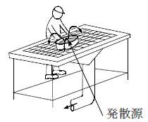
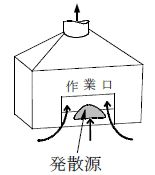
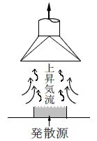
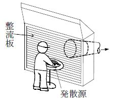
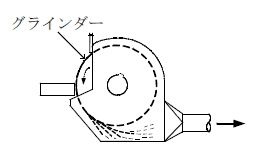
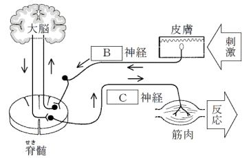
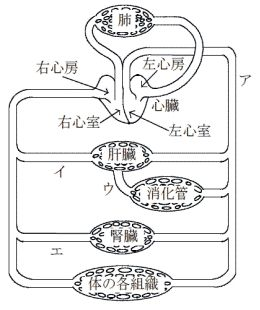
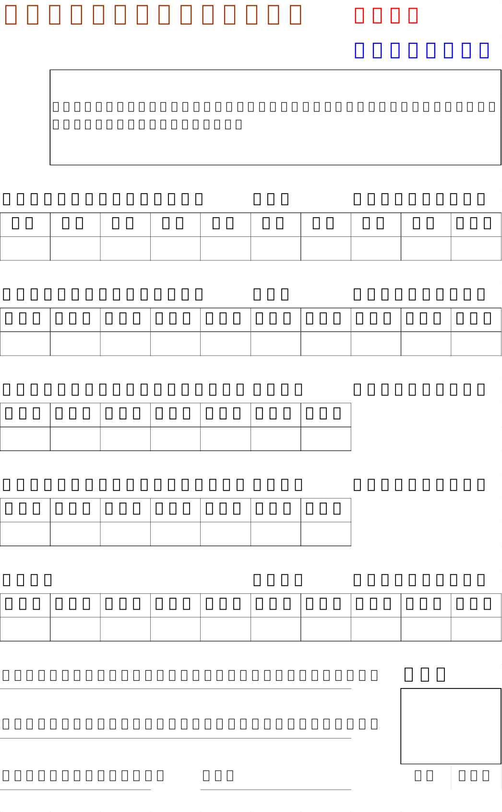

| 【新版】第一種衛生管理者試験過去問解説集（問題２回＋解説６回分）: 最新（２０１９年４月）公表問題対応 | |
| 職場の安全衛生推進協議会 & 渡部俊和 | |
| (2019) | |
Hygiene management course text
National certification
NO.2
別冊
１：最新公表問題２回分と解答・解説
２：前々回までの公表問題解説４回分
＊付録：練習問題１３０問
（解答と一行解説つき）
過去問自習用答案用紙(４枚)
２０１９-２０２０年度版
【第２２版】
公表問題による演習
２０１９（平成３１）年 ４月公表
２０１８（平成３０）年１０月公表
２回分の過去問題と解答解説
（それ以前の公表問題は多くのサイトやアプリで公開されています。年度を合わせて
解いてみてください。後半にはその他４回分の解答解説と、練習問題があります）
【公表問題を解いてみよう】
２０１８（平成３０）年下期実施＝２０１９（平成３１）年４月公表問題
〔関係法令（有害業務に係るもの）〕
問 １：ある製造業の事業場の労働者数及び有害業務等従事状況並びに産業医及び衛生管理者の選任の状況は、次の①～③のとおりである。この事業場の産業医及び衛生管理者の選任についての法令違反の状況に関する(１)～(５)の記述のうち、正しいものはどれか。ただし、産業医及び衛生管理者の選任の特例はないものとする。
① 労働者数及び有害業務等従事状況
常時使用する労働者数は800人であり、このうち、深夜業を含む業務に常時500人が、著しく暑熱な場所における業務に常時20人が従事しているが、他に有害業務に従事している者はいない。
② 産業医の選任の状況
選任している産業医は１人である。この産業医は、この事業場に専属の者ではないが、産業医としての法令の要件を満たしている医師である。
③ 衛生管理者の選任の状況
選任している衛生管理者は３人である。このうち１人は、この事業場に専属でない労働衛生コンサルタントで、衛生工学衛生管理者免許を有していない。他の２人は、この事業場に専属で、共に衛生管理者としての業務以外の業務を兼任しており、また、第一種衛生管理者免許を有しているが、衛生工学衛生管理者免許を有していない。
（１）選任している産業医がこの事業場に専属でないことが違反である。
（２）選任している衛生管理者数が少ないことが違反である。
（３）衛生管理者として選任している労働衛生コンサルタントがこの事業場に専属でないことが違反である。
（４）衛生工学衛生管理者免許を有する者のうちから選任した衛生管理者が１人もいないことが違反である。
（５）専任の衛生管理者が１人もいないことが違反である。
問 ２：次の作業のうち、法令上、作業主任者を選任しなければならないものはどれか。
（１）鉛蓄電池を解体する工程において人力で鉛等を運搬する業務に係る作業
（２）屋内作業場におけるアーク溶接の作業
（３）レーザー光線による金属加工の作業
（４）試験研究業務として塩素を取り扱う作業
（５）潜水器を用いボンベからの給気を受けて行う潜水作業
問 ３：次の業務に労働者を就かせるとき、法令に基づく安全又は衛生のための特別の教育を行わなければならないものはどれか。
（１）有機溶剤等を入れたことがあるタンクの内部における業務
（２）強烈な騒音を発する場所における作業に係る業務
（３）人力により重量物を取り扱う業務
（４）ガンマ線照射装置を用いて行う透過写真の撮影の業務
（５）削岩機、チッピングハンマー等チェーンソー以外の振動工具を取り扱う業務
問 ４：次の特定化学物質を製造しようとするとき、労働安全衛生法に基づく厚生労働大臣の許可を必要としないものはどれか。
（１）ベンゾトリクロリド
（２）ベリリウム
（３）オルト-フタロジニトリル
（４）ジアニシジン
（５）アルファ-ナフチルアミン
問 ５：有機溶剤業務を行う場合等の措置について、法令に違反しているものは次のうちどれか。ただし、有機溶剤中毒予防規則に定める適用除外及び設備の特例はないものとする。
（１）屋内作業場で、第二種有機溶剤等が付着している物の乾燥の業務に労働者を従事させるとき、その作業場所に設置した空気清浄装置を設けていない局所排気装置の排気口で、厚生労働大臣が定める濃度以上の有機溶剤を排出するものの高さを、屋根から1.5 ｍとしている。
（２）第三種有機溶剤等を用いて払拭の業務を行う屋内作業場について、定期に、当該有機溶剤の濃度を測定していない。
（３）屋内作業場で、第二種有機溶剤等が付着している物の乾燥の業務を労働者に行わせるとき、その作業場所に最大0.4m/sの制御風速を出し得る能力を有する側方吸引型外付け式フードの局所排気装置を設け、かつ、作業に従事する労働者に有機ガス用防毒マスクを使用させている。
（４）屋内作業場で、第二種有機溶剤等を用いる試験の業務に労働者を従事させるとき、有機溶剤作業主任者を選任していない。
（５）有機溶剤等を入れてあった空容器の処理として、有機溶剤の蒸気が発散するおそれのある空容器を屋外の一定の場所に集積している。
問 ６：次の粉じん作業のうち、法令上、特定粉じん作業に該当するものはどれか。
（１）屋内のガラスを製造する工程において、原料を溶解炉に投げ入れる作業
（２）耐火物を用いた炉を解体する作業
（３）屋内において、研磨材を用いて手持式動力工具により金属を研磨する箇所
における作業
（４）屋内において、フライアッシュを袋詰めする箇所における作業
（５）タンクの内部において、金属をアーク溶接する作業
問 ７：労働安全衛生規則に基づき、関係者以外の者が立ち入ることを禁止しなければならない場所に該当しないものは、次のうちどれか。
（１）多量の高熱物体を取り扱う場所
（２）病原体による汚染のおそれの著しい場所
（３）ボイラー製造等強烈な騒音を発する場所
（４）炭酸ガス(二酸化炭素)濃度が1.5％を超える場所
（５）硫化水素濃度が10 ppmを超える場所
問 ８：有害業務を行う作業場について、法令に基づき、定期に行う作業環境測定と測定頻度との組合せとして、誤っているものは次のうちどれか。
（１）非密封の放射性物質を取り扱う作業室における空気中の放射性物質の濃度の測定
.................................... ６か月以内ごとに１回
（２）チッパーによりチップする業務を行う屋内作業場における等価騒音レベルの測定
.................................... ６か月以内ごとに１回
（３）通気設備が設けられている坑内の作業場における通気量の測定
............................................. 半月以内ごとに１回
（４）鉛蓄電池の解体工程において鉛等を切断する業務を行う屋内作業場における空気中の鉛の濃度の測定 ......... １年以内ごとに１回
（５）多量のドライアイスを取り扱う業務を行う屋内作業場における気温及び湿度の測定
................................. 半月以内ごとに１回
問 ９：次の有害業務に従事した者のうち、離職の際に又は離職の後に、法令に基づく健康管理手帳の交付対象となるものはどれか。
（１）ビス(クロロメチル)エーテルを取り扱う業務に３年以上従事した者
（２）硝酸を取り扱う業務に５年以上従事した者
（３）鉛化合物を製造する業務に７年以上従事した者
（４）メタノールを取り扱う業務に10年以上従事した者
（５）粉じん作業に従事した者で、じん肺管理区分が管理一の者
問 １０：労働基準法に基づき、全ての女性労働者について、就業が禁止されている業務は次のうちどれか。
（１）20kg以上の重量物を継続的に取り扱う業務
（２）さく岩機等の使用によって身体に著しい振動を与える業務
（３）異常気圧下における業務
（４）著しく寒冷な場所における業務
（５）病原体によって汚染された物の取扱いの業務
〔労働衛生（有害業務に係るもの）〕
問 １１：次の化学物質のうち、常温・常圧(25℃、１気圧)の空気中で蒸気として存在するものはどれか。ただし、蒸気とは、常温・常圧で液体又は固体の物質が蒸気圧に応じて揮発又は昇華して気体となっているものをいうものとする。
（１）塩化ビニル
（２）ホルムアルデヒド
（３）二硫化炭素
（４）硫化水素
（５）アンモニア
問 １２：厚生労働省の「作業環境測定基準」及び「作業環境評価基準」に基づく作業環境測定及びその結果の評価に関する次の記述のうち、誤っているものはどれか。
（１）管理濃度は、有害物質に関する作業環境の状態を単位作業場所の作業環境測定結果から評価するための指標として設定されたものである。
（２）Ａ測定は、単位作業場所における有害物質の気中濃度の平均的な分布を知るために行う測定である。
（３）Ｂ測定は、単位作業場所中の有害物質の発散源に近接する場所で作業が行われる場合において、有害物質の気中濃度の最高値を知るために行う測定である。
（４）Ａ測定の第二評価値は、単位作業場所における気中有害物質の幾何平均濃度の推定値である。
（５）Ａ測定の第二評価値が管理濃度を超えている単位作業場所の管理区分は、Ｂ測定の結果に関係なく第三管理区分となる。
問 １３：有機溶剤に関する次の記述のうち、正しいものはどれか。
（１）有機溶剤は、水溶性と脂溶性を共に有し、その蒸気は空気より軽い。
（２）有機溶剤は、揮発性が高いため呼吸器から吸収されやすく、皮膚から吸収されることはない。
（３）トルエンのばく露の生物学的モニタリングの指標としての尿中代謝物は、馬尿酸である。
（４）メタノールによる健康障害として顕著なものは、網膜細動脈瘤を伴う脳血管障害である。
（５）二硫化炭素による中毒では、メトヘモグロビン形成によるチアノーゼがみられる。
問 １４：厚生労働省の「化学物質等による危険性又は有害性等の調査等に関する指針」に基づくリスクアセスメントに関する次の記述のうち、誤っているものはどれか。
（１）リスクアセスメントは、化学物質等を原材料等として新規に採用し、又は変更するときのほか、化学物質等を製造し、又は取り扱う業務に係る作業の方法又は手順を新規に採用し、又は変更するときなどに実施する。
（２）化学物質等による危険性又は有害性の特定は、化学物質等について、リスクアセスメント等の対象となる業務を洗い出した上で、国連勧告の「化学品の分類及び表示に関する世界調和システム(ＧＨＳ)」等に示されている危険性又は有害性の分類に則して行う。
（３）健康障害に係るリスクの見積りは、「化学物質等により当該労働者の健康障害を生ずるおそれの程度(発生可能性)」及び「当該健康障害の程度(重篤度)」を考慮して行う方法がある。
（４）化学物質等による健康障害に係るリスクについては、化学物質等への労働者のばく露濃度を測定し、測定結果を厚生労働省の「作業環境評価基準」に示されている「管理濃度」と比較することにより見積もる方法が確実性が高い。
（５）リスクアセスメントの実施に当たっては、化学物質等に係る安全データシート、作業標準、作業手順書、作業環境測定結果等の資料を入手し、その情報を活用する。
問 １５：粉じんによる健康障害に関する次の記述のうち、誤っているものはどれか。
（１）じん肺は、粉じんを吸入することによって肺に生じた線維増殖性変化を主体とする疾病である。
（２）じん肺は、ある程度進行すると、粉じんへのばく露を中止しても肺に生じた病変は治らず、更に進行することがある。
（３）鉱物性粉じんに含まれる遊離けい酸は、石灰化を伴う胸膜の肥厚である胸膜中皮腫を生じさせるという特徴がある。
（４）アルミニウムを含む粉じんや炭素を含む粉じんも、じん肺を起こすことがある。
（５）じん肺は、続発性気管支炎や肺結核を合併することがある。
問 １６：作業環境における有害因子による健康障害に関する次の記述のうち、正しいものはどれか。
（１）電離放射線による中枢神経系障害は、確率的影響に分類され、被ばく線量がしきい値を超えると、発生率及び重症度が線量に対応して増加する。
（２）熱けいれんは、高温環境下での労働において、皮膚の血管に血液がたまり、脳への血液の流れが少なくなることにより発生し、めまいや失神などの症状がみられる。
（３）金属熱は、金属の溶融作業などで亜鉛や銅のヒュームを吸入したときに発生し、悪寒、発熱、関節痛などの症状がみられる。
（４）凍瘡（そう）は、皮膚組織の凍結壊（え）死を伴うしもやけのことで、０℃以下の寒冷にばく露することによって発生する。
（５）潜水業務における減圧症は、浮上による減圧に伴い、血液中に溶け込んでいた酸素が気泡となり、血管を閉塞したり組織を圧迫することにより発生する。
問 １７：化学物質による健康障害に関する次の記述のうち、誤っているものはどれか。
（１）無機水銀による健康障害では、腎障害などがみられる。
（２）ノルマルヘキサンによる健康障害では、末梢神経障害などがみられる。
（３）Ｎ,Ｎ -ジメチルホルムアミドによる健康障害では、頭痛、肝機能障害などがみられる。
（４）弗化水素による中毒では、脳神経細胞が侵され、幻覚、錯乱などの精神障害などがみられる。
（５）ベンゼンによる健康障害では、長期間のばく露によって造血器障害が現れ、再生不良性貧血を生じる。
問 １８：化学物質と、それにより発症するおそれのある主たるがんとの組合せとして、正しいものは次のうちどれか。
（１）塩化ビニル................................. 肝血管肉腫
（２）ベンジジン................................. 胃がん
（３）ベータ-ナフチルアミン............... 肺がん
（４）コールタール.............................. 白血病
（５）クロム酸.................................... 皮膚がん
問 １９：局所排気装置に関する次の記述のうち、正しいものはどれか。
（１）ダクトの形状には円形、角形などがあり、その断面積を大きくするほど、ダクトの圧力損失が増大する。
（２）フード開口部の周囲にフランジがあると、フランジがないときに比べ、気流の整流作用が増すので、大きな排風量が必要となる。
（３）ドラフトチェンバ型フードは、発生源からの飛散速度を利用して捕捉するもので、外付け式フードに分類される。
（４）建築ブース型フードは、作業面を除き周りが覆われているもので、外付け式フードに分類される。
（５）ダクトは、曲がり部分をできるだけ少なくするように配管し、主ダクトと枝ダクトとの合流角度は45°を超えないようにする。
問 ２０：呼吸用保護具に関する次の記述のうち、誤っているものはどれか。
（１）有機ガス用防毒マスクの吸収缶の色は黒色であり、シアン化水素用防毒マスクの吸収缶の色は青色である。
（２）ガス又は蒸気状の有害物質が粉じんと混在している作業環境中で防毒マスクを使用するときは、防じん機能を有する防毒マスクを選択する。
（３）酸素濃度18％未満の場所で使用できる呼吸用保護具には、送気マスク、空気呼吸器のほか、電動ファン付き呼吸用保護具がある。
（４）送気マスクは、清浄な空気をパイプ、ホースなどにより作業者に供給する呼吸用保護具である。
（５）空気呼吸器は、ボンベに充てんされた清浄空気を作業者に供給する自給式呼吸器である。
〔関係法令（有害業務に係るもの以外のもの）〕
問 ２１： 常時使用する労働者数が300人で、次の業種に属する事業場のうち、法令上、総括安全衛生管理者の選任が義務付けられていない業種はどれか。
（１）通信業
（２）各種商品小売業
（３）旅館業
（４）ゴルフ場業
（５）医療業
問 ２２：産業医の職務として、法令に定められていない事項は次のうちどれか。ただし、次のそれぞれの事項のうち医学に関する専門的知識を必要とするものに限るものとする。
（１）衛生教育に関すること。
（２）作業環境の維持管理に関すること。
（３）作業の管理に関すること。
（４）労働者の健康障害の原因の調査及び再発防止のための措置に関すること。
（５）安全衛生に関する方針の表明に関すること。
問 ２３：労働安全衛生規則に基づく医師による雇入時の健康診断に関する次の記述のうち、誤っているものはどれか。
（１）医師による健康診断を受けた後、３か月を経過しない者を雇い入れる場合、その健康診断の結果を証明する書面の提出があったときは、その健康診断の項目に相当する雇入時の健康診断の項目を省略することができる。
（２）雇入時の健康診断における聴力の検査は、1,000 ヘルツ及び3,000ヘルツの音に係る聴力について行わなければならない。
（３）雇入時の健康診断の項目には、血糖検査が含まれているが、血液中の尿酸濃度の検査は含まれていない。
（４）雇入時の健康診断の結果に基づき、健康診断個人票を作成して、これを５年間保存しなければならない。
（５）雇入時の健康診断の結果については、事業場の規模にかかわらず、所轄労働基準監督署長に報告する必要はない。
問 ２４：労働時間の状況等が一定の要件に該当する労働者に対して、法令により実施することとされている医師による面接指導の結果に基づく記録に記載しなければならない事項として定められていないものは、次のうちどれか。
（１）面接指導を行った医師の氏名
（２）面接指導を受けた労働者の氏名
（３）面接指導を受けた労働者の家族の状況
（４）面接指導を受けた労働者の疲労の蓄積の状況
（５）面接指導の結果に基づき、労働者の健康を保持するために必要な措置について医師から聴取した意見
問 ２５：事業場の建築物、施設等に関する措置について、労働安全衛生規則の衛生基準に違反していないものは次のうちどれか。
（１）日常行う清掃のほか、大掃除を、１年以内ごとに１回、定期に、統一的に行っている。
（２）男性20人、女性25人の労働者を常時使用している事業場で、労働者が臥床が
することのできる休養室又は休養所を、男性用と女性用に区別して設けていない。
（３）事業場に附属する食堂の炊事従業員について、専用の便所を設けているほか、一般の労働者と共用の休憩室を備えている。
（４）事業場に附属する食堂の床面積を、食事の際の１人について、0.8ｍ２としている。
（５）労働衛生上の有害業務を有しない事業場において、窓その他の開口部の直接外気に向って開放することができる部分の面積が、常時床面積の25分の１である屋内作業場に、換気設備を設けていない。
問 ２６：労働基準法に定める妊産婦に関する次の記述のうち、法令上、誤っているものはどれか。ただし、労使協定とは、「労働者の過半数で組織する労働組合(その労働組合がない場合は労働者の過半数を代表する者)と使用者との書面による協定」をいい、また、管理監督者等とは、「監督又は管理の地位にある者等、労働時間、休憩及び休日に関する規定の適用除外者」をいう。
（１）時間外・休日労働に関する労使協定を締結し、これを所轄労働基準監督署長に届け出ている場合であっても、妊産婦が請求した場合には、管理監督者等の場合を除き、時間外・休日労働をさせてはならない。
（２）１か月単位の変形労働時間制を採用している場合であっても、妊産婦が請求した場合には、管理監督者等の場合を除き、１週40時間及び１日８時間を超えて労働させてはならない。
（３）１年単位の変形労働時間制を採用している場合であっても、妊産婦が請求した場合には、管理監督者等の場合を除き、１週40時間及び１日８時間を超えて労働させてはならない。
（４）フレックスタイム制を採用している場合であっても、妊産婦が請求した場合には、管理監督者等の場合を除き、フレックスタイム制による労働をさせてはならない。
（５）妊産婦が請求した場合には、管理監督者等の場合であっても、深夜業をさせてはならない。
問 ２７：労働基準法に定める育児時間に関する次の記述のうち、誤っているものはどれか。
（１）生後満１年を超え、満２年に達しない生児を育てる女性労働者は、育児時間を請求することができる。
（２）育児時間は、必ずしも有給としなくてもよい。
（３）育児時間は、原則として、１日２回、１回当たり少なくとも30分の時間を請求することができる。
（４）育児時間を請求しない女性労働者に対しては、育児時間を与えなくてもよい。
（５）育児時間は、育児時間を請求することができる女性労働者が請求する時間に与えなければならない。
〔労働衛生（有害業務に係るもの以外のもの）〕
問 ２８：厚生労働省の「職場における腰痛予防対策指針」に基づく、重量物取扱い作業などにおける腰痛予防対策に関する次の記述のうち、正しいものはどれか。
（１）満18歳以上の男子労働者が人力のみで取り扱う物の重量は、体重のおおむね50％以下となるようにする。
（２）腰部保護ベルトは、全員に使用させるようにする。
（３）立ち作業時は身体を安定に保持するため、床面は弾力性のない硬い素材とする。
（４）腰掛け作業の場合の作業姿勢は、椅子に深く腰を掛けて、背もたれで体幹を支え、履物の足裏全体が床に接する姿勢を基本とする。
（５）腰部に著しい負担のかかる作業に常時従事する労働者に対しては、１年以内ごとに１回、定期に、腰痛の健康診断を実施する。
問 ２９：厚生労働省の「ＶＤＴ作業における労働衛生管理のためのガイドライン」に
基づく措置に関する次の記述のうち、誤っているものはどれか。
（１）ディスプレイ画面上における照度は、500ルクス以下になるようにする。
（２）書類上及びキーボード上における照度は、300ルクス以上になるようにする。
（３）ディスプレイは、おおむね40cm以上の視距離が確保できるようにし、画面の上端が眼と同じ高さか、やや下になるようにする。
（４）単純入力型又は拘束型に該当するＶＤＴ作業については、一連続作業時間が１時間を超えないようにし、次の連続作業までの間に10～15分の作業休止時間を設け、かつ、一連続作業時間内において１～２回程度の小休止を設けるようにする。
（５）ＶＤＴ作業健康診断では、原則として、視力検査、上肢及び下肢の運動機能検査などを行う。
問 ３０：一次救命処置に関する次の記述のうち、誤っているものはどれか。
（１）傷病者の反応がない場合は、その場で大声で叫んで周囲の注意を喚起し、協力者を確保する。
（２）周囲に協力者がいる場合は、119番通報やＡＥＤ(自動体外式除細動器)の手配を依頼する。
（３）口対口人工呼吸は、傷病者の気道を確保してから鼻をつまみ、１回の吹き込みに約３秒かけて傷病者の胸の盛り上がりが見える程度まで吹き込む。
（４）胸骨圧迫は、胸が約５cm沈む強さで、１分間に100～120回のテンポで行う。
（５）ＡＥＤを用いた場合、心電図の自動解析の結果「ショックは不要です」などのメッセージが流れたときには、胸骨圧迫を開始し心肺蘇生を続ける。
問 ３１：脳血管障害及び虚血性心疾患に関する次の記述のうち、誤っているものはどれか｡
（１）脳血管障害は、脳の血管の病変が原因で生じ、出血性病変、虚血性病変などに分類される。
（２）出血性の脳血管障害は、脳表面のくも膜下腔に出血するくも膜下出血、脳実質内に出血する脳出血などに分類される。
（３）虚血性の脳血管障害である脳梗塞は、脳血管自体の動脈硬化性病変による脳血栓症と、心臓や動脈壁の血栓などが剥がれて脳血管を閉塞する脳塞栓症に分類される。
（４）虚血性心疾患は、門脈による心筋への血液の供給が不足したり途絶えることにより起こる心筋障害である。
（５）虚血性心疾患は、心筋の一部分に可逆的虚血が起こる狭心症と、不可逆的な心筋壊死が起こる心筋梗塞とに大別される。
問 ３２：出血及び止血法に関する次の記述のうち、誤っているものはどれか。
（１）体内の全血液量は、体重の約８％で、その約３分の１を短時間に失うと生命が危険な状態となる。
（２）止血法には、直接圧迫法、間接圧迫法などがあるが、一般人が行う応急手当としては直接圧迫法が推奨されている。
（３）静脈性出血は、傷口からゆっくり持続的に湧き出るような出血で、通常、直接圧迫法で止血する。
（４）止血帯を施した後、受傷者を医師に引き継ぐまでに１時間以上かかる場合には、止血帯を施してから１時間ごとに１～２分間、出血部から血液がにじんでくる程度まで結び目をゆるめる。
（５）止血を行うときは、処置者の感染防止のため、ビニール手袋を着用したりビニール袋を活用したりして、受傷者の血液に直接触れないようにする。
問 ３３：食中毒に関する次の記述のうち、正しいものはどれか。
（１）毒素型食中毒は、食物に付着した細菌により産生された毒素によって起こる食中毒で、代表的なものとしてサルモネラ菌によるものがある。
（２）感染型食中毒は、食物に付着した細菌そのものの感染によって起こる食中毒で、代表的なものとして黄色ブドウ球菌によるものがある。
（３）Ｏ-157は、腸管出血性大腸菌の一種で、加熱不足の食肉などから摂取され、潜伏期間は３～５日である。
（４）ボツリヌス菌は、缶詰や真空パックなど酸素のない密封食品中でも増殖するが、熱には弱く、80℃程度で殺菌することができる。
（５）赤身魚などに含まれるヒスチジンが細菌により分解されて生成されるヒスタミンは、加熱調理によって分解する。
問 ３４：労働者の健康保持増進のために行う健康測定における運動機能検査の項目とその測定種目との組合せとして、誤っているものは次のうちどれか。
（１）筋力.................. 握力
（２）柔軟性............... 上体起こし
（３）平衡性............... 閉眼(又は開眼)片足立ち
（４）敏しょう性......... 全身反応時間
（５）全身持久性......... 最大酸素摂取量
〔労働生理〕
問 ３５：呼吸に関する次の記述のうち、正しいものはどれか。
（１）呼吸運動は、主として肋間筋と横隔膜の協調運動によって胸郭内容積を周期的に増減し、それに伴って肺を伸縮させることにより行われる。
（２）肺胞内の空気と肺胞を取り巻く毛細血管中の血液との間で行われるガス交換は、内呼吸である。
（３）成人の呼吸数は、通常、１分間に16～20回であるが、食事、入浴及び発熱によって減少する。
（４）呼吸に関与する筋肉は、間脳の視床下部にある呼吸中枢によって支配されている。
（５）身体活動時には、血液中の窒素分圧の上昇により呼吸中枢が刺激され、１回換気量及び呼吸数が増加する。
問 ３６：心臓の働きと血液の循環に関する次の記述のうち、誤っているものはどれか。
（１）心臓の中にある洞結節(洞房結節)で発生した刺激が、刺激伝導系を介して心筋に伝わることにより、心臓は規則正しく収縮と拡張を繰り返す。
（２）体循環は、左心室から大動脈に入り、毛細血管を経て静脈血となり右心房に戻ってくる血液の循環である。
（３）肺循環は、右心室から肺静脈を経て肺の毛細血管に入り、肺動脈を通って左心房に戻る血液の循環である。
（４）心臓の拍動は、自律神経の支配を受けている。
（５）大動脈及び肺静脈を流れる血液は、酸素に富む動脈血である。
問 ３７：体温調節に関する次の記述のうち、正しいものはどれか。
（１）体温調節中枢は、脳幹の延髄にある。
（２）体温調節のように、外部環境が変化しても身体内部の状態を一定に保つ生体の仕組みを同調性といい、筋肉と神経系により調整されている。
（３）寒冷な環境においては、皮膚の血管が拡張して血流量を増し、皮膚温を上昇させる。
（４）計算上、体重70kgの人の体表面から10ｇの汗が蒸発すると、体温が約１℃下がる。
（５）人間は発汗のほかに、常時、呼気や皮膚表面からも水分を蒸発させており、この蒸発のことを不感蒸泄という。
問 ３８：血液に関する次の記述のうち、誤っているものはどれか。
（１）赤血球は、骨髄で産生され、寿命は約120日であり、血球の中で最も多い。
（２）血液中に占める赤血球の容積の割合をヘマトクリットといい、貧血になるとその値は低くなる。
（３）好中球は、白血球の約60％を占め、偽足を出してアメーバ様運動を行い、体内に侵入してきた細菌などを貪食する。
（４）リンパ球は、白血球の約30％を占め、Ｔリンパ球やＢリンパ球などの種類があり、免疫反応に関与している。
（５）ＡＢＯ式血液型は、白血球による血液型分類の一つで、Ａ型血液の血清は抗Ａ抗体をもつ。
問 ３９：消化器系に関する次の記述のうち、誤っているものはどれか。
（１）三大栄養素のうち糖質はブドウ糖などに、蛋（たん）白質はアミノ酸に、脂肪は脂肪酸とグリセリンに、酵素により分解されて吸収される。
（２）無機塩やビタミン類は、酵素による分解を受けないでそのまま吸収される。
（３）膵（すい）臓から十二指腸に分泌される膵液には、消化酵素は含まれていないが、血糖値を調節するホルモンが含まれている。
（４）ペプシノーゲンは、胃酸によってペプシンという消化酵素になり、蛋白質を分解する。
（５）小腸の表面は、ビロード状の絨（じゅう）毛という小突起で覆われており、栄養素の吸収の効率を上げるために役立っている。
問 ４０：次のうち、正常値に男女による差がないとされているものはどれか。
（１）赤血球数
（２）ヘモグロビン量
（３）血小板数
（４）基礎代謝量
（５）ヘマトクリット値
問 ４１：視覚に関する次の記述のうち、誤っているものはどれか｡
（１）眼をカメラに例えると、虹彩はしぼりの働きをする。
（２）ヒトの眼は、硝子体の厚さを変えることにより焦点距離を調節して網膜の上に像を結ぶようにしている。
（３）角膜が歪んでいたり、表面に凹凸があるために、眼軸などに異常がなくても、物体の像が網膜上に正しく結ばないものを乱視という。
（４）網膜には、錐（すい）状体と杆（かん）状体の二種類の視細胞がある。
（５）視作業の継続により、前額部の圧迫感、頭痛、複視、吐き気、嘔吐などの眼精疲労を生じ、作業の継続が困難になることがある。
問 ４２：ホルモン、その内分泌器官及びそのはたらきの組合せとして、誤っているものは次のうちどれか。
ホルモン 内分泌器官 はたらき
（１）セクレチン 十二指腸 消化液分泌促進
（２）アルドステロン 副腎皮質 血中の塩類バランスの調節
（３）パラソルモン 副甲状腺 血中のカルシウムバランスの調節
（４）インスリン 膵臓 血糖量の増加
（５）ガストリン 胃 胃酸分泌刺激
問 ４３：筋肉に関する次の記述のうち、誤っているものはどれか。
（１）筋肉は、神経から送られてくる刺激によって収縮するが、神経に比べて疲労しやすい。
（２）強い力を必要とする運動を続けていても、筋肉を構成する個々の筋線維の太さは変わらないが、その数が増えることによって筋肉が太くなり筋力が増強する。
（３）筋肉中のグリコーゲンは、筋肉の収縮時に酸素が不足していると、水と二酸化炭素にまで分解されず乳酸になる。
（４）筋肉が収縮して出す最大筋力は、筋肉の単位断面積当たりの平均値をとると、性差又は年齢差がほとんどない。
（５）荷物を持ち上げたり屈伸運動をするとき、関節運動に関与する筋肉には、等張性収縮が生じている。
問 ４４：睡眠に関する次の記述のうち、誤っているものはどれか。
（１）睡眠と覚醒のリズムのように、約１日の周期で繰り返される生物学的リズムをサーカディアンリズムといい、このリズムの乱れは、疲労や睡眠障害の原因となる。
（２）睡眠は、睡眠中の目の動きなどによって、レム睡眠とノンレム睡眠に分類される。
（３）コルチゾールは、血糖値の調節などの働きをするホルモンで、通常、その分泌量は明け方から増加し始め、起床前後で最大となる。
（４）レム睡眠は、安らかな眠りで、この間に脳は休んだ状態になっている。
（５）メラトニンは、睡眠に関与しているホルモンである。
２０１８（平成３０）年上期実施＝２０１８（平成３０）年１０月公表問題
〔関係法令（有害業務に係るもの）〕
問 １：常時800人の労働者を使用する製造業の事業場における衛生管理体制に関する(１)～(５)の記述のうち、法令上、誤っているものはどれか。
ただし、800人中には、製造工程において次の業務に常時従事する者が含まれているが、他に有害業務に従事している者はいないものとし、衛生管理者及び産業医の選任の特例はないものとする。
鉛、クロム及び一酸化炭素の粉じん又は ガスを発散する場所における業務......... 30人
深夜業を含む業務 ................................................... 300人
（１）衛生管理者は、３人以上選任しなければならない。
（２）衛生管理者のうち１人については、この事業場に専属ではない労働衛生コンサルタントのうちから選任することができる。
（３）衛生管理者のうち１人を、衛生工学衛生管理者免許を有する者のうちから選任しなければならない。
（４）衛生管理者のうち少なくとも１人を、専任の衛生管理者として選任しなければならない。
（５）産業医は、この事業場に専属の者を選任しなければならない。
問 ２：次の装置のうち、法令に基づく定期自主検査を行わなければならないものはどれか。
（１）木材加工用丸のこ盤を使用する作業場所に設けた局所排気装置
（２）アーク溶接を行う屋内作業場に設けた全体換気装置
（３）エタノールを使用する作業場所に設けた局所排気装置
（４）アンモニアを使用する作業場所に設けたプッシュプル型換気装置
（５）屋内の、フライアッシュを袋詰めする箇所に設けたプッシュプル型換気装置
問 ３：有害業務とそれに従事する労働者に対して特別の項目について行う健康診断の項目の一部との組合せとして、法令上、正しいものは次のうちどれか。
（１）高圧室内業務 ..................... 尿中のウロビリノーゲンの検査
（２）有機溶剤業務 ..................... 赤血球中のプロトポルフィリンの量の検査
（３）放射線業務 ........................ 尿中の潜血の有無の検査
（４）潜水業務 ........................... 血液中の尿酸の量の検査
（５）鉛業務 .............................. 尿中のデルタアミノレブリン酸の量の検査
問 ４：次の業務に労働者を就かせるとき、法令に基づく安全又は衛生のための特別
の教育を行わなければならないものに該当しないものはどれか。
（１）ガンマ線照射装置を用いて行う透過写真の撮影の業務
（２）チェーンソーを用いて行う造材の業務
（３）第二種有機溶剤等を取り扱う業務
（４）高圧室内作業に係る業務
（５）石綿等が使用されている建築物の解体等の作業に係る業務
問 ５：次の文中の（ ）内に入れるＡ及びＢの語句の組合せとして、正しいものは(１)～(５)のうちどれか。
「特定化学物質障害予防規則には、特定化学物質の用後処理として、除じん、排ガス処理、（ Ａ ）、残さい物処理及びぼろ等の処理の規定がある。その中の（ Ａ ）については、シアン化ナトリウムの場合には、（ Ｂ ）方式若しくは活性汚泥方式による（ Ａ ）装置又はこれらと同等以上の性能を有する（ Ａ ）装置を設けなければならないと規定されている。」
Ａ Ｂ
（１）浄化処理 中和
（２）浄化処理 吸収
（３）浄化処理 凝集沈殿
（４）排液処理 吸着
（５）排液処理 酸化・還元
問 ６：粉じん障害防止規則に基づく措置に関する次の記述のうち、誤っているものはどれか。ただし、同規則に定める適用除外及び特例はないものとする。
（１）常時特定粉じん作業を行う屋内作業場については、６か月以内ごとに１回、定期に、空気中の粉じんの濃度の測定を行い、測定結果等を記録して、これを７年間保存しなければならない。
（２）特定粉じん作業を行う屋内作業場については、当該粉じん作業に係る粉じんを減少させるため、全体換気装置による換気を実施しなければならない。
（３）粉じん作業を行う屋内の作業場所については、毎日１回以上、清掃を行わなければならない。
（４）法令に基づき局所排気装置に設ける除じん装置は、ヒュームとヒューム以外の粉じんに応じて、除じん方式が定められている。
（５）除じん装置を付設すべき局所排気装置の排風機は、原則として、除じんをした後の空気が通る位置に設けなければならない。
問 ７：地下室の内部の作業場において、常時、有機溶剤業務を行う場合の措置について、有機溶剤中毒予防規則に違反しているものは次のうちどれか。ただし、同規則に定める適用除外及び設備の特例はないものとする。
（１）第一種有機溶剤等を用いて洗浄作業を行う場所に、局所排気装置を設け有効に稼働させているが、作業者に送気マスクも有機ガス用防毒マスクも使用させていない。
（２）第二種有機溶剤等を用いて払しょく作業を行う場所に、プッシュプル型換気装置を設けブース内の気流の乱れもなく有効に稼働させているが、作業者に送気マスクも有機ガス用防毒マスクも使用させていない。
（３）第三種有機溶剤等を用いて吹付けによる塗装作業を行う場所に、全体換気装置を設け有効に稼働させているが、作業者に送気マスクも有機ガス用防毒マスクも使用させていない。
（４）作業場所に設置した局所排気装置で空気清浄装置を設けていないものの排気口の高さを、屋根から２ｍとしている。
（５）第二種有機溶剤等を用いて、つや出し作業を行う場所の見やすい箇所に、有機溶剤等の区分を黄による色分けと色分け以外の方法を併用して表示している。
問 ８：次の作業のうち、法令上、第二種酸素欠乏危険作業に該当するものはどれか。
（１）汚水その他腐敗しやすい物質を入れたことのある暗きょの内部における作業
（２）相当期間密閉されていた鋼製のタンクの内部における作業
（３）果菜の熟成のために使用している倉庫の内部における作業
（４）第一鉄塩類を含有している地層に接するたて坑の内部における作業
（５）ドライアイスを使用して冷蔵を行っている保冷貨物自動車の内部における作業
問 ９：有害業務を行う作業場等について、法令に基づき、定期に行う作業環境測定
と測定頻度との組合せとして、誤っているものは次のうちどれか。
（１） 非密封の放射性物質を取り扱う作業室における空気中の放射性物質の濃度の測定
............................................................ １か月以内ごとに１回
（２）チッパーによりチップする業務を行う屋内作業場における等価騒音レベルの測定 ............................................................ １年以内ごとに１回
（３）通気設備が設けられている坑内の作業場における通気量の測定
..................................................................... 半月以内ごとに１回
（４）鉛蓄電池の解体工程において鉛等を切断する業務を行う屋内作業場における空気中の鉛の濃度の測定 ......... .................................... ...... １年以内ごとに１回
（５）多量のドライアイスを取り扱う業務を行う屋内作業場における気温及び湿度の測定
......................................................... 半月以内ごとに１回
問 １０：労働基準法に基づく有害業務への就業制限に関する次の記述のうち、誤っているものはどれか。
（１）妊娠中の女性は、異常気圧下における業務に就かせてはならない。
（２）満18歳以上で産後８週間を経過したが１年を経過しない女性から、著しく寒冷な場所における業務に従事しない旨の申出があった場合には、当該業務に就かせてはならない。
（３）満18歳以上で産後８週間を経過したが１年を経過しない女性から、さく岩機、鋲打機等身体に著しい振動を与える機械器具を用いる業務に従事したい旨の申出があった場合でも、当該業務に就かせてはならない。
（４）満18歳以上で産後１年を経過した女性から、20kgの重量物を継続作業で取り扱う業務に従事したい旨の申出があった場合には、当該業務に就かせることができる。
（５）満18歳未満の者は、土石、獣毛等のじんあい又は粉末を著しく飛散する場所における業務に就かせてはならない。
〔労働衛生（有害業務に係るもの）〕
問 １１：厚生労働省の「化学物質等による危険性又は有害性等の調査等に関する指針」において示されている、化学物質等による疾病に係るリスクを見積もる方法として不適切なものは次のうちどれか。ただし、発生可能性とは、化学物質等により労働者の健康障害を生ずるおそれの程度をいい、重篤度とは、健康障害の程度をいう。
（１）発生可能性及び重篤度を相対的に尺度化し、それらを縦軸と横軸とし、あらかじめ発生可能性及び重篤度に応じてリスクが割り付けられた表を使用する方法
（２）発生可能性及び重篤度を一定の尺度によりそれぞれ数値化し、それらを加算又は乗算等する方法
（３）発生可能性及び重篤度を段階的に分岐していく方法
（４）化学物質等への労働者のばく露の程度及び当該化学物質等による有害性を相対的に尺度化し、それらを縦軸と横軸とし、あらかじめばく露の程度及び有害性の程度に応じてリスクが割り付けられた表を使用する方法
（５）化学物質等への労働者のばく露濃度を測定し、測定結果を厚生労働省の「作業環境評価基準」に示されている当該化学物質の管理濃度と比較する方法
問 １２：有害物質とその常温・常圧(25℃、１気圧)での空気中における状態との組合せとして、誤っているものは次のうちどれか。
ただし、ガスとは、常温・常圧で気体のものをいい、蒸気とは、常温・常圧で液体又は固体の物質が蒸気圧に応じて揮発又は昇華して気体となっているものをいうものとする。
（１）塩素 ....................................... ガス
（２）アンモニア .............................. ガス
（３）アセトン ................................. 蒸気
（４）フェノール .............................. 蒸気
（５）ホルムアルデヒド ..................... 蒸気
問 １３：化学物質と、それにより発症するおそれのある主たるがんとの組合せとして、
正しいものは次のうちどれか。
（１）塩化ビニル .................................... 肝血管肉腫
（２）ベンジジン .................................... 皮膚がん
（３）ビス(クロロメチル)エーテル ............ 膀胱（ぼうこう）がん
（４）クロム酸 ....................................... 大腸がん
（５）石綿 ............................................. 胃がん
問 １４：金属による中毒に関する次の記述のうち、正しいものはどれか。
（１）鉛中毒では、貧血、伸筋麻痺、腹部の疝（せん）痛などの症状がみられる。
（２）カドミウム中毒では、感情不安定、幻覚などの精神障害や手指の震えなど
の症状がみられる。
（３）マンガン中毒では、指の骨の溶解、皮膚の硬化などの症状がみられる。
（４）クロム中毒では、低分子蛋（たん）白尿、歯への黄色の色素沈着、視野狭窄（さく）などの症状がみられる。
（５）金属水銀中毒では、骨軟化症、鼻中隔穿（せん）孔などの症状がみられる。
問 １５：粉じん(ヒュームを含む)による健康障害に関する次の記述のうち、誤っているものはどれか。
（１）じん肺は、粉じんを吸入することによって肺に生じた線維増殖性変化を主体とする疾病である。
（２）じん肺は、肺結核のほか、続発性気管支炎、続発性気胸、原発性肺がんなどを合併することがある。
（３）鉱物性粉じんに含まれる遊離けい酸(ＳiＯ２)は、石灰化を伴う胸膜肥厚や胸膜中皮腫を生じさせるという特徴がある。
（４）溶接工肺は、溶接に際して発生する酸化鉄ヒュームのばく露によって発症するじん肺である。
（５）炭素を含む粉じんもじん肺を起こすことがある。
問 １６：作業環境における騒音及びそれによる健康障害に関する次の記述のうち、誤っているものはどれか。
（１）騒音レベルの測定は、通常、騒音計の周波数補正回路のＡ特性で行い、その大きさはｄＢ(Ａ)で表示する。
（２）騒音性難聴は、感音性の難聴で、耳鳴りを伴うことが多い。
（３）騒音は、自律神経系や内分泌系へも影響を与える。
（４）騒音性難聴は、騒音により中耳の有毛細胞が変性することにより生じる。
（５）等価騒音レベルは、時間的に変動する騒音レベルのエネルギー的な平均値
を表す量で、変動する騒音に対する人間の生理・心理的反応とよく対応している。
問 １７：作業環境における有害要因による健康障害に関する次の記述のうち、正しいものはどれか。
（１）マイクロ波は、赤外線より波長が短い電磁波で、照射部位の組織を加熱する作用がある。
（２）熱痙攣（けいれん）は、高温環境下での労働において、皮膚の血管に血液がたまり、脳への血液の流れが少なくなることにより発生し、めまい、失神などの症状がみられる。
（３）全身振動障害では、レイノー現象などの末梢（しょう）循環障害や手指のしびれ感などの末梢神経障害がみられ、局所振動障害では、関節痛などの筋骨格系障害がみられる。
（４）凍瘡（そう）は、皮膚組織の凍結壊（え）死を伴うしもやけのことで、０℃以下の寒冷にばく露することによって発生する。
（５）金属熱は、金属の溶融作業などで亜鉛、銅などのヒュームを吸入したとき発生し、悪寒、発熱、関節痛などの症状がみられる。
問 １８：厚生労働省の「作業環境測定基準」及び「作業環境評価基準」に基づく作業環境測定及びその結果の評価に関する次の記述のうち、誤っているものはどれか。
（１）管理濃度は、有害物質に関する作業環境の状態を単位作業場所の作業環境測定結果から評価するための指標として設定されたものである。
（２）単位作業場所は、作業場の区域のうち労働者の作業中の行動範囲、有害物の分布等の状況等に基づき定められる作業環境測定のために必要な区域をいう。
（３）Ｂ測定は、有害物の発散源に近接する場所において作業が行われる場合に、有害物の濃度が最も高くなると思われる時間に、その作業が行われる位置において行う測定である。
（４）Ａ測定の第二評価値及びＢ測定の測定値がいずれも管理濃度に満たない単位作業場所は、Ａ測定の第一評価値に関係なく第一管理区分になる。
（５）Ｂ測定の測定値が管理濃度の1.5倍を超えている単位作業場所の管理区分は、Ａ測定の結果に関係なく第三管理区分となる。
問 １９：局所排気装置のフードの型式について、一般に、排気効果が大きいとされる順に並べたものは、次のうちどれか。
（１）囲い式カバー型＞囲い式建築ブース型＞外付け式ルーバ型
（２）囲い式建築ブース型＞囲い式グローブボックス型＞外付け式ルーバ型
（３）囲い式ドラフトチェンバ型＞外付け式ルーバ型＞囲い式カバー型
（４）外付け式ルーバ型＞囲い式ドラフトチェンバ型＞囲い式カバー型
（５）外付け式ルーバ型＞囲い式建築ブース型＞囲い式グローブボックス型
問 ２０：呼吸用保護具に関する次の記述のうち、正しいものはどれか。
（１）二種類以上の有毒ガスが混在している場合には、そのうち最も毒性の強いガス用の防毒マスクを使用する。
（２）有機ガス用の防毒マスクの吸収缶の色は、黒色である。
（３）型式検定合格標章のある防じんマスクでも、ヒュームに対しては無効である。
（４）防じんマスクの手入れの際、ろ過材に付着した粉じんは圧縮空気で吹き飛ばすか、ろ過材を強くたたいて払い落として除去する。
（５）有毒ガスの濃度が高い場合には、電動ファン付き呼吸用保護具を使用する。
〔関係法令（有害業務に係るもの以外のもの）〕
問 ２１：事業者が衛生管理者に管理させるべき業務として、法令上、誤っているものは次のうちどれか。ただし、次のそれぞれの業務のうち衛生に係る技術的事項に限るものとする。
（１）安全衛生に関する方針の表明に関すること。
（２）事業者に対して行う労働者の健康管理等についての必要な勧告に関すること。
（３）安全衛生に関する計画の作成、実施、評価及び改善に関すること。
（４）労働災害の原因の調査及び再発防止対策に関すること。
（５）健康診断の実施その他健康の保持増進のための措置に関すること。
問 ２２：産業医に関する次の記述のうち、法令上、誤っているものはどれか。ただし、産業医の選任の特例はないものとする。
（１）産業医を選任しなければならない事業場は、常時50人以上の労働者を使用する事業場である。
（２）産業医は、労働者の健康管理等を行うのに必要な医学に関する知識について一定の要件を備えた医師のうちから選任しなければならない。
（３）事業者は、選任した産業医に、労働者の健康管理等を行わせなければならない。
（４）常時 3,000人を超える労働者を使用する事業場では、２人以上の産業医を選任しなければならない。
（５）産業医は、選任すべき事由が発生した日から30日以内に選任しなければならない。
問 ２３：労働安全衛生規則に基づく次のＡからＥの定期健康診断項目のうち、厚生労働大臣が定める基準に基づき、医師が必要でないと認めるときは、省略することができる項目に該当しないものの組合せは(１)～(５)のうちどれか。
Ａ 尿検査
Ｂ 血圧の測定
Ｃ 肝機能検査
Ｄ 心電図検査
Ｅ 血中脂質検査
（１）Ａ，Ｂ
（２）Ａ，Ｃ
（３）Ｂ，Ｄ
（４）Ｃ，Ｅ
（５）Ｄ，Ｅ
問 ２４：労働時間の状況等が一定の要件に該当する労働者に対して、法令により実施することが義務付けられている医師による面接指導に関する次の記述のうち、誤っているものはどれか。
（１）面接指導の対象となる労働者の要件は、原則として、休憩時間を除き１週間当たり40時間を超えて労働させた場合におけるその超えた時間が１か月当たり100時間を超え、かつ、疲労の蓄積が認められる者であることとする。
（２）面接指導は、労働時間の状況等が一定の要件に該当する労働者の申出により行うものとする。
（３）医師は、対象となる労働者の面接指導を行うに当たり、勤務の状況、疲労の蓄積の状況の他、心身の状況について確認を行う。
（４）事業者は、面接指導の結果に基づき、当該労働者の健康を保持するため必要な措置について、面接指導が行われた後、遅滞なく、医師の意見を聴かなければならない。
（５）事業者は、面接指導の結果に基づき、その記録を作成し、３年間保存しなければならない。
（注：この問題の内容には2019年4月の法改正が反映されていないため、現時点で誤りは２つある）
問 ２５：事業場の建築物、施設等に関する措置について、労働安全衛生規則の衛生基準に違反していないものは次のうちどれか。
（１）事業場に附属する炊事場の入口には、土足のまま立ち入ることができるように、洗浄剤を含浸させたマットを設置している。
（２）常時、男性20人、女性25人の労働者を使用している事業場で、休憩の設備を設けているが、労働者が臥（が）床することのできる休養室又は休養所を男女別に設けていない。
（３）事業場に附属する食堂の炊事従業員について、専用の便所を設けているが、休憩室は一般従業員と共用のもののみを設けている。
（４）60人の労働者を常時就業させている屋内作業場の気積が、設備の占める容積及び床面から４ｍを超える高さにある空間を除き500ｍ３となっている。
（５）日常行う清掃のほか、１年ごとに１回、定期に、大掃除を行っている。
問 ２６：常時10人以上の労働者を使用する事業場において、労働基準法に定める妊産婦等に関する次の記述のうち、法令上、誤っているものはどれか。ただし、労使協定とは、「労働者の過半数で組織する労働組合(その労働組合がない場合は労働者の過半数を代表する者)と使用者との書面による協定」をいい、また、管理監督者等とは、「監督又は管理の地位にある者等、労働時間、休憩及び休日に関する規定の適用除外者」をいう。
（１）時間外・休日労働に関する労使協定を締結し、これを所轄労働基準監督署長に届け出ている場合であっても、妊産婦が請求した場合には、管理監督者等の場合を除き、時間外・休日労働をさせてはならない。
（２）１か月単位の変形労働時間制を採用している場合であっても、妊産婦が請求した場合には、管理監督者等の場合を除き、１週40時間及び１日８時間を超えて労働させてはならない。
（３）１年単位の変形労働時間制を採用している場合であっても、妊産婦が請求した場合には、管理監督者等の場合を除き、１週40時間及び１日８時間を超えて労働させてはならない。
（４）妊産婦が請求した場合には、管理監督者等の場合を除き、深夜業をさせてはならない。
（５）生理日の就業が著しく困難な女性が休暇を請求したときは、その者を生理日に就業させてはならない。
問 ２７：年次有給休暇(以下「休暇」という。)に関する次の記述のうち、労働基準法上、正しいものはどれか。
（１）法令に基づく育児休業又は介護休業で休業した期間は、出勤率の算定に当たっては、全労働日から除外して算出することができる。
（２）休暇の期間については、原則として、最低賃金又は平均賃金の100分の60の額の手当を支払わなければならない。
（３）労働者の過半数で組織する労働組合(その労働組合がない場合は労働者の過半数を代表する者)と使用者との書面による協定により休暇を与える時季に関する定めをした場合は、休暇のうち３日を超える部分については、その定めにより休暇を与えることができる。
（４）休暇の請求権は、これを１年間行使しなければ時効によって消滅する。
（５）一週間の所定労働時間が25時間で、一週間の所定労働日数が４日である労働者であって、雇入れの日から起算して３年６か月間継続勤務し、直近の１年間に、全労働日の８割以上出勤したものには、継続し、又は分割した10労働日の休暇を新たに与えなければならない。
〔労働衛生（有害業務に係るもの以外のもの）〕
問 ２８：在室者が12人の事務室において、二酸化炭素濃度を1,000ppm以下に保つために最小限必要な換気量の値(ｍ³/h)に最も近いものは次のうちどれか。 ただし、在室者が呼出する二酸化炭素量は１人当たり0.018ｍ³/h、外気の二酸化炭素濃度は 400ppmとする。
（１）160
（２）220
（３）260
（４）360
（５）390
問 ２９：厚生労働省の「労働者の心の健康の保持増進のための指針」において、心の健康づくり計画の実施に当たって推進すべきこととされている四つのメンタルヘルスケアに該当しないものは、次のうちどれか。
（１）労働者自身がストレスや心の健康について理解し、自らのストレスの予防や対処を行うセルフケア
（２）職場の同僚がメンタルヘルス不調の労働者の早期発見、相談への対応を行うとともに管理監督者に情報提供を行う同僚によるケア
（３）管理監督者が、職場環境等の改善や労働者からの相談への対応を行うラインによるケア
（４）産業医、衛生管理者等が、心の健康づくり対策の提言や推進を行うとともに、労働者及び管理監督者に対する支援を行う事業場内産業保健スタッフ等によるケア
（５）メンタルヘルスケアに関する専門的な知識を有する事業場外の機関及び専門家を活用し支援を受ける事業場外資源によるケア
問 ３０：厚生労働省の「事業者が講ずべき快適な職場環境の形成のための措置に関する指針」において、快適な職場環境の形成のための措置の実施に関し、考慮すべき事項とされていないものは次のうちどれか。
（１）継続的かつ計画的な取組
（２）経営者の意向の反映
（３）労働者の意見の反映
（４）個人差への配慮
（５）潤いへの配慮
問 ３１：一次救命処置に関する次の記述のうち、誤っているものはどれか。
（１）傷病者の肩を軽くたたきながら「大丈夫ですか？」と呼びかけて、反応がない場合は、その場で大声で叫んで周囲の注意を喚起し、応援を呼ぶ。
（２）傷病者に反応がなく、周囲に協力者がいる場合は、119番通報やＡＥＤの手配を依頼する。
（３）口対口人工呼吸は、傷病者の鼻をつまみ、１回の吹き込みに約３秒かけて傷病者の胸の盛り上がりが確認できる程度まで吹き込む。
（４）胸骨圧迫は、胸が約５cm沈む強さで、１分間に100～120回のテンポで行う。
（５）ＡＥＤを用いた場合、電気ショックを行った後や電気ショックは不要とメッセージがあったときには、胸骨圧迫を再開し心肺蘇（そ）生を続ける。
問 ３２：骨折及びその救急処置に関する次の記述のうち、正しいものはどれか。
（１）骨にひびの入った状態を不完全骨折といい、骨が完全に折れている状態を完全骨折という。
（２）骨が１か所で折れている状態を単純骨折といい、骨が２か所以上で折れたり、砕けている部分のある状態を複雑骨折という。
（３）骨折部の固定のため副子を手や足に当てるときは、手先や足先が副子の先端から出るようにする。
（４）皮膚から突出している骨は、直ちに皮下に戻すようにする。
（５）脊髄損傷が疑われる負傷者を搬送させる必要があるときは、硬い板の上に乗せてはならない。
問 ３３：食中毒に関する次の記述のうち、誤っているものはどれか。
（１）毒素型食中毒は、食物に付着した細菌により産生された毒素によって起こる食中毒で、ボツリヌス菌によるものなどがある。
（２）感染型食中毒は、食物に付着している細菌そのものの感染によって起こる食中毒で、サルモネラ菌によるものなどがある。
（３）Ｏ-157やＯ-111は、ベロ毒素を産生する大腸菌で、腹痛や出血を伴う水様性の下痢などを起こす。
（４）ノロウイルスの殺菌には、エタノールはあまり効果がなく、煮沸消毒又は塩素系の消毒剤が効果的である。
（５）魚、チーズなどに含まれるヒスチジンが細菌により分解されて生成するヒスタミンは、加熱により分解される。
問 ３４：メタボリックシンドローム診断基準に関する次の文中の（ ）内に入れるＡからＣの語句又は数値の組合せとして、正しいものは(１)～(５)のうちどれか。
「日本人のメタボリックシンドローム診断基準で、腹部肥満（ Ａ )脂肪の蓄積とされるのは、腹囲が男性では（ Ｂ ）cm以上、女性では（ Ｃ ）cm以上の場合である。」
Ａ Ｂ Ｃ
（１） 内臓 85 90
（２） 内臓 90 85
（３） 皮下 85 90
（４） 皮下 90 85
（５） 体 95 90
〔労働生理〕
問 ３５：呼吸に関する次の記述のうち、誤っているものはどれか。
（１）呼吸運動は、主として肋（ろっ）間筋、横隔膜などの呼吸筋によって胸郭内容積を周期的に増減し、それに伴って肺を伸縮させることにより行われる。
（２）胸郭内容積が増し、内圧が低くなるにつれ、鼻腔（くう）、気管などの気道を経て肺内へ流れ込む空気が吸気である。
（３）肺胞内の空気と肺胞を取り巻く毛細血管中の血液との間で行われるガス交換を外呼吸という。
（４）通常の呼吸の場合の呼気には、酸素が約16％、二酸化炭素が約４％、それぞれ含まれる。
（５）身体活動時には、血液中の窒素分圧の上昇により呼吸中枢が刺激され、１回換気量及び呼吸数が増加する。
問 ３６：心臓の働きと血液の循環に関する次の記述のうち、誤っているものはどれか。
（１）心臓の中にある洞結節(洞房結節)で発生した刺激が、刺激伝導系を介して心筋に伝わることにより、心臓は規則正しく収縮と拡張を繰り返す。
（２）体循環は、左心室から大動脈に入り、毛細血管を経て静脈血となり右心房に戻ってくる血液の循環である。
（３）肺循環は、右心室から肺静脈を経て肺の毛細血管に入り、肺動脈を通って左心房に戻る血液の循環である。
（４）心臓の拍動は、自律神経の支配を受けている。
（５）大動脈及び肺静脈を流れる血液は、酸素に富む動脈血である。
問 ３７：神経系に関する次の記述のうち、誤っているものはどれか。
（１）神経系は、中枢神経系と末梢（しょう）神経系に大別され、中枢神経系は脳と脊髄から成る。
（２）大脳の髄質は、神経細胞の細胞体が集合した灰白質で、感覚、運動、思考などの作用を支配する中枢として機能する。
（３）神経系を構成する基本的な単位である神経細胞は、通常、１個の細胞体、１本の軸索及び複数の樹状突起から成り、ニューロンともいわれる。
（４）交感神経系は、身体の機能をより活動的に調節する働きがあり、心拍数を増加したり、消化管の運動を抑制する。
（５）体性神経には、感覚器官からの情報を中枢に伝える感覚神経と、中枢からの命令を運動器官に伝える運動神経がある。
問 ３８：次のＡからＤの消化酵素について、蛋（たん）白質の消化に関与しているものの組合せは(１)～(５)のうちどれか。
Ａ リパーゼ
Ｂ ペプシン
Ｃ アミラーゼ
Ｄ トリプシン
（１）Ａ，Ｂ
（２）Ａ，Ｃ
（３）Ｂ，Ｃ
（４）Ｂ，Ｄ
（５）Ｃ，Ｄ
問 ３９：腎臓又は尿に関する次のＡからＤの記述について、誤っているものの組合せは(１)～(５)のうちどれか。
Ａ：腎機能が正常な場合、糖はボウマン囊（のう）中に濾（こ）し出されないので尿中には排出されない。
Ｂ：腎機能が正常な場合、大部分の蛋（たん）白質はボウマン囊中に濾し出されるが、尿細管でほぼ100％再吸収されるので尿中にはほとんど排出されない。
Ｃ：尿は淡黄色の液体で、固有の臭気を有し、通常、弱酸性である。
Ｄ：尿素窒素(ＢＵＮ)は、腎臓から排泄（せつ）される老廃物の一種で、腎臓の働きが低下すると尿中に排泄されず、血液中の値が高くなる。
（１）Ａ，Ｂ
（２）Ａ，Ｃ
（３）Ａ，Ｄ
（４）Ｂ，Ｃ
（５）Ｃ，Ｄ
問 ４０：血液に関する次の記述のうち、正しいものはどれか。
（１）血漿（しょう）中の蛋（たん）白質のうち、アルブミンは血液の浸透圧の維持に関与している。
（２）血漿中の水溶性蛋白質であるフィブリンがフィブリノーゲンに変化する現象が、血液の凝集反応である。
（３）赤血球は、損傷部位から血管外に出ると、血液凝固を促進させる物質を放出する。
（４）血液中に占める白血球の容積の割合をヘマトクリットといい、感染や炎症があると増加する。
（５）血小板は、体内に侵入してきた細菌やウイルスを貪食する働きがある。
問 ４１：視覚に関する次の記述のうち、誤っているものはどれか｡
（１）眼は、周りの明るさによって瞳孔の大きさが変化して眼に入る光量が調節され、暗い場合には瞳孔が広がる。
（２）眼は、硝子体の厚さを変えることにより焦点距離を調節して網膜の上に像を結ぶようにしている。
（３）角膜が歪（ゆが）んでいたり、表面に凹凸があるために、眼軸などに異常がなくても、物体の像が網膜上に正しく結ばないものを乱視という。
（４）網膜には、明るい所で働き色を感じる錐（すい）状体と、暗い所で働き弱い光を感じる杆（かん）状体の２種類の視細胞がある。
（５）ヒトの眼をカメラに例えると、虹（こう）彩は、しぼりの働きをする。
問 ４２：ホルモン、その内分泌器官及びそのはたらきの組合せとして、誤っているものは次のうちどれか。
ホルモン 内分泌器官 はたらき
（１）コルチゾール 副腎皮質 血糖量の増加
（２）メラトニン 副腎髄質 体液中の塩類バランスの調節
（３）パラソルモン 副甲状腺 体内のカルシウム量の調節
（４）インスリン 膵（すい）臓 血糖量の減少
（５）グルカゴン 膵臓 血糖量の増加
問 ４３：代謝に関する次の記述のうち、正しいものはどれか。
（１）代謝において、細胞に取り入れられた体脂肪やグリコーゲンなどが分解されてエネルギーを発生し、ＡＴＰが合成されることを同化という。
（２）代謝において、体内に摂取された栄養素が、種々の化学反応によって、ＡＴＰに蓄えられたエネルギーを用いて、細胞を構成する蛋（たん）白質などの生体に必要な物質に合成されることを異化という。
（３）基礎代謝は、心臓の拍動、呼吸運動、体温保持などに必要な代謝で、基礎代謝量は、睡眠・横臥（が）・安静時の測定値で表される。
（４）エネルギー代謝率は、一定時間中に体内で消費された酸素と排出された二酸化炭素の容積比で表される。
（５）エネルギー代謝率の値は、体格、性別などの個人差による影響は少なく、同じ作業であれば、ほぼ同じ値となる。
問 ４４：ストレスに関する次のＡからＤの記述について、誤っているものの組合せは
(１)～(５)のうちどれか。
Ａ：外部環境からの刺激すなわちストレッサーは、その形態や程度にかかわらず、自律神経系と内分泌系を介して、心身の活動を抑圧する。
Ｂ：ストレス反応には、ノルアドレナリン、アドレナリンなどのカテコールアミンや副腎皮質ホルモンが深く関与している。
Ｃ：ストレスにより、自律神経系と内分泌系のバランスが崩れ、精神神経科的疾患、内科的疾患などを招く場合がある。
Ｄ：ストレス反応には、個人差がほとんどない。
（１）Ａ，Ｂ
（２）Ａ，Ｄ
（３）Ｂ，Ｃ
（４）Ｂ，Ｄ
（５）Ｃ，Ｄ
２０１８（平成３０）年度下期 第一種衛生管理者試験問題 解答と解説
２０１９（平成３１）年４月公表問題
（注：解説は独自の見解に基づくものです）
キャリアコンサルタント・経営コンサルタント・第一種衛生管理者 渡部 俊和
問１（１）
ポイントは、常時８００人の労働者を使用する事業所であるという点と、製造業であり、著しく暑熱な場所における業務に２０人、深夜業に５００人が従事しているという点である。法令上、誤った記述の選択肢を答える問題
（１）産業医の専属要件（深夜業で５００人以上）に該当するので違反である。これが正解
（２）労働者８００人に対し、衛生管理者は３人以上なので違反ではない
（３）衛生管理者は複数おり、うち１人は専属でない労働衛生コンサルタントで問題ない
（４）暑熱な場所における有害業務に従事しているのは２０人なので、衛生工学衛生管理者は不要
（５）暑熱な場所における有害業務に従事しているのは２０人なので、専任の衛生管理者は不要
問２（１）
作業主任者を選任しなければならないものを選ぶ問題
（１）鉛を扱う業務では作業主任者を選任しなければならない。これが正解
（２）アーク溶接の作業では作業主任者は必要ない
（３）レーザー光線による加工作業では作業主任者は必要ない
（４）試験研究の業務の場合は、物質にかかわらず作業主任者は必要ない
（５）潜水作業は潜水士免許が必要になるが、作業主任者は必要ない
問３（４）
特別の教育を行わなければならない業務を選ぶ問題
（１）該当しない（作業主任者が必要になるが特別の教育は必要ない）
（２）該当しない
（３）該当しない
（４）ガンマ線を扱う業務は特別の教育が必要である。これが正解（さらに作業主任者の選任も必要）
（５）該当しない（チェーンソーを使う場合ならば該当する）
問４（３）
製造許可物質以外のものを選ぶ問題
（１）ベンゾトリクロリドは染料などの中間体として利用される有機化合物で製造許可物質である
（２）ベリリウムは合金の硬化剤として利用される鉱物由来の固体で、製造許可物質である
（３）製造許可物質に該当しない。これが正解
（４）ジアニシジンは染料や試薬として用いられる葉状結晶の固体で製造許可物質である
（５）アルファ‐ナフチルアミンは色素の中間体として利用される針状結晶で製造許可物質である
問５（３）
有機溶剤業務を行う場合の措置について、法令違反の状態を選ぶ問題
（１）違反ではない
（２）第三種は作業環境測定の対象にはならないため違反ではない
（３）外付け式、側方吸引型の局所排気装置の場合、制御風速は０．５ｍ／秒以上必要なので違反である。これが正解
（４）試験の業務の場合は作業主任者は必要ない
（５）違反ではない
問６（４）
特定粉じん作業に該当するものを選ぶ問題。
（１）該当しない
（２）該当しない
（３）該当しない
（４）屋内でフライアッシュを袋詰めする作業は特定粉じん作業である。これが正解
（５）該当しない
問７（３）
関係者以外立ち入り禁止の場所に該当しないものを選ぶ問題。
（１）該当する
（２）該当する
（３）騒音は該当しない。これが正解
（４）該当する
（５）該当する
＊労働安全衛生規則の内容は以下のようなものである
第５８５条（立ち入り禁止等）
事業者は、次の場所には、関係者以外の者が立ち入ることを禁止し、かつ、その旨を見
やすい箇所に表示しなければならない
一 多量の高熱物体を取り扱う場所又は著しく暑熱な場所
二 多量の低温物体を取り扱う場所又は著しく寒冷な場所
三 有害な光線又は超音波にさらされる場所
四 炭酸ガス濃度が一・五パーセントを超える場所、酸素濃度が十八パーセントに満たない場所又は硫化水素濃度が百万分の十を超える場所
五 ガス、蒸気又は粉じんを発散する有害な場所
六 有害物を取り扱う場所
七 病原体による汚染のおそれの著しい場所
問８（１）
定期に行う作業環境測定と測定頻度との組み合わせで、誤っているものを選ぶ問題
（１）放射性物質の濃度の測定は１か月以内ごとに１回なので誤り。これが正解
（２）正しい
（３）正しい
（４）正しい
（５）正しい
問９（１）
健康管理手帳の交付対象となるものを選ぶ問題
（１）ビス（クロロメチル）エーテルを扱う業務に３年以上従事した者は対象となる。これが正解
（２）対象外である
（３）対象外である
（４）対象外である
（５）粉じん作業に従事した者は、管理区分が２または３の者が対象なので、管理一は対象外である
問１０（１）
全ての女性労働者の就業が禁止されているものを選ぶ問題
（１）継続作業の場合は２０ｋｇ以上は禁止されている。これが正解
（２）削岩機による身体に著しい振動を与える業務は、妊産婦の就業禁止に該当するが、全ての女性が禁止ではない
（３）異常気圧下における業務は妊産婦の就業禁止に該当するが、全ての女性が禁止ではない
（４）寒冷な場所における業務は妊産婦の就業禁止に該当するが、全ての女性が禁止ではない
（５）禁止されていない
問１１（３）
化学物質の状態について、常温・常圧の空気中で蒸気として存在するものを選ぶ問題
（１）塩化ビニルはガスである
（２）ホルムアルデヒドはガスである
（３）正しい。これが正解
（４）硫化水素はガスである
（５）アンモニアはガスである
問１２（４）
作業環境測定に関する記述のうち、誤りを選ぶ問題
（１）正しい
（２）正しい
（３）正しい
（４ ）A 測定の第二評価値は、単位作業場所の気中有害物質の算術平均濃度の推定値であり、幾何平均ではないので誤り。これが正解
（５）正しい
問１３（３）
有機溶剤に関する記述のうち、正しいものを選ぶ問題
（１）空気より重いので誤り
（２）皮膚からも吸収されるので誤り
（３）正しい。これが正解
（４）メタノールは視神経障害を起こすので誤り
（５）二硫化炭素は血管障害や神経障害を起こすので誤り
問１４（４）
リスクアセスメントについて誤った記述を選ぶ問題
（１）正しい
（２）正しい
（３）正しい
（４）ばく露濃度とは関係無い（ばく露しないためのアセスメントである）ので誤り。これが正解
（５）正しい
問１５（３）
粉じんによる健康障害に関する記述のうち誤った記述を選ぶ問題
（１）正しい
（２）正しい
（３）けい素はけい肺を引き起こす。胸膜肥厚や中皮腫は石綿の症状なので誤り。これが正解
（４）正しい
（５）正しい
問１６（３）
作業環境による健康障害に関する正しい記述を選ぶ問題
（１）放射線の障害は確率的影響である。線量に対応して重症度が増加する場合は「確定的影響」になるので誤り
（２）説明は熱痙攣ではなく熱虚脱（熱失神）のものなので誤り
（３）正しい。これが正解
（４）説明は凍瘡ではなく凍傷についてのものなので誤り
（５）酸素ではなく窒素なので誤り
問１７（４）
化学物質による健康障害に関して誤った記述を選ぶ問題
（１）正しい
（２）正しい
（３）正しい
（４）弗化水素中毒では骨の硬化や斑状歯といった症状があらわれるので誤り。これが正解
（５）正しい
問１８（１）
化学物質とそれにより発症するがんの組み合わせとして正しいものを選ぶ問題
（１）正しい。これが正解
（２）ベンジジンは主に膀胱がんの原因となるので誤り
（３）ベータ‐ナフチルアミンは主に膀胱がんの原因となるので誤り
（４）コールタールは肺がんや皮膚がんの原因となるので誤り
（５）クロム酸は主に肺がんの原因となるので誤り
問１９（５）
局所排気装置に関して、正しい記述を選ぶ問題
（１）ダクトの面積を大きくすると圧力損失は少なくなるが、搬送速度が低下するので誤り
（２）フランジがあると一般的に排風量が節約されるので誤り
（３）ドラフトチェンバー型は囲い式なので誤り
（４）建築ブース型フードは囲い式なので誤り
（５）正しい。これが正解
問２０（３）
呼吸用保護具に関する誤った記述を選ぶ問題
（１）正しい
（２）正しい
（３）電動ファン付き呼吸用保護具は酸素欠乏の場所では使えないので誤り。これが正解
（４）正しい
（５）正しい
問２１（５）
常時使用労働者数が３００人で、総括安全衛生管理者の選任が義務付けられていない業種を選ぶ問題
（１）義務付けられている
（２）義務付けられている
（３）義務付けられている
（４）義務付けられている
（５）医療業、警備業、非工業的な屋内業務などでは、労働者１０００人以上が条件となる。これが正解
問２２（５）
産業医に関して法令に定められていない事項をを選ぶ問題
（１）定められている
（２）定められている
（３）定められている
（４）定められている
（５）安全衛生に関する方針の表明に関することは総括安全衛生管理者の業務となる。これが正解
問２３（２）
雇入時の健康診断について、誤った記述を選ぶ問題
（１）正しい
（２）聴力検査の高音域は３００ ０ H z ではなく４００ ０ H z である。これが正解
（３）正しい
（４）正しい
（５）正しい
問２４（３）
医師による面接指導に関して、記録に記載する事項として定められていないものを選ぶ問題
（１）定められている
（２）定められている
（３）家族の状況は無関係であり、定められていない。これが正解
（４）定められている
（５）定められている
問２５（２）
衛生基準に違反していないものを選ぶ問題
（１）６カ月に１回の実施が必要なので違反である
（２）全体で５０名未満、女性３０名未満なので問題ない。これが正解
（３）共用ではいけないので違反である
（４）１人あたり１．０㎡必要なので違反である
（５）１５分の１以上必要なので違反である
問２６（４）
労働基準法に基づく妊産婦に関する記述のうち誤った記述を選ぶ問題
（１）正しい
（２）正しい
（３）正しい
（４）フレックスタイム制は妊産婦に対しても適用できる。これが正解
（５）正しい
問２７（１）
労働基準法に定める育児時間について誤った記述を選ぶ問題
（１）１年を超えてからでなく、生後１年に達しない場合なので誤り。これが正解
（２）正しい
（３）正しい
（４）正しい
（５）正しい
問２８（４）
腰痛予防対策について、正しい記述を選ぶ問題
（１）５０％ではなく４０％なので誤り
（２）腰部ベルトの使用については一律ではなく労働者ごとに適否を確認するので誤り
（３）床面が固い場合は立っているだけでダメージがあり、衝撃を緩和することが必要なので誤り
（４）正しい。これが正解
（５）常時腰部に著しい負担のかかる作業に従事する労働者に対して行う腰痛健康診断は、１年ごとではなく６か月ごとなので誤り
問２９（５）
VD T 作業に関して誤った記述を選ぶ問題
（１）正しい
（２）正しい
（３）正しい
（４）正しい
（５）上肢および下肢の運動機能は無関係なので誤り。これが正解
問３０（３）
一次救命措置に関して、誤った記述を選ぶ問題
（１）正しい
（２）正しい
（３）１回の吹き込みは約１秒なので誤り。これが正解
（４）正しい
（５）正しい
問３１（４）
脳血管障害に関して誤った記述を選ぶ問題
（１）正しい
（２）正しい
（３）正しい
（４）門脈は肝臓の血管であり誤り。正しくは冠状動脈である。これが正解
（５）正しい
問３２（４）
出血及び止血法について、誤った記述を選ぶ問題
（１）正しい
（２）正しい
（３）正しい
（４）止血帯は１時間以上緊縛してはならないので誤り。これが正解
（５）正しい
問３３（３）
食中毒に関して正しい記述を選ぶ問題
（１）サルモネラ菌は毒素型ではなく感染型なので誤り
（２）黄色ブドウ球菌は感染型ではなく毒素型なので誤り
（３）正しい。これが正解
（４）ボツリヌス菌は芽胞という殻を持ち、熱に非常に強く、８０℃程度では殺菌できないので誤り
（５）ヒスタミンは一度できてしまうと加熱では分解できないので誤り
問３４（２）
運動機能検査に関して誤った組み合わせを選ぶ問題
（１）正しい
（２）柔軟性は体前屈で測定する。上体起こしは筋持久力を見るものであり誤り。これが正解
（３）正しい
（４）正しい
（５）正しい
問３５（１）
呼吸に関して正しい記述を選ぶ問題
（１）正しい。これが正解
（２）肺胞と記載があるので肺で行われるガス交換のこと、つまり外呼吸であるので誤り。
（３）呼吸数は食事、入浴、発熱で増加するので誤り
（４）呼吸中枢は延髄にあるので誤り
（５）窒素ではなく二酸化炭素なので誤り
問３６（３）
心臓の働きと血液循環に関して誤った記述を選ぶ問題
（１）正しい
（２）正しい
（３）右心室から出る血管は肺動脈、左心房に入る血管は肺静脈なので誤り。これが正解
（４）正しい
（５）正しい
問３７（５）
体温調節に関して正しい記述を選ぶ問題
（１）体温調節中枢は間脳の視床下部にあるので誤り
（２）同調性ではなく恒常性であり誤り
（３）寒冷な環境では皮膚の血管は収縮して放熱を防ぐので誤り
（４）１０ｇではなく１００ｇであり誤り
（５）正しい。これが正解
問３８（５）
血液に関して、誤った記述を選ぶ問題
（１）正しい
（２）正しい
（３）正しい
（４）正しい
（５ ）A 型の血液は 抗B 抗体を持つので誤り。これが正解
問３９（３）
消化酵素に関する誤った記述を選ぶ問題
（１）正しい
（２）正しい
（３）膵液には消化酵素が含まれている。消化酵素が含まれないのは胆汁であるが、ホルモンとは別なので誤り。これが正解
（４）正しい
（５）正しい
問４０（３）
正常値に男女差が無いものを選ぶ問題
（１）赤血球は男女差があり男性に多いので該当しない
（２）ヘモグロビン量は赤血球と同様であり該当しない
（３）血小板数は白血球と同様に、数に男女差が無い。これが正解
（４）基礎代謝量は通常男性の方が多いので該当しない
（５）ヘマトクリット値も赤血球、ヘモグロビンと同様であり該当しない
問４１（２）
視覚に関して誤った記述を選ぶ問題
（１）正しい
（２）硝子体ではなく水晶体なので誤り。これが正解
（３）正しい
（４）正しい
（５）正しい
問４２（４）
ホルモン、内分泌器官の働きについて誤った組合せを選ぶ問題
（１）正しい
（２）正しい
（３）正しい
（４）インスリンの働きは血糖量の減少であり誤り。これが正解
（５）正しい
問４３（２）
筋肉に関して誤った記述を選ぶ問題
（１）正しい
（２）筋繊維の数が増えるのではなく、個々の太さが変わるので誤り。これが正解
（３）正しい
（４）正しい
（５）正しい
問４４（４）
睡眠に関して誤った記述を選ぶ問題
（１）正しい
（２）正しい
（３）正しい
（４）レム睡眠 はR・E・M （急速眼球運動）の名のとおり、夢を見ているときの状態であり、大脳は活動しているので誤り。これが正解
（５）正しい
２０１８（平成３０）年度上期 第一種衛生管理者試験問題 解答と解説
２０１８（平成３０）年１０月公表問題
（注：解説は独自の見解に基づくものです）
キャリアコンサルタント・経営コンサルタント・第一種衛生管理者 渡部 俊和
問１（５）
ポイントは、常時８００人の労働者を使用する事業所であるという点と、製造業であり、鉛、クロム等の有害物質を扱う業務に３０人、深夜業に３００人が従事しているという点である。法令上、誤った記述の選択肢を答える問題
（１）労働者８００人に対し、衛生管理者は３人以上なので正しい
（２）衛生管理者は複数おり、うち１人は専属でない労働衛生コンサルタントで問題ないので正しい
（３）鉛、クロム等の有害業務に３０人以上従事しているので、衛生工学衛生管理者が必要。正しい
（４）鉛、クロム等の有害業務に３０人以上従事しているので、専任の衛生管理者が必要。正しい
（５）産業医の専属要件（深夜業で５００人以上）に満たないので誤り。これが正解
問２（５）
定期自主検査を行わなければならないものを選ぶ問題
（１）丸のこ盤は局所排気装置の設置義務が無いので定期自主検査も必要ない
（２）全体換気装置は定期自主検査の対象外である
（３）エタノールを使用する場所は局所排気装置の設置義務が無いので必要ない
（４）アンモニアは特定化学物質だが第３類であるため必要ない
（５）特定粉じん業務の場合、局所排気装置やプッシュプル型換気装置は定期自主検査の設置義務があるため定期自主検査の対象となる。これが正解
問３（５）
健康診断の項目の組合せを選ぶ問題
（１）誤り（高圧がかかる場合は四肢の機能など）
（２）誤り（有機溶剤は尿検査で代謝物を見る）
（３）誤り（放射線の場合は血液と皮膚の検査になる）
（４）誤り（高圧がかかるので四肢の機能など）
（５）正しい。これが正解
問４（３）
特別の教育を行わなければならないものに該当しないものを選ぶ問題
（１）該当する
（２）該当する
（３）有機溶剤業務は作業主任者は必要だが、特別の教育は必要ない。これが正解
（４）該当する
（５）該当する
問５（５）
文中の空欄に当てはまる語句の組み合わせを選ぶ問題
（１）誤り
（２）誤り
（３）誤り
（４）誤り
（５ ）A は排液処理 、B は酸化・還元となるので、これが正解
問６（２）
粉じん障害防止規則に関する記述のうち、誤りを選ぶ問題。
（１）正しい
（２）特定粉じん作業の場合、全体換気装置ではなく、局所排気装置かプッシュプル型換気装置でなければならないので誤り。これが正解
（３）正しい
（４）正しい
（５）正しい
問７（３）
有機溶剤中毒予防規則に違反している内容を選ぶ問題。
（１）違反ではない
（２）違反ではない
（３）地下室の内部（通気性が悪い場所）のため、全体換気装置だけでは足りず、防毒マスクも必要であるため違反である。これが正解
（４）違反ではない
（５）違反ではない
問８（１）
第二種酸素欠乏危険作業を選ぶ問題
（１）腐敗しやすい物質と水があるので、硫化水素の発生可能性がある。これが正解
（２）該当しない
（３）該当しない
（４）該当しない
（５）該当しない
問９（２）
作業環境測定とその頻度の組み合わせで、誤っているものを選ぶ問題
（１）正しい
（２）騒音の環境測定は６か月以内ごとに１回必要である。これが正解
（３）正しい
（４）正しい
（５）正しい
問１０（４）
有害業務の就業制限に関する記述のうち、誤っているものを選ぶ問題
（１）正しい
（２）正しい
（３）正しい
（４）継続作業で２０ｋｇの重量物を扱わせてはならないので誤り。これが正解
（５）正しい
問１１（５）
化学物質のリスクアセスメントの方法について、不適切な記述を選ぶ問題
（１）正しい
（２）正しい
（３）正しい
（４）正しい
（５）労働者のばく露濃度と管理濃度は無関係でありリスクの評価ができないので誤り。これが正解
問１２（５）
有害物質の一般的性質のうち、誤っているものを選ぶ問題
（１）正しい
（２）正しい
（３）正しい
（４）正しい
（５）ホルムアルデヒドはガスであり誤り。これが正解
問１３（１）
化学物質とそれにより発症するおそれのあるがんとの組み合わせを選ぶ問題
（１）正しい。これが正解
（２）ベンジジンは主に膀胱がんの原因であり誤り
（３）ビス（クロロメチル）エーテルは主に肺がんの原因であり誤り
（４）クロム酸は主に皮膚がんの原因であり誤り
（５）石綿は主に肺がんや胸膜（悪性）中皮腫の原因であり誤り
問１４（１）
金属中毒について正しい記述を選ぶ問題
（１）正しい。これが正解
（２）カドミウムは肺や気道に影響するので誤り
（３）マンガンは筋のこわばりや震えなど、パーキンソン症を起こすので誤り
（４）クロムは皮膚や粘膜に影響し鼻中隔穿孔などの症状が出るので誤り
（５）金属水銀は手指の震えや精神障害を起こすので誤り
問１５（３）
粉じんによる健康障害に関する記述のうち誤った記述を選ぶ問題
（１）正しい
（２）正しい
（３）胸膜肥厚や中皮腫は石綿の症状なので誤り。けい素は「けい肺」という症状を起こす。これが正解
（４）正しい
（５）正しい
問１６（４）
騒音による健康障害に関する誤った記述を選ぶ問題
（１）正しい
（２）正しい
（３）正しい
（４）中耳ではなく内耳なので誤り。これが正解
（５）正しい
問１７（５）
有害環境による健康障害に関して正しい記述を選ぶ問題
（１）マイクロ波は赤外線より波長が長いので誤り
（２）熱痙攣ではなく熱虚脱の説明になっているので誤り
（３）すべて局所振動障害の説明なので誤り。全身振動障害とは乗り物酔いなどを指す
（４）凍瘡ではなく凍傷の説明なので誤り
（５）正しい。これが正解
問１８（４）
作業環境測定と結果の評価に関して誤った記述を選ぶ問題
（１）正しい
（２）正しい
（３）正しい
（４）第一管理区分（安全）の条件としては 、A 測定の第二評価値では不足であり、第一評価値 とB 測定の測定値がいずれも管理濃度に満たないことが必要。これが正解
（５）正しい
問１９（１）
局所排気装置のフードに関して、排気効果が大きな順に並べた選択肢を選ぶ問題
（１）正しい。これが正解
（２）建築ブース型よりもグローブボックス型の方が効果が大きいので誤り
（３）外付け式よりも囲い式のほうが効果が大きいので誤り
（４）外付け式よりも囲い式のほうが効果が大きいので誤り
（５）外付け式よりも囲い式のほうが効果が大きいので誤り
問２０（２）
呼吸用保護具に関する正しい記述を選ぶ問題
（１）ガスの種類が混在するときは送気マスクなどを使うので誤り
（２）正しい。これが正解
（３）全く無効なわけではないので誤り
（４）たたいたりしてはならないので誤り
（５）送気マスクや自給式呼吸器を使うので誤り
問２１（２）
衛生管理者の業務について誤った記述を選ぶ問題
（１）正しい
（２）健康管理についての事業者への勧告は産業医の業務であり誤り。これが正解
（３）正しい
（４）正しい
（５）正しい
問２２（５）
産業医に関して誤った記述を選ぶ問題
（１）正しい
（２）正しい
（３）正しい
（４）正しい
（５）３０日以内ではなく１４日以内であり誤り。これが正解
問２３（１）
定期健康診断について、医師が必要でないと認める場合に省略することができる項目に該当しないものの組み合わせを選ぶ問題
（１）尿検査と血圧の検査は省略できない。これが正解
（２）誤り
（３）誤り
（４）誤り
（５）誤り
問２４（５）
医師による面接指導に関して誤った記述を選ぶ問題
（１）正しい
（２）正しい
（３）正しい
（４）正しい
（５）記録の保存は３年ではなく５年間であるので誤り。これが正解
問２５（２）
衛生基準に違反していないものを選ぶ問題
（１）違反である
（２）全体で５０名未満、女性３０名未満なので問題ない。これが正解
（３）共用ではいけないので違反である
（４）１人あたり１０㎥必要なので違反である
（５）６か月以内ごとに行わなければならないので違反である
問２６（４）
労働基準法に基づく妊産婦に関して誤った記述を選ぶ問題
（１）正しい
（２）正しい
（３）正しい
（４）管理監督者であっても深夜業はさせてはならないので誤り。これが正解
（５）正しい
問２７（５）
年次有給休暇について正しい記述を選ぶ問題
（１）除外しないので誤り
（２）通常の給与または平均賃金を支払うので誤り
（３）３日ではなく５日なので誤り
（４）時効は２年なので誤り
（５）正しい。これが正解
問２８（４）
必要換気量の計算について、最も近い数値を選ぶ問題
（１）誤り
（２）誤り
（３）誤り
（４ ） 12人×0.018m³÷（1,000－400）×1,000,000＝360（PPM ） これが正解
（％で計算する場合は最後は×１００だが、ＰＰＭで計算するときはその１万倍となる）
（５）誤り
問２９（２）
メンタルヘルスケアに関して該当しないものを選ぶ問題
（１）正しい
（２）「同僚によるケア」は存在しないので誤り。これが正解
（３）正しい
（４）正しい
（５）正しい
問３０（２）
快適な職場環境の形成のための措置に関して、該当しない記述を選ぶ問題
（１）正しい
（２）「経営者の意向の反映」というものはないので誤り。これが正解
（３）正しい
（４）正しい
（５）正しい
問３１（３）
一次救命措置に関して誤った記述を選ぶ問題
（１）正しい
（２）正しい
（３）３秒ではなく１秒であるので誤り。これが正解
（４）正しい
（５）正しい
問３２（１）
骨折の救急処理に関して正しい記述を選ぶ問題
（１）正しい。これが正解
（２）誤り（複雑骨折は解放骨折のことで、皮膚損傷が伴うものをいう）
（３）誤り（副子は長めにする）
（４）誤り（動かしてはいけない）
（５）誤り（脊髄が動いてしまわないように、硬いの上にのせて搬送する）
問３３（５）
食中毒に関して誤っている記述を選ぶ問題
（１）正しい
（２）正しい
（３）正しい
（４）正しい
（５）ヒスタミンは加熱によって分解されないので誤り。これが正解
問３４（１）
メタボリックシンドロームに関して空欄に入る語句と数値の組み合わせを選ぶ問題
（１）正しい。これが正解
（２）誤り
（３）誤り
（４）誤り
（５）誤り
問３５（５）
呼吸に関して誤った記述を選ぶ問題
（１）正しい
（２）正しい
（３）正しい
（４）正しい
（５）窒素ではなく二酸化炭素なので誤り。これが正解
問３６（３）
心臓の働きと血液循環に関して誤った記述を選ぶ問題
（１）正しい
（２）正しい
（３）右心室から出る血管は肺動脈、左心房に入る血管は肺静脈なので誤り。これが正解
（４）正しい
（５）正しい
問３７（２）
神経系に関して誤った記述を選ぶ問題
（１）正しい
（２）髄質は繊維の集まりで白質である。説明は皮質のものなので誤り。これが正解
（３）正しい
（４）正しい
（５）正しい
問３８（４）
消化酵素に関して、蛋白質に関与する組み合わせを選ぶ問題
（１）誤り
（２）誤り
（３）誤り
（４）正しい。これが正解
（５）誤り
問３９（１）
腎臓、尿に関する誤っている記述の組合せを選ぶ問題
（１ ）AとB が誤り。これが正解
（２ ）C は正しい
（３ ）D は正しい
（４ ）C は正しい
（５ ）CとD は正しい
問４０（１）
血液に関して正しい記述を選ぶ問題
（１）正しい。これが正解
（２）フィブリノーゲンがフィブリンに変化するのが凝固反応であり誤り
（３）赤血球ではなく血小板であり誤り
（４）白血球ではなく赤血球なので誤り
（５）血小板ではなく白血球なので誤り
問４１（２）
視覚に関して誤った記述を選ぶ問題
（１）正しい
（２）硝子体ではなく水晶体なので誤り。これが正解
（３）正しい
（４）正しい
（５）正しい
問４２（２）
ホルモン、内分泌器官の働きについて誤った組合せを選ぶ問題
（１）正しい
（２）メラトニンは松果体から分泌される睡眠に関するホルモンであり誤り。これが正解
（３）正しい
（４）正しい
（５）正しい
問４３（５）
代謝に関して正しい記述を選ぶ問題
（１）同化ではなく異化であるので誤り
（２）異化ではなく同化であるので誤り
（３）基礎代謝は覚醒時の測定値であるので誤り
（４）この説明 はD 呼吸商の説明なので誤り
（５）正しい。これが正解
問４４（２）
ストレスに関して誤った記述の組み合わせを選ぶ問題
（１ ）B は正しい
（２ ）A は抑圧とは限らず亢進することがある 。D は個人差が大きいので誤り。これが正解
（３ ）B、C は正しい
（４ ）B は正しい
（５ ）C は正しい
２０１８（平成３０）年度以前~公表問題解説
２０１８（平成３０）年４月公表問題 ～ ２０１６（平成２８）年１０月公表問題まで
【計４回分の解答解説】
２０１７（平成２９）年度下期 第一種衛生管理者試験問題 解答と解説
２０１８（平成３０）年４月公表問題
（注：解説は独自の見解に基づくものです）
キャリアコンサルタント・・衛生管理者 渡部 俊和
問1 ：（４）
法令違反の状況について、選択肢の文章が５つあり、その中で、法令上誤っているものを選ぶ問題。前提条件は以下の通り。
＊労働者数：８００人
＊深夜業を含む業務に常時５５０人が従事
＊多量の高熱物体を取り扱う業務に常時１００人が従事
＊第３類特定化学物質を製造する業務に６０人が従事
（１）労働者３００人以上の製造業なので、総括安全衛生管理者は選任しなければならない。正しい。
（２）高熱物体を３０人以上で取り扱うので、衛生工学衛生管理者が１人必要。正しい
（３）高熱物体を３０人以上で取り扱うので、専任の衛生管理者が１人必要。正しい
（４）深夜業に５５０人が従事しているため、産業医は専属でなければならない。これが正解
（５）特定化学物質を扱っているため作業主任者が必要。正しい
問２：（４）
特別の教育が必要な業務を選ぶ問題。
（１）赤外線または紫外線にさらされる業務は該当しない
（２）潜水業務は潜水士免許が必要で、特別の教育は該当しない
（３）特定化学物質を扱う業務は作業主任者が必要だが、特別の教育は該当しない
（４）これが正解
（５）チェーンソーを用いる業務は特別教育の対象になるが、削岩機などは該当しない
問３：（２）
特定化学物質の第一類物質に関する正しい記述を選ぶ問題。
（１）クロム酸は第二類なので誤り
（２）正しい。これが正解
（３）外付け式フードではなく囲い式にしなければならないので誤り
（４）第一類のうち特別管理物質は３０年間になる。３年のものだけではないので誤り
（５）第一類のうち特別管理物質は３０年間になる。５年のものだけではないので誤り
問４：（１）
第二種有機溶剤を使用して行う洗浄作業について、正しいものを選ぶ問題
（１）正しい。これが正解
（２）第二種有機溶剤の表示は黄色であり誤り
（３）空気中の有機溶剤の測定は６か月ごとなので誤り
（４）有機溶剤等健康診断は特殊健康診断のため６か月ごとに１回であり誤り
（５）有機溶剤業務を行う作業場は指定作業場なので作業環境測定士に依頼しなければならないので誤り
問５：（４）
譲渡制限等の対象になるものを選ぶ問題
（１）該当しない
（２）該当しない
（３）該当しない
（４）ガンマ線照射装置は該当する。これが正解
（５）該当しない
問６：（１）
酸素欠乏症等の防止等に関する誤った記述を選ぶ問題
（１）作業開始後では意味がないので誤り
（２）正しい
（３）正しい
（４）正しい
（５）正しい
問７：（１）
定期自主検査の実施頻度が１年以内ごとに１回とされていないものを選ぶ問題
（１）特定化学設備は２年以内に１回なのでこれが正解
（２）局所排気装置は１年に１回である
（３）局所排気装置は１年に１回である
（４）排ガス処理装置は１年に１回である
（５）除じん装置は１年に１回である
問８：（１）
健康管理手帳の交付対象となる業務を選ぶ問題
（１）これが正解。
（２）該当しない
（３）該当しない
（４）該当しない
（５）該当しない
問９：（２）
労働基準監督署長に報告を義務付けられているものを選ぶ問題。
（１）定期自主検査は報告や届け出は必要ないので該当しない
（２）有機溶剤等健康診断は特殊健康診断のため報告が義務付けられている。これが正解
（３）雇い入れ時の健康診断は該当しない
（４）作業主任者の選任は該当しない
（５）鉛の場合、作業環境測定結果は該当しない（石綿などは該当する）
問１０：（３）
すべての女性労働者について就業が禁止されている業務を選ぶ問題
（１）有害業務であるが、現在は禁止されていないので誤り
（２）有害業務であるが、現在は禁止されていないので誤り
（３）これが正解
（４）有害業務であるが、現在は禁止されていないので誤り
（５）有害業務であるが、現在は禁止されていないので誤り
平成９年の男女雇用機会均等法で、妊産婦や年少者等を除き、女性も一部の有害業務に就業できるようになっっている。しかし継続作業で２０ｋｇ、断続作業で３０ｋｇ以上の重量物は取り扱うことができない。また、生殖毒性や授乳影響があるとみなされる物質（鉛や水銀、クロムなど２０種類以上）を扱う業務は新しい規制により規制対象となっている。
問１１：（２）
作業管理に該当するものの組み合わせを選ぶ問題
A ：ばく露時間の制限は作業管理にあたる
B
：フードの気流は装置のことなので作業環境管理にあたる
C
：耳栓や耳覆いの使用は作業のことなので作業管理にあたる
D ：設備の密閉化は作業環境管理にあたる
E
：健康診断の結果の配置転換は健康管理にあたる
したがって作業管理の組み合わせ
はAとC
となるため、（２）が正解
問１２：（３）
電離放射線について誤った記述を選ぶ問題
（１）正しい
（２）正しい
（３）発がんと遺伝的影響は確定的影響ではなく確率的影響になる（一定量被ばくしたら確実に発症するのが確定的影響である。確率的影響は必ず発症するとは限らないが発症の確率が上がるということである）
（４）正しい
（５）正しい
問１３：（３）
有機溶剤に関して、正しい記述を選ぶ問題。
（１）空気より重いので誤り
（２）脂溶性があり、皮膚からも吸収されるので誤り
（３）これが正解
（４）メタノールは視神経障害を引き起こすので誤り
（５）ノルマルヘキサンは多発性神経炎などの神経障害を引き起こすので誤り
問１４：（３）
金属による健康障害について、誤った記述を選ぶ問題
（１）正しい
（２）正しい
（３）マンガン中毒は筋のこわばりや震えなど、パーキンソン症と呼ばれる症状を引き起こすので誤り。これが正解
（４）正しい
（５）正しい
問１５：（５）
有害物質とその常温・常圧の空気中における状態との組み合わせについて、誤った記述を選ぶ問題
（１）塩化ビニルは無色の気体であり正しい（通称で「塩ビ」と呼ばれるものは、正しくはポリ塩化ビニルのことで、気体の塩化ビニルが合成樹脂と重合したもののことである）
（２）正しい
（３）正しい
（４）正しい
（５）二硫化炭素は有機溶剤で蒸気として存在するので誤り。これが正解
問１６：（１）
有害因子による健康障害に関する記述のうち、正しい記述を選ぶ問題。
（１）正しい。これが正解
（２）熱虚脱の場合、脳へ供給される血液量は減少するためめまいや失神などの虚脱状態が起こるため誤り
（３）金属熱は高温環境によるものではなく、ヒュームによるアレルギー反応であるので誤り
（４）０
°C
以下の寒冷による凍結壊死を伴うしもやけは凍傷であるので誤り
（５）減圧症の際は気泡となるのは酸素ではなく窒素であり誤り
問１７：（１）
化学物質による健康障害に関する記述のうち、誤っているものを選ぶ問題
（１）一酸化炭素はヘモグロビンの合成を阻害するわけではなく、酸素と早く強く結合してしまうことで酸素欠乏の症状を起こすので誤り。これが正解
（２）正しい
（３）正しい
（４）正しい
（５）正しい
問１８：（４）
局所排気装置に関する記述のうち、正しいものを選ぶ問題
（１）ダクトの断面積が大きいと、圧力は損失しないが搬送速度が鈍くなるので誤り
（２）フランジは排風量の節約、効率化に効果がある（そのためにつける）ので誤り
（３）ドラフトチェンバー型は囲い式のため誤り
（４）正しい。これが正解
（５）有害な空気を清浄機を通した後で排気するということになるため、フード → 吸引ダクト → 空気清浄機 → ファン → 排気ダクト → 排気口 という構成にならなければならない。空気清浄機の前に排風機があるので誤り
問１９：（５）
作業環境測定について、誤っている記述を選ぶ問題
（１）正しい
（２）正しい
（３）正しい
（４）正しい
（５
）A
測定の第一評価値は高濃度側５％の平均であるから、第二評価値より常に大きくなるため誤り。これが正解
問２０：（４）
呼吸用保護具について正しい記述を選ぶ問題
（１）高い密着性を要求される場合は、使い捨て式ではなく取り換え式を選ぶので誤り
（２）接顔部には何かを挟んだりしてはならないので誤り
（３）２種類以上のガスが混在している場合は、特定の吸収缶は使えず、送気マスクか自給式呼吸器を使うことになるので誤り
（４）正しい。これが正解
（５）一酸化炭素用の防毒マスクの吸収缶は赤なので誤り
問２１：（５）
事業者が衛生管理者に管理させる業務について、誤った記述を選ぶ問題
（１）正しい
（２）正しい
（３）正しい
（４）正しい
（５）健康管理等についての勧告は産業医の業務なので誤り。これが正解
問２２：（４）
衛生委員会について、正しい記述を選ぶ問題
（１）議長は必ずしも衛生管理者である必要はないので誤り
（２）全委員ではなく委員の半数なので誤り
（３）産業医として選任している医師ならば委員になれるので誤り
（４）正しい。これが正解
（５）議事に関する記録は３年間保存なので誤り
問２３：（５）
雇入時の健康診断について誤っているものを選ぶ問題
（１）正しい
（２）正しい
（３）正しい
（４）正しい
（５）所轄労働基準監督署長に健康診断の報告を行うのは、対象者が５０人以上の定期健康診断の場合であるので誤り。これが正解
問２４：（４）
建物、施設等で衛生基準に違反していないものを選ぶ問題
（１）１人当たり１０㎥以上の気積が必要なので違反である
（２）女性が３０人以上の場合、男女別の休養室が必要なので違反である
（３）休憩室は共用ではいけないので違反である
（４）正しい。これが正解
（５）床面積の２５分の１は、基準である２０分の１より小さいので違反である
問２５：（１）
医師による健康診断について、法令に違反しているものを選ぶ問題
（１）雇入時の健康診断では省略できる項目はないので、違反である。これが正解
（２）違反ではない
（３）違反ではない
（４）違反ではない
（５）違反ではない
問２６：（１）
育児時間に関する記述のうち、誤っているものを選ぶ問題
（１）育児時間を請求できるのは、生後１年に達しない生児を育てる女性労働者であるので誤り。これが正解
（２）正しい
（３）正しい
（４）正しい
（５）正しい
問２７：（５）
労働基準法に基づくフレックスタイム制に関する記述のうち、誤っているものを選ぶ問題
（１）正しい
（２）正しい
（３）正しい
（４）正しい
（５）フレックスタイム制による労働は妊娠中または産後１年を経過しない女性でも可能なので誤り。これが正解
問２８：（３）
一次救命措置について、誤っている記述を選ぶ問題
（１）正しい
（２）正しい
（３）人工呼吸の吹き込みは１回１秒程度であるので誤り。これが正解
（４）正しい
（５）正しい
問２９：（４）
メンタルヘルスケアに関し、誤っている記述を選ぶ問題
（１）正しい
（２）正しい
（３）正しい
（４）「家族によるケア」というものはないので誤り。正しくは「事業場内産業保健スタッフ等によるケア」となる。これが正解
（５）正しい
問３０：（１）
労働衛生管理統計に関する記述のうち、誤っているものを選ぶ問題
（１）正規分布のグラフの場合、データのバラツキの程度は分散や標準偏差によって表される。平均値や最頻値ではわからないので誤り。これが正解
（２）正しい
（３）正しい
（４）正しい
（５）正しい
問３１：（５）
虚血性心疾患に関する記述のうち、誤っているものを選ぶ問題
（１）正しい
（２）正しい
（３）正しい
（４）正しい
（５）狭心症は可逆的な虚血、心筋梗塞は不可逆的な心筋壊死であり、説明が逆であるので誤り。これが正解
問３２：（４）
出血及び止血法に関する記述のうち、正しいものを選ぶ問題
（１）正しい
（２）正しい
（３）正しい
（４）１時間ではなく３０分なので誤り。止血帯は１時間以上緊縛すると組織の壊死や神経麻痺を招くため、３０分に１回程度、１～２分間圧迫をゆるめる。これが正解
（５）正しい
問３３：（２）
労働者の健康保持増進のための健康測定における運動機能検査について、誤っている組み合わせを選ぶ問題
（１）正しい
（２）柔軟性の測定は主に体前屈などを行う。上体起こしは筋力の測定なので誤り。これが正解
（３）正しい
（４）正しい
（５）正しい
問３４：（４）
細菌性食中毒に関して、病原性好塩菌を選ぶ問題
（１）黄色ブドウ球菌は該当しない
（２）ボツリヌス菌は該当しない
（３）サルモネラ菌は該当しない
（４）２～５％の塩水でよく発育するので正しい。これが正解
（５）カンピロバクターは該当しない
問３５：（１）
血液に関する記述のうち、誤っているものを選ぶ問題
（１）血液の半分以上は液体成分であり、赤血球が６割を占めることは無いので誤り。これが正解
（２）正しい
（３）正しい
（４）正しい
（５）正しい
問３６：（５）
呼吸に関して、誤っているものを選ぶ問題
（１）正しい
（２）正しい
（３）正しい
（４）正しい
（５）窒素ではなく二酸化炭素なので誤り。これが正解
問３７：（３）
心臓の働きと血液の循環に関する記述のうち、正しいものを選ぶ問題
（１）肺静脈と肺動脈の記述が逆であり誤り
（２）自律神経の中枢ではなく洞結節（洞房結節）であり誤り
（３）正しい。これが正解
（４）肺動脈には静脈血が流れるので誤り
（５）高血圧が続くと血管の壁は厚くなるので誤り
問３８：（５）
消化器系に関して、誤っている記述を選ぶ問題
（１）正しい
（２）正しい
（３）正しい
（４）正しい
（５）胆汁には消化酵素は含まれないので誤り。これが正解
問３９：（５）
神経系に関する記述のうち、誤っているものを選ぶ問題
（１）正しい
（２）正しい
（３）正しい
（４）正しい
（５）消化管に対する働きが逆であり誤り。これが正解
問４０：（５）
腎臓又は尿に関する記述のうち、誤っているものを選ぶ問題
（１）正しい
（２）正しい
（３）正しい
（４）正しい
（５）尿素窒素の値が血液中で低いということは、腎臓の働きが正常であることを示しているので誤り。これが正解
問４１：（５）
筋肉に関する記述のうち、正しいものを選ぶ問題
（１）心筋は強い力を必要とし、平滑筋ではなく横紋筋であるので誤り
（２）筋肉は適度な速さで縮むことにより最大の効率を発揮するので誤り
（３）荷物を持ち上げたりする場合は筋肉の長さは変わるので、等尺性収縮ではなく等張性収縮である
（４）筋繊維の数は増えず、太さが変わるので誤り
（５）正しい。これが正解
問４２：（２）
視覚に関する記述のうち、誤っているものを選ぶ問題
（１）正しい
（２）硝子体ではなく水晶体のことであるので誤り。これが正解
（３）正しい
（４）正しい
（５）正しい
問４３：（１）
体温調節に関する記述について、正しいものを選ぶ問題
（１）正しい。これが正解
（２）同調性ではなく恒常性であり誤り
（３）皮膚の血管が拡張するのは寒冷ではなく高温の時で、放熱のためであるので誤り
（４）不感蒸泄は自覚しない状態の水分の蒸発であり、発汗ではないので誤り
（５）足の裏や手のひらは温熱性発汗の汗腺はなく、精神性発汗の場合であるので誤り
問４４：（１）
ホルモンに関する記述のうち、正しいものを選ぶ問題
（１）正しい。これが正解
（２）アドレナリンは血糖値を上げるので誤り
（３）パラソルモンはカルシウム濃度の調節を行うので誤り
（４）メラトニンは睡眠やサーカディアンリズムの調節を行うので誤り
（５）ガストリンは胃酸の分泌を促進させるので誤り
２０１７（平成２９）年度上期 第一種衛生管理者試験問題 解答と解説
２０１７（平成２９）年１０月公表問題
（注：解説は独自の見解に基づくものです）
キャリアコンサルタント・・衛生管理者 渡部 俊和
問１：（５）
法令違反の状況について、選択肢の文章が５つあり、その中で、前提条件を見ながら正しい記述を選ぶ問題。前提条件は以下の通り。
＊労働者数：６００人
＊深夜業を含む業務に常時４０人が従事
＊多量の低温物体を扱う場所で常時４０人が勤務
＊選任されている産業医が１人、専属の医師ではないが法令の要件を満たしている
＊衛生管理者は３人、このうち１人が専属でない労働衛生コンサルタント
（１）産業医の専属が必要かどうかであるが、深夜業を含む業務に従事しているのは常時４０人だけなので、専属は必要ない（５００人以上の場合は専属が必要になる）よってこの記述は誤り。
（２）常時６００人の労働者なので、衛生管理者は３人で良い。違反ではないのでこの記述は誤り。
（３）労働衛生コンサルタントが専属でないということだが、衛生管理者は複数いるのでそのうちの１人が専属でなくても問題無い。この記述は誤り。
（４）衛生工学衛生管理者が必要かどうかだが、低温物体を扱う場所の場合、衛生工学衛生管理者は必要ない。この記述は誤り。
（５）衛生管理者の専任が必要かどうかだが、多量の低温物体を扱う場所で働く労働者が４０人（３０人以上いる）ため、専任の衛生管理者が必要である。この記述が正しく、これが正解。
問２：（３）
定期自主検査の実施頻度が１年以内ごとに１回とされていないものを選ぶ問題。
（１）局所排気装置は１年以内ごとに１回である
（２）プッシュプル型換気装置は１年以内ごとに１回である
（３）特定化学設備は２年以内ごとに１回である。これが正解
（４）排ガス処理装置は１年以内ごとに１回である
（５）除じん装置は１年以内ごとに１回である
問３：（３）
有機溶剤予防規則に違反しているものを選ぶ問題。
（１）局所排気装置を稼働させているので違反ではない
（２）プッシュプル型換気装置を稼働させているので違反ではない
（３）地下室内部という通気性の悪い場所であるため、全体換気装置を稼働させているだけでなく、防毒マスクや送気マスクの使用が必要である。これが正解
（４）１．５ｍ以上の高さがあるので違反ではない
（５）色分け表示もされているので違反ではない
問４：（５）
技能講習を修了することによって取得できる資格に該当しないものを選ぶ問題
（１）技能講習で良い
（２）技能講習で良い
（３）技能講習で良い
（４）技能講習で良い
（５）高圧室内作業主任者は免許であり、国家資格となる。これが正解
問５：（２）
健康管理手帳の交付対象となるものを選ぶ問題
（１）該当しない
（２）該当する。これが正解
（３）該当しない
（４）該当しない
（５）該当しない
問６：（２）
製造許可物質（＝第１類特定化学物質）を選ぶ問題
（１）エチレンオキシドは第２類である
（２）該当する。これが正解
（３）オルト---フタロジニトリルは第２類である
（４）ベータ---プロビオラクトンは第２類である
（５）砒素化合物は第２類である
問７：（１）
作業環境測定とその頻度の組み合わせで、法令と異なるものを選ぶ問題
（１）放射性物質の測定は１カ月以内である。これが正解
（２）法令の通りである
（３）法令の通りである
（４）法令の通りである
（５）法令の通りである
問８：（１）
酸素欠乏症等の防止等に関する記述のうち、誤っているものを選ぶ問題
（１）作業開始後では意味がない。作業開始前に行わなければならないので、これが正解。
（２）正しい
（３）正しい
（４）正しい
（５）正しい
問９：（２）
粉じん障害防止規則に関する記述のうち、誤っているものを選ぶ問題。
（１）正しい
（２）特定粉じん作業の場合、測定結果等の記録は７年間保存しなければならない。これが正解
（３）正しい
（４）正しい
（５）正しい
問１０：（２）
年少者（満１８歳に満たない者）の就業制限に該当しないものを選ぶ問題
（１）該当する
（２）１０ｋｇの重量物は許容範囲内であり該当しない。これが正解。
（３）該当する
（４）該当する
（５）該当する
問１１：（４）
常温、常圧の状態で蒸気として存在する化学物質を選ぶ問題
（１）オルト---トリジンは常温常圧では粘性のある液体であり該当しない
（２）アンモニアは常温常圧ではガスなので該当しない
（３）二酸化硫黄は常温常圧ではガスなので該当しない
（４）アセトンは常温常圧で蒸気として存在する。これが正解
（５）ジクロロベンジジンは常温常圧で固体（粉じん）なので該当しない
問１２：（４）
化学物質等のリスク低減措置の優先順位を選ぶ問題
（１）誤り
（２）誤り
（３）誤り
（４）正しい。これが正解
（５）誤り
まず優先されるべきは、危険度の高い物質を扱わないで済むことである。どうしても扱わざるを得ない場合、２番目が密閉化などにより、人が接触しないようにすること。３番目が立ち入り禁止などの管理的対策などで、個人が身につける保護具などで対策を取るのは、本来優先度の低い最後の手段である。
問１３：（５）
化学物質などによる健康障害について、誤った記述を選ぶ問題。
（１）正しい
（２）正しい
（３）正しい
（４）正しい
（５）塩素による障害は気管支炎や肺水腫などであり誤り。これが正解
問１４：（１）
金属中毒による健康障害について、正しい記述を選ぶ問題
（１）これが正解
（２）ベリリウム中毒では、急性の場合は気管支炎や接触性皮膚炎、慢性の場合は胸痛などであり誤り
（３）マンガン中毒では、筋のこわばり、震え、歩行困難などになるので誤り
（４）クロム中毒では、皮膚潰瘍、鼻中隔穿孔など皮膚や粘膜に障害が出るので誤り
（５）金属水銀中毒では、手指の震え、精神障害、腎障害などになるので誤り
問１５：（４）
有機溶剤による健康障害について、誤った記述を選ぶ問題
（１）正しい
（２）正しい
（３）正しい
（４）有機溶剤は皮膚から吸収されるが、刺激性は無く皮膚障害を起こさないので誤り。これが正解
（５）正しい
問１６：（２）
騒音による健康障害に関する記述のうち、誤った記述を選ぶ問題。
（１）正しい
（２）等価騒音レベルは、音圧レベルを時間ごとに区切ることは無いので誤り。これが正解
（３）正しい
（４）正しい
（５）正しい
問１７：（５）
作業環境における有害要因に関する記述のうち、正しいものを選ぶ問題
（１）マイクロ波は赤外線より波長が長いので誤り
（２）熱痙攣ではなく熱虚脱の説明になっている。痙攣は塩分の不足によっておこるので誤り
（３）全身振動障害は乗り物酔いなどの日常的な症状。説明はすべて局所振動障害のことなので誤り
（４）０℃以下の寒冷や皮膚の凍結壊死という重度のものは、凍瘡ではなく凍傷となるので誤り
（５）正しい。これが正解
問１８：（４）
作業環境測定とその結果の評価に関して、正しい記述を選ぶ問題
（１）管理濃度は、管理区分を決めるための指標であり、個々の労働者についての基準ではないので誤り
（２）最高濃度はＢ測定の結果で評価されるので誤り
（３）Ｂ測定は最高濃度であるため、発散源から近い場所で作業が行われる場合に行うので誤り
（４）正しい。これが正解
（５）Ｂ測定の結果は、管理濃度の１．５倍を超えると第三管理区分になるので誤り
問１９：（４）
局所排気装置について、正しい記述を選ぶ問題
（１）ダクトが太くなれば圧力損失は減るので誤り
（２）フランジがあることによって排風量は節約されるので誤り
（３）スロット型は外付け式フードであるので誤り
（４）正しい。これが正解
（５）排風機は空気清浄機を通した後に設置するので誤り
問２０：（２）
呼吸用保護具について、正しい記述を選ぶ問題
（１）毒性の強さに関係なく、ガスの種類が異なるものがあれば、防毒マスクは効果がない。このような場合は送気マスクを使うので誤り
（２）正しい。これが正解。
（３）まったく無効であるわけではないので誤り
（４）手入れの際は、たたいたり強い力をかけたりしてはいけないので誤り
（５）電動ファン付き呼吸用保護具は粉じん対応のものであり誤り。送気マスクや自給式呼吸器になる
問２１：（５）
事業者が衛生管理者に管理させる業務について、法令上定められていないものを選ぶ問題
（１）定められている
（２）定められている
（３）定められている
（４）定められている
（５）健康管理等についての勧告は産業医の職務であり誤り。これが正解
問２２：（１）
衛生委員会について、誤った記述を選ぶ問題
（１）議長を除く「全委員」ではなく「全委員の半数」が正しいので誤り。これが正解
（２）正しい
（３）正しい
（４）正しい
（５）正しい
問２３：（３）
定期健康診断の項目のうち、省略できないものを選ぶ問題
（１）省略できる場合がある
（２）省略できる場合がある
（３）尿検査はいかなる場合にも省略できない。これが正解
（４）省略できる場合がある
（５）省略できる場合がある
問２４：（３）
ストレスチェックおよびその結果等に応じて実施される医師による面接指導について、正しい記述を選ぶ問題
（１）すべての事業者に義務化されているわけではないので誤り
（２）結果は、本人の同意なく事業主や衛生管理者に通知されることは禁止されているので誤り
（３）正しい。これが正解
（４）面接指導は本人の申し出があることが実施の条件となるので誤り
（５）労働者の同意を得て結果の記録を作成する場合、保存期間は５年間であり誤り
問２５：（５）
事業場の建築物、施設等について衛生基準に違反しているものを選ぶ問題
（１）違反していない
（２）違反していない
（３）違反していない
（４）違反していない
（５）炊事従業員には専用の休憩室が必要であり、違反である。これが正解。
問２６：（２）
週所定労働時間が３０時間以上の労働者に対する年次有給休暇について、正しい記述を選ぶ問題
（１）６年６カ月継続勤務の場合は２０日になるので誤り
（２）正しい。これが正解
（３）法令に基づく休業期間の場合、出勤率の計算においては出勤したものとして算出するので誤り
（４）年次有給休暇の請求権の時効は２年間であり誤り
（５）平均賃金または通常の賃金であるので誤り
問２７：（４）
妊産婦に関する記述のうち、誤っているものを選ぶ問題
（１）正しい
（２）正しい
（３）正しい
（４）管理監督者の場合でも深夜業はさせてはならないので誤り。これが正解
（５）正しい
問２８：（４）
健康保持増進対策対策について、正しい記述を選ぶ問題
（１）体制整備に関することも含まれるので誤り
（２）産業医は個々の労働者ではなく、他のスタッフに対しての指導を行うので誤り
（３）栄養指導を行うのは産業栄養指導担当者であるので誤り
（４）正しい。これが正解
（５）外部に委託して実施することもできるので誤り
問２９：（２）
心の健康づくり計画の実施にあたり、４つのメンタルヘルスケアに該当しないものを選ぶ問題
（１）該当する。セルフケアが基本である
（２）「同僚によるケア」は存在しないので誤り。これが正解
（３）該当する
（４）該当する
（５）該当する
問３０：（４）
ＶＤＴ作業に関する記述のうち、誤っているものを選ぶ問題
（１）正しい
（２）正しい
（３）正しい
（４）作業休止時間は１０分～１５分であり誤り。これが正解
（５）正しい
問３１：（３）
出血および止血法に関する記述のうち、誤っているものを選ぶ問題
（１）正しい
（２）正しい
（３）傷口からゆっくり持続的に出血するのは静脈性出血であるので誤り。これが正解
（４）正しい
（５）正しい
問３２：（２）
骨折に関する記述のうち、誤っているものを選ぶ問題
（１）正しい
（２）複雑骨折とは開放性骨折とも言い、皮膚に損傷があるものを指すので誤り。これが正解
（３）正しい
（４）正しい
（５）正しい
問３３：（４）
食中毒に関する記述のうち、誤っているものを選ぶ問題
（１）正しい
（２）正しい
（３）正しい
（４）腸炎ビブリオは感染型であるので誤り。これが正解
（５）正しい
問３４：（３）
虚血性心疾患に関する記述のうち、誤っているものを選ぶ問題
（１）正しい
（２）正しい
（３）運動負荷心電図検査は、運動で心臓に一定の負荷（負担）をかけつつ心臓の筋肉の変化を観察するもの。心筋での酸素需要を高め、心筋の虚血（心筋に酸素が十分供給されない状態）を意図的に誘発することで異常の有無を調べることができる。虚血性心疾患の発見に役立つので誤り。これが正解
（４）正しい
（５）正しい
問３５：（１）
血液に関する記述のうち、正しいものを選ぶ問題
（１）正しい。これが正解
（２）フィブリノーゲンがフィブリンになる現象を血液の凝固反応という。誤り
（３）赤血球ではなく血小板であるので誤り
（４）白血球の割合ではなく赤血球の割合であり誤り
（５）血小板ではなく白血球（または白血球の中の大食細胞や好中球）であるので誤り
問３６：（５）
心臓の働きと血液の循環に関して、誤っているものを選ぶ問題
（１）正しい
（２）正しい
（３）正しい
（４）正しい
（５）心筋は平滑筋ではなく横紋筋であるので誤り。これが正解
問３７：（３）
肝臓の機能のうち、誤っているものを選ぶ問題
（１）正しい
（２）正しい
（３）肝臓では乳酸は合成しないので誤り。乳酸は疲労物質であり、運動時などで酸素が不充分な場合に筋肉で作られる。これが正解
（４）正しい
（５）正しい
問３８：（５）
呼吸に関して、誤った記述を選ぶ問題
（１）正しい
（２）正しい
（３）正しい
（４）正しい
（５）一酸化炭素ではなく二酸化炭素であるので誤り。これが正解
問３９：（５）
体温調節に関する記述のうち、正しいものを選ぶ問題
（１）小脳ではなく間脳の視床下部であるので誤り
（２）同調性ではなく恒常性であるので誤り
（３）皮膚の血管が拡張するのは放熱のためで、暑いときであるので誤り
（４）１０ｇではなく１００ｇであり誤り
（５）正しい。これが正解
問４０：（３）
腎臓又は尿に関する記述のうち、誤っているものを選ぶ問題
（１）正しい
（２）正しい
（３）腎臓からは複数ではなく各一本の尿管が出て膀胱につながるので誤り。これが正解
（４）正しい
（５）正しい
問４１：（５）
神経系に関する記述のうち、誤っているものを選ぶ問題
（１）正しい
（２）正しい
（３）正しい
（４）正しい
（５）交感神経系は、消化管の運動を抑制するので誤り。これが正解
問４２：（３）
眼球に関する記述のうち、誤っているものを選ぶ問題
（１）正しい
（２）正しい
（３）Ｃは硝子体ではなく水晶体であるので誤り。これが正解
（４）正しい
（５）正しい
問４３：（２）
ストレスに関する記述について、誤っているものを選ぶ問題
（１）正しい
（２）ストレス反応では副腎皮質ホルモンは過剰に分泌するので誤り。これが正解
（３）正しい
（４）正しい
（５）正しい
問４４：（２）
ホルモン、その内分泌器官と働きの組み合わせに関して、誤っている組み合わせを選ぶ問題
（１）正しい
（２）メラトニンは睡眠に関係するホルモンで、脳の松果体から分泌されるので誤り。これが正解
（３）正しい
（４）正しい
（５）正しい
２０１６（平成２８）年度下期 第一種衛生管理者試験問題 解答と解説
２０１７（平成２９）年４月公表問題
（注：解説は独自の見解に基づくものです）
キャリアコンサルタント・・衛生管理者 渡部 俊和
問１：（１）
法令違反の状況について、選択肢の文章が５つあり、その中で、前提条件を見ながら正しい記述を選ぶ問題。前提条件は以下の通り。
＊労働者数：８００人
＊深夜業を含む業務に常時５００人が従事
＊著しく暑熱な場所で常時２０人が勤務
＊選任されている産業医が１人、専属の医師ではないが法令の要件を満たしている
＊衛生管理者は３人、このうち１人が専属でない労働衛生コンサルタント
（１）産業医の専属が必要かどうかであるが、深夜業を含む業務に常時５００人従事しているので専属が必要。従ってこの記述は正しい。これが正解。
（２）常時８００人の労働者なので、衛生管理者は３人で良い。違反ではないのでこの記述は誤り。
（３）労働衛生コンサルタントが専属でないということだが、衛生管理者は複数いるのでそのうちの１人が専属でなくても問題無いので誤り。
（４）衛生工学衛生管理者が必要かどうかだが、暑熱な場所で働く労働者が３０人に満たないので必要なく、この記述は誤り。
（５）衛生管理者の専任が必要かどうかだが、労働者が１０００人に満たないため、専任は必要なく、この記述は誤り。
問２：（５）
製造許可物質、つまり第１類特定化学物質を選ぶ問題。
（１）クロロメチルメチルエーテルは第２類特定化学物質であり該当しない
（１）ベータ－プロビオラクトンは第２類特定化学物質であり該当しない
（３）エチレンイミンは第２類特定化学物質であり該当しない
（４）パラ－ニトロクロルベンゼンは第２類特定化学物質であり該当しない
（５）これが正解
問３：（４）
機械等の譲渡制限等に関する問題。
（１）該当しない
（２）該当しない
（３）該当しない
（４）平成２６年の安衛法改正で新たに指定された。これが正解。
（５）該当しない
問４：（４）
作業主任者の選任が義務づけられているものを選ぶ問題
（１）潜水士は免許が必要であり該当しない
（２）該当しない
（３）該当しない
（４）酒類を入れたことのある醸造槽の内部での作業は、酸素欠乏危険場所にあたり作業主任者が必要。これが正解
（５）試験研究の場合は必要ないので該当しない
問５：（３）
作業環境測定士に測定を実施させなければならないものを選ぶ問題
（１）該当しない
（２）該当しない
（３）有機溶剤を扱う職場は該当する。これが正解
（４）該当しない
（５）該当しない
問６：（３）
特別の教育が必要な業務に該当しないものを選ぶ問題
（１）該当しない
（２）該当しない
（３）特定化学物質を扱う作業の場合、特別の教育ではなく作業主任者が必要になる。これが正解。
（４）該当しない
（５）該当しない
問７：（３）
有機溶剤中毒予防規則に違反しているものを選ぶ問題
（１）違反ではない
（２）違反ではない
（３）全体換気装置ではマスクの代わりにならないので違反である。これが正解
（４）違反ではない
（５）違反ではない
第二種有機溶剤業務を行う場合、局所排気装置またはプッシュプル型換気装置をつけている場合は作業者に送気マスクなどを使用させなくても問題ない。しかし全体換気装置だけでは違反になる。
問８：（１）
第二種酸素欠乏危険作業に該当するものを選ぶ問題
（１）第一種酸素欠乏危険作業と第二種酸素欠乏危険作業の違いは、硫化水素の発生源があるかどうかになる。海水や腐敗物の有無がキーワードになるので、これが正解。
（２）該当しない
（３）該当しない
（４）該当しない
（５）該当しない
問９：（４）
特定粉じん発生源を選ぶ問題。
（１）該当しない
（２）該当しない
（３）該当しない
（４）特定粉じん作業には、屋内作業や手持ち式を以外の動力を使う作業や、指定された鉱物などの原料を使う場合が該当する。これが正解。フライアッシュとは石炭を燃焼する際に生じる灰の一種で、セメントに混ぜることで強度と耐久性を上げることができる微粒子。特定粉じん源に指定されている。
（５）該当しない
問１０：（２）
年少者（満１８歳に満たない者）の就業制限に該当しないものを選ぶ問題
（１）該当する
（２）赤外線又は紫外線については規定されていないため、これが正解。
（３）該当する
（４）該当する
（５）該当する
問１１：（５）
常温、常圧の状態で蒸気として存在する化学物質を選ぶ問題
（１）塩素はガスなので該当しない
（２）ジクロルベンジジンは粉じんなので該当しない
（３）アンモニアはガスなので該当しない
（４）クロム酸は粉じんなので該当しない
（５）これが正解
問１２：（５）
有機溶剤について正しい記述を選ぶ問題
（１）空気よりやや重いので誤り
（２）皮膚からも吸収されるので誤り
（３）馬尿酸ではなくメチル馬尿酸なので誤り
（４）メタノールは視神経障害なので誤り
（５）これが正解
問１３：（３）
騒音及びそれによる健康障害に関して、正しい記述を選ぶ問題。
（１）周波数が全て誤り
（２）低い音ではなく高い音から聞こえなくなるので誤り
（３）これが正解
（４）周波数のオクターブバンドは無関係なので誤り
（５）副腎皮質ホルモンは減少ではなく過剰に分泌されるので誤り
問１４：（１）
有害因子による健康障害について、正しい記述を選ぶ問題
（１）これが正解
（２）熱虚脱は脳に供給される血液量が減少して起こるので誤り
（３）金属熱は高温環境とは無関係で、ヒュームなどによるアレルギー反応で起こる発熱なので誤り
（４）凍瘡ではなく凍傷の説明なので誤り
（５）は酸素ではなく窒素なので誤り
問１５：（１）
化学物質による健康障害について、誤った記述を選ぶ問題
（１）一酸化炭素は、ヘモグロビンの合成を阻害するわけではなく、酸素よりも２００倍も早く、ヘモグロビンと強く結合してしまい中毒症状（頭痛、めまい、吐き気などを経て昏睡状態になる）を起こすので誤り。これが正解
（２）正しい
（３）正しい
（４）正しい
（５）正しい
問１６：（２）
労働衛生保護具に関する記述のうち、誤った記述を選ぶ問題。
（１）正しい
（２）防じんマスクを使う場合は、接顔部に異物を挟んだりしてはいけないので誤り。これが正解
（３）正しい
（４）正しい
（５）正しい
問１７：（４）
作業環境測定及びその評価に関する記述のうち、誤っているものを選ぶ問題
（１）正しい
（２）正しい
（３）正しい
（４）B測定とは単位作業場所における有害物質の気中濃度の最高濃度を知るために行う測定で、そのため有害物の発散源から遠い場所ではなく、近い場所で行われる場所等において行われるので誤り。これが正解
（５）正しい
問１８：（５）
局所排気装置の基本的な構成に関する穴埋め問題
（１）間違い
（２）間違い
（３）間違い
（４）間違い
（５）ポイントは空気清浄機をどの段階に入れるかということになるが、有害な空気を清浄機を通した後で排気するということになるため、
フード → 吸引ダクト → 空気清浄機 → ファン → 排気ダクト → 排気口 という構成になる。これが正解
問１９：（２）
特殊健康診断について、誤っている記述を選ぶ問題
（１）正しい
（２）有害物質による健康障害は、自分でも気づかないうちに被ばくし吸収してしまっている場合が多く、健康診断で明らかになることが多くなる。つまり自覚症状よりも他覚的所見が先になるので誤り。これが正解
（３）正しい
（４）正しい
（５）正しい
問２０：（２）
リスクアセスメントについて誤った記述を選ぶ問題
（１）正しい
（２）ハザードとは有害物質や危険な対象そのものを指す言葉であるが、この説明はリスクの説明なので誤り。これが正解。
（３）正しい
（４）正しい
（５）正しい
問２１：（１）
事業者が衛生管理者に管理させる業務について、誤った記述を選ぶ問題
（１）衛生推進者の指揮に関することは含まれていないので誤り。これが正解。
（２）正しい
（３）正しい
（４）正しい
（５）正しい
問２２：（１）
衛生委員会について、誤った記述を選ぶ問題
（１）議長を除く「全委員」ではなく「全委員の半数」が正しいので誤り。これが正解
（２）正しい
（３）正しい
（４）正しい
（５）正しい
問２３：（５）
建築物、施設等に関する措置について、衛生基準に違反していないものを選ぶ問題
（１）４０名までもしくは５００㎡³なければならないので違反している
（２）１年ではなく６か月なので違反している
（３）この場合は男女別に必要なので違反している
（４）共用ではいけないので違反している
（５）これが正解
問２４：（５）
医師による面接指導について、誤った記述を選ぶ問題
（１）正しい
（２）正しい
（３）正しい
（４）正しい
（５）面接指導を行う医師として事業者が指定することのできる医師は、当該事業場の産業医に限らないので誤り。これが正解
問２５：（５）
定期健康診断項目のうち、医師が認めた場合に省略できる項目に該当しないものを選ぶ問題
（１）省略できる
（２）省略できる
（３）省略できる
（４）省略できる
（５）尿の検査は省略できないので、これが正解。
問２６：（５）
雇い入れの日から起算して３年６か月継続勤務した労働者に新たに与えなければならない年次有給休暇日数を選ぶ問題
（１）間違い
（２）間違い
（３）間違い
（４）間違い
（５）勤務半年で１０日、その後２年６か月までは１年に１日ずつ増え、３年６か月目からは２日ずつ増えるため、１４日が正解。
問２７：（４）
労働基準法に定める育児時間に関する記述のうち、誤っているものを選ぶ問題
（１）正しい
（２）正しい
（３）正しい
（４）育児時間は請求によって与えられるので誤り。これが正解
（５）正しい
問２８：（５）
メンタルヘルス対策について、誤っている記述を選ぶ問題
（１）正しい
（２）正しい
（３）正しい
（４）正しい
（５）メンタルヘルスケアは、「セルフケア」、「ラインによるケア」、「事業場内産業保健スタッフによるケア」、「事業場外資源によるケア」の４つのケアになるので誤り。これが正解
問２９：（２）
事業者が講ずべき快適な職場環境の形成のための措置の実施に関し、考慮すべき事項とされていないことを選ぶ問題
（１）該当する
（２）経営者の意向の反映については該当しないので、これが正解
（３）該当する
（４）該当する
（５）該当する
問３０：（３）
一次救命処置に関する記述のうち、誤っているものを選ぶ問題
（１）正しい
（２）正しい
（３）人工呼吸は、１回に１秒以上かけて行うこととなっているので誤り。これが正解
（４）正しい
（５）正しい
問３１：（１）
虚血性心疾患に関する記述のうち、誤っているものを選ぶ問題
（１）
運動負荷心電図検査は、運動で心臓に一定の負荷（負担）をかけつつ心臓の筋肉の変化を観察するもの。心筋での酸素需要を高め、心筋の虚血（心筋に酸素が十分供給されない状態）を意図的に誘発することで異常の有無を調べることができる。虚血性心疾患の発見にも役立つので誤り。これが正解
。
（２）正しい
（３）正しい
（４）正しい
（５）正しい
問３２：（３）
ノロウィルスによる食中毒に関する記述のうち、正しいものを選ぶ問題
（１）毒素型食中毒の説明なので誤り
（２）長時間煮沸すると不活性化されて感染性が鈍るので誤り
（３）正しい。これが正解
（４）夏ではなく冬なので誤り
（５）神経症状よりも腹痛、嘔吐、下痢などであり誤り
問３３：（４）
労働者の健康保持増進対策に関する記述のうち、正しいものを選ぶ問題
（１）含まれるので誤り
（２）個々の労働者の運動指導は産業医の職務ではないので誤り
（３）誤り
（４）正しい。これが正解
（５）誤り
問３４：（２）
熱傷の救急処置などに関する記述のうち、誤っているものを選ぶ問題
（１）正しい
（２）水泡を破ってはいけないので誤り、これが正解
（３）正しい
（４）正しい
（５）正しい
問３５：（１）
呼吸に関する記述のうち、誤っているものを選ぶ問題
（１）呼吸運動は、気管と胸膜ではなく呼吸筋（肋間筋）と横隔膜の協調運動であり誤り。これが正解
（２）正しい
（３）正しい
（４）正しい
（５）正しい
問３６：（３）
心臓の働きと血液の循環に関して、誤っているものを選ぶ問題
（１）正しい
（２）正しい
（３）肺循環で肺に向かう血管は肺静脈ではなく肺動脈であり、左心房に戻る血管が肺静脈なので誤り。これが正解
（４）正しい
（５）正しい
問３７：（３）
神経系に関する記述のうち、誤ったものを選ぶ問題
（１）正しい
（２）正しい
（３）大脳は内側が白質で、外側が灰白質である。また内側は髄質であり、外側が皮質であり誤り。これが正解
（４）正しい
（５）正しい
問３８：（４）
蛋白質の消化に関するものの組み合わせを選ぶ問題
（１）Aが誤り。リパーゼは脂肪の分解酵素
（２）AとCが誤り。アミラーゼは炭水化物の分解酵素
（３）Cが誤り
（４）胃での蛋白質の消化酵素はペプシン、腸での消化酵素はトリプシン。これが正解
（５）Cが誤り
問３９：（２）
血液に関する記述のうち、誤ったものを選ぶ問題
（１）正しい
（２）ヘマトクリットは貧血になると値が低くなるので誤り。これが正解
（３）正しい
（４）正しい
（５）正しい
問４０：（２）
腎臓又は尿に関する記述のうち、誤っているものの組み合わせを選ぶ問題
選択肢は
A：糖は一旦漉しだされるので誤り
B：正しい
C：弱酸性なので誤り
D：正しい
正解はAとCの組み合わせになるので（２）となる
問４１：（２）
視覚に関する記述のうち、誤っているものを選ぶ問題
（１）正しい
（２）硝子体ではなく水晶体であり誤り。これが正解
（３）正しい
（４）正しい
（５）正しい
問４２：（５）
疲労などに関する記述のうち、誤っているものを選ぶ問題
（１）正しい
（２）正しい
（３）正しい
（４）正しい
（５）メッツは軽作業時ではなく座っているときが基準なので誤り。これが正解
問４３：（２）
ストレスに関する記述について、誤っているものの組み合わせを選ぶ問題
選択肢は
A：抑圧だけでなく亢進することもあるので誤り
B：正しい
C：ストレス反応に個人差があるので誤り
D：正しい
AとCが誤っている記述なので、（２）が正解となる。
問４４：（２）
体温調節に関する記述のうち、誤っているものを選ぶ問題
（１）正しい
（２）高温にさらされると皮膚の血管が拡張し、体熱の放散が促進され、内臓の血液量は減少するので誤り。これが正解
（３）正しい
（４）正しい
（５）正しい
２０１６（平成２８）年度上期 第一種衛生管理者試験問題 解答と解説
２０１６（平成２８）年１０月公表問題
（注：解説は独自の見解に基づくものです）
キャリアコンサルタント・衛生管理者 渡部 俊和
問1：（１）
複合問題で、正しい記述の選択肢の組み合わせを答える問題
（１）これが正解
（２）Dが誤り
（３）Bが誤り
（４）どちらも誤り
（５）Dが誤り
まず選択肢Aは衛生管理者の数について、常時1,800人の労働者なので４人必要。問題文では衛生管理者は３人しかいないので、違反であるというAの選択肢は正しい。
選択肢Bは、労働衛生コンサルタントが専属でなければならないかどうか、衛生管理者が複数選任されているため、専属でなくても問題ない。よってこの選択肢の記述は誤り。
選択肢Cは、衛生管理者の専任の必要性について。労働者が1,000人以上なので専任の衛生管理者が必要。よってこの選択肢の記述は正しい。
選択肢Dは、衛生工学衛生管理者の選任について。高温物体を扱ってはいますが、従事者は常時20人で30人に満たないので、衛生工学衛生管理者は不要。よってこの選択肢の記述は誤り。正しい選択肢の組み合わせを答える問題なので、A、Cの（１）が正解となる
問２：（４）
特別の教育を行わなければならない業務を選ぶ問題
（１）特別の教育は必要なく、作業主任者が必要な業務であり、該当しない
（２）該当しない
（３）特別の教育は必要なく、作業主任者を必要とする業務であり、該当しない
（４）これが正解
（５）潜水士免許が必要だが、特別の教育は必要ないので誤り
特別の教育が必要な業務に該当するのは、石綿等が使用されている建築物の解体に係る業務である。その他に、酸素欠乏危険場所における業務や高圧室内作業、X線、ガンマ線照射装置を用いる作業などは、特別の教育と作業主任者の両方が必要になる。
問３：（５）
機械等の譲渡制限等に関する問題
（１）該当しない
（２）該当しない
（３）該当しない
（４）該当しない
（５）平成２６年の安衛法改正で新たに指定されている。これが正解
防毒マスクで迷うところだが、労働安全衛生法第５章第四十二条の（譲渡等の制限等）には「別表第二に掲げるものその他危険若しくは有害な作業を必要とするもの」という記述があり、その中で「政令で定めるもの」は譲渡等の制限があるということになっている。
具体的には、「厚生労働省令で定めるもの」とは、ハロゲンガス用、有機ガス用、一酸化炭素用、アンモニア用、亜硫酸ガス用、の５つになる。この５つ以外の防毒マスクは譲渡制限等のある機械等に含まないということであるため、硫化水素用防毒マスクは該当しないということになる。
問４：（３）
許可を必要としないもの、ということは、製造許可物質以外のものを答える問題
（１）ベンゾトリクロリドは製造許可物質である
（２）ベリリウムは製造許可物質である
（３）オルト-フタロジニトリルは特定化学物質第二類であるのでこれがが正解
（４）ジアニシジンは製造許可物質である
（５）アルファーナフチルアミンは製造許可物質である
問５：（１）
健康管理手帳の交付対象とならないものを選ぶ問題
（１）水銀を扱う業務は健康管理手帳の交付対象になっていない。これが正解
（２）交付対象である
（３）交付対象である
（４）交付対象である
（５）交付対象である
問６：（４）
第二種有機溶剤を用いる洗浄の業務について、正しい記述を選ぶ問題
（２）制御風速０．４ｍ／ｓは囲い式フードの場合である
（２）第二種有機溶剤の場合、青色ではなく黄色である
（３）１年ではなく６か月である
（４）これが正解
（５）１年では無く６か月である
問７：（５）
粉じん障害防止規則について誤った記述を選ぶ問題
（１）正しい
（２）正しい
（３）正しい
（４）正しい
（５）特定粉じん作業でなくとも、粉じん作業を行う場所の清掃は毎日行わなければならないので誤り。これ）が正解。
問８：（４）
放射線の被ばく限度について正しいものの組み合わせを選ぶ問題
（１）誤り
（２）誤り
（３）誤り
（４）５年で１００msv、１年で５０msvが限度になっているのでこれが正解。単純に５年の数字が１年の５倍ではないことに注意
（５）誤り
問９：（５）
特定化学物質の用語処理の規定について、空欄に入る語句を選ぶ問題
（１）どちらも誤り
（２）どちらも誤り
（３）どちらも誤り
（４）B欄の「吸着」が誤り
（５）これが正解。「シアン化」という名称のものは青酸化合物になり、酸化・還元方式か活性汚泥方式、又はそれらと同等以上の性能を有する排液装置で処理しなければならない
問１０：（２）
労働時間の延長が２時間以内に制限されている有害業務を選ぶ問題
（１）該当しない
（２）著しく寒冷な場所における業務は指定されている。これが正解。長時間労働のダメージが多いものが指定されているが、衛生管理者の専任要件などで頻出する有害業務のリストと同様の基準が適用されている。
（３）該当しない
（４）該当しない
（５）該当しない
問１１：（４）
化学物質等による疾病のリスク低減措置に関して、優先度の高い対策の順序を選ぶ問題
（１）誤り
（２）誤り
（３）誤り
（４）これが正解。考え方としては、まず使わずに済むかどうか（中止）を優先的に考え、次に人が触れない、関わらないで済むかどうか（機械化、自動化）を考える。次が安全なやり方（マニュアル）についての管理で、最後に個々人の対策となる。
（５）誤り
問１２：（４）
化学物質の常温、常圧での状態で誤りを選ぶ問題
（１）正しい。ホルムアルデヒドは通常はガスで存在する
（２）正しい。塩素はガスである
（３）正しい。二硫化炭素は液体であり蒸気として存在する
（４）二酸化硫黄はガスになるので誤り。よって（４）が正解。
（５）正しい。水銀は液体であり蒸気として存在する
問１３：（３）
一酸化炭素中毒について、誤った記述を選ぶ問題
（１）正しい
（２）正しい
（３）グロブリンではなくヘモグロビンになる。一酸化炭素は酸素の２００倍も早く強くヘモグロビンと結合してしまい、酸素欠乏の状態を起こす。これが正解
（４）正しい
（５）正しい
問１４：（４）
作業環境における騒音およびそれによる健康障害について、誤った記述を選ぶ問題
（１）正しい
（２）正しい
（３）正しい
（４）会話域ではなく、高音域の４０００HZ付近から聴力低下を示すので誤り。これが正解
（５）正しい
ちなみに問題文のＣ⁵とはピアノの鍵盤の右端で５オクターブ上のC（ド）の音のことで、つまり4000HZ付近の高い音のことを指している。
問１５：（２）
金属などの健康障害について、誤った記述を選ぶ問題
（１）正しい
（２）骨の硬化、斑状歯などの症状は弗化水素中毒に見られる症状で、鉛中毒の症状ではないので誤り。これが正解。鉛中毒は神経障害や腹部の疝痛などの症状がある。
（３）正しい
（４）正しい
（５）正しい
問１６：（１）
作業環境における有害要因による健康障害について、正しい記述を選ぶ問題
（１）頭痛、吐き気などは一般的な酸素欠乏状況の初期症状であるので正しい。これが正解
（２）金属熱はヒュームによるアレルギー症状なので誤り
（３）酸素ではなく窒素なので誤り
（４）夏期ではなく冬期なので誤り
（５）凍瘡ではなく凍傷のことなので誤り。
問１７：（４）
化学物質による健康障害について、誤った記述を選ぶ問題
（１）正しい
（２）正しい
（３）正しい
（４）弗化水素による健康障害では、骨の硬化や斑状歯などがみられるので誤り。これが正解
（5）正しい
問１８：（５）
作業環境測定について正しい記述を選ぶ問題
（１）管理濃度はばく露限界ではないので誤り
（２）と（３）はA測定とB測定の説明が逆なので誤り
（４）誤り
（５）正しい。これが正解
第一管理区分（適切な状態）は、A測定の第一評価値、B測定値がともに管理区分を下回っている場合であり、第三管理区分（不適切な状態）は、A測定の第二評価値が管理濃度を超えている場合、またはB測定の評価値が管理濃度の1.5倍を超えている場合である。それ以外が第二管理区分となる。
問１９：（１）
呼吸用保護具について正しい記述を選ぶ問題
（１）正しい。これが正解
（２）黄色ではなく黒であるので誤り
（３）まったく無効とは言えないので誤り
（４）叩いたりしてはならないので誤り
（５）電動ファン付呼吸用保護具ではなく、送気マスクか自給式呼吸器になるので誤り。
問２０：（４）
特殊健康診断について、誤った記述を選ぶ問題
（１）正しい
（２）正しい
（３）正しい
（４）有害物質による健康障害は、本人が気づかずにばく露して障害を患うケースも多く、自覚がないまま検査で疾病が判明するなど、自覚症状よりも他覚症状が先に出現するので誤り。これが正解。例えばVDT作業などは、目の疲れなどの自覚症状が障害より先に出現する。
（５）正しい
問２１：（１）
衛生管理者の職務について空欄に入る語句の組み合わせを選ぶ問題
（１）正しい。これが正解
（２）BとCが誤り
（３）AとCが誤り
（４）AとCが誤り
（５）AとBが誤り
統括と総括を混同しないように。統括という立場のことばは建設業で出てくるが、衛生管理者の場合は基本的に「総括」という呼称になる。
問２２：（１）
衛生委員会について誤った記述を選ぶ問題
（１）議長を除く「全委員」ではなく「全委員の半数」なので誤り、これが正解
（２）正しい
（３）正しい
（４）正しい
（５）正しい
問２３：（２）
雇い入れ時の健康診断について、誤った記述を選ぶ問題
（１）正しい
（２）定期健康診断では、記載のような省略できる項目があるが、雇入れ時の健康診断では省略ができないので誤り。これが正解
（３）正しい
（４）正しい
（５）正しい
問２４：（２）
医師による面接指導について、正しい組み合わせを選ぶ問題
（１）Cが誤り
（２）これが正解
（３）Bが誤り
（４）AとCが誤り
（５）AとBが誤り
問２５：（５）
建築物、施設等の衛生基準について、違反しているものを選ぶ問題
（１）違反ではない
（２）違反ではない
（３）違反ではない
（４）違反ではない
（５）炊事従業員は休憩室も専用の場所が必要であり誤り。これが正解
問２６：（４）
労働時間について正しい記述を選ぶ問題
（１）就業規則又はそれに準ずるもので別途定めがあれば可能なので誤り
（２）通算するので誤り
（３）45分でなく60分なので誤り
（４）正しい。これが正解
（５）3か月ではなく1か月であり誤り
問２７：（１）
就業規則について誤った記述を選ぶ問題
（１）就業規則の作成または変更の際、労働組合や労働者代表の同意は必ずしも必要ではなく、意見書があれば良いので誤り。これが正解
（２）正しい
（３）正しい
（４）正しい
（５）正しい
問２８：（５）
VDT作業について誤った記述を選ぶ問題
（１）正しい
（２）正しい
（３）正しい
（４）正しい
（５）VDT作業健康診断では、主に目と上肢までの検査を行う。下肢の検査は行わないので誤り。これが正解。
VDT作業健康診断の項目は、以下のような検査項目である（あくまでも一例。検査機関によって異なる場合がある）。
＜業務歴・既往歴＞
＜自覚症状の有無＞
・視覚負担 ・上肢の動的・静的筋労作など ・心身に与える影響
＜眼科的検査＞
・眼の能力を調べる視力検査 ・屈折検査 ・眼位検査
＜上肢障害などの検査＞
・握力検査（左・右手） ・タッピング検査 ・ピンチ力（りょく）検査
問２９：（４）
健康保持増進対策について誤った記述を選ぶ問題
（１）正しい
（２）正しい
（３）正しい
（４）栄養指導の担当者の配置は記されていないので誤り。これが正解。
（５）正しい
問３０：（２）
スクリーニング検査の結果と疾病の有無について、偽陽性率と偽陰性率の近似値の組み合わせを選ぶ問題
（１）偽陰性率が誤り
（２）正しい。これが正解
（３）両方誤り
（４）偽陽性率が誤り
（５）両方誤り
質問文にあるように、偽陽性率とは、疾病無しのものを陽性と判定する率である。疾病無しの総数（１８０＋７９５）が分母となり、その中で陽性（１８０）の割合がどのくらいかということになる。計算は１８０÷９７５＝１８．５％となる。偽陰性率も同じように、５÷２５＝２０．０％となる。分母が何になるかを間違えないようにしたい。
問３１：（１）
出血および止血法について、誤った記述を選ぶ問題
（１）１０分の１ではなく３分の１であり誤り。これが正解
（２）正しい
（３）正しい
（４）正しい
（５）正しい
問３２：（２）
熱傷の救急措置について正しい記述を選ぶ問題
（１）水疱ができる程度の熱傷はⅡ度になるので誤り
（２）正しい。これが正解
（３）水泡は破ってはいけないので誤り
（４）中和よりも冷やす方が先なので誤り
（５）皮膚からはがそうとせずにまず冷やすこと、になるので誤り
問３３：（４）
食中毒の原因菌を選ぶ問題
（１）誤り
（２）誤り
（３）誤り
（４）病原性好塩菌と呼ばれる腸炎ビブリオは、２％～５％の食塩水を好み、真水に弱い菌である。これが正解
（５）誤り
問３４：（３）
健康診断の検査項目について、誤った記述を選ぶ問題
（１）正しい
（２）正しい
（３）HDLコレステロールは善玉コレステロールと言われており、悪玉コレステロールはLDLと言われている。これが正解
（４）正しい
（５）正しい
ちなみにLDL（悪玉）コレステロールは、肝臓でつくったコレステロールを各臓器に運ぶ働きをしている低比重リポたんぱくのこと。身体に必要な物質でもあるが、余分なコレステロールは、動脈硬化を引き起こす原因となるため、悪玉と呼ばれている。
問３５：（１）
呼吸について正しい記述を選ぶ問題
（１）正しい
（２）内呼吸ではなく外呼吸であり誤り
（３）減少ではなく増加であり誤り
（４）間脳の視床下部ではなく延髄であり誤り
（５）窒素ではなく二酸化炭素が正しいので誤り
問３６：（１）
心臓および血液について、誤った記述を選ぶ問題
（１）心臓の収縮と拡張は、刺激伝導系ではなく、右心房付近の洞結節というところがペースメーカーの役割をしてコントロールしているので誤り。これが正解
（２）正しい
（３）正しい
（４）正しい
（５）正しい
問３７：（４）
神経系について誤った記述を選ぶ問題
（１）正しい
（２）正しい
（３）正しい
（４）消化管に対しては交感神経が抑制、副交感神経が促進の働きをするので誤り。これが正解
（５）正しい
リラックスしている時の方が消化器系は良く働く
問３８：（３）
消化吸収について空欄に入る語句の組み合わせを選ぶ問題
（１）BとCが誤り
（２）BとCとDが誤り
（３）正しい。これが正解
（４）AとCとDが誤り
（５）AとCが誤り
ブドウ糖とアミノ酸は小腸の絨毛から吸収されるとそのまま血管に入って運ばれる。食品に含まれる脂肪の多くは、化学的に安定した中性脂肪の形をしているが、体内に入ると中性脂肪は十二指腸で胆汁により乳化され、次に膵臓からの消化酵素リパーゼの働きで脂肪酸、グリセリンなどに分解される。その後、乳化物はタンパク質と結合し、カイロミクロンという大きなリポタンパク質をつくる。カイロミクロンはリンパ管から吸収され全身に運ばれる。
問３９：（３）
腎臓又は尿について正しい記述を選ぶ問題
（１）尿細管ではなく糸球体なので誤り
（２）蛋白質は漉しだされないので誤り
（３）正しい。これが正解
（４）ボウマン嚢ではなく尿細管であり誤り
（５）水分の大部分は再吸収されるため誤り
ちなみにグルコースはブドウ糖と同義であり、糖も一旦は漉し出されるので、（３）の記述で正しいということになる。
問４０：（４）
血液について、誤った記述を選ぶ問題
（１）正しい
（２）正しい
（３）正しい
（４）Ｔリンパ球とＢリンパ球の説明が逆であり誤り。これが正解。
（５）正しい
問４１：（３）
感覚または感覚器について、正しい記述を選ぶ問題
（１）物理刺激の量と人の感覚にはズレがあるので誤り
（２）痛覚点の密度が最も高いので誤り
（３）正しい。これが正解
（４）近視ではなく遠視なので誤り
（５）中耳ではなく内耳なので誤り
（２）問４２：（３）
ホルモン、その内分泌器官について、誤った記述を選ぶ問題
（１）正しい
（２）正しい
（３）パラソルモンは副甲状腺から分泌されるホルモンで、血中カルシウム濃度の上昇に関係しているので誤り。これが正解。
（４）正しい
（５）正しい
問４３：（４）
筋肉について、誤った記述を選ぶ問題
（１）正しい
（２）正しい
（３）正しい
（４）荷物を持ったり屈伸運動をする場合は、筋肉の長さが変わっているので等尺性収縮ではないので誤り。これが正解。等尺性とは筋肉の長さが変わらない（静止状態で力を入れている）時の収縮のこと
（５）正しい
問４４：（５）
睡眠について、誤った記述を選ぶ問題
（１）正しい
（２）正しい
（３）正しい
（４）正しい
（５）基礎代謝量は睡眠中ではなく覚醒時に測定されるので誤り。これが正解
【付録】
試験直前用 練習問題１３０問
約3時間で総仕上げ！
（末尾に解答があります）
＊通常時は、各選択肢をテキスト本文で確認し、
正解以外の選択肢も説明できるようにしましょう。
＊時間がないときは、解答を見ながら問題を見て、
丸暗記ではなく「なぜそうなのか」を覚えましょう。
過去問題をやってみよう：厳選1３０問
【関係法令】
問1:有害業務を有する事業場の衛⽣管理体制に関する次の記述のうち、法令上、正しいものはどれか。
１︓常時600人の労働者を使用し、そのうち強烈な騒⾳を発する場所における業務に常時50人の労働者を従事させている事業場では、衛⽣管理者はすべて専任の衛⽣管理者としなければならない。
２︓常時600人の労働者を使用し、そのうち多量の⾼熱物体を取り扱う業務に常時30人の労働者を従事させている製造業の事業場では、衛⽣管理者は、すべて第⼀種衛⽣管理者免許を有する者のうちから選任しなければならない。
３︓法定の作業環境測定の対象となる作業場を有する事業場では、作業環境測定を委託している作業環境測定機関の作業環境測定士を、衛生委員会の委員として指名することができる。
４︓常時400人の労働者を使用し、そのうち塩酸、硝酸等の有害物を取り扱う業務に常時100人の労働者を従事させている事業場では、その事業場に専属の者でなくても、法定の要件を満たす医師であれば産業医として選任することができる。
５︓常時60人の労働者を使用する清掃業の事業場では、第⼀種衛⽣管理者免許、第⼆種衛⽣管理者免許⼜は衛⽣⼯学衛⽣管理者免許のいずれかの免許を有する者のうちから、衛⽣管理者を選任することができる。
問２:常時800人の労働者を使用する製造業の事業場の有害業務及び衛⽣管理者の選任の状況は、次の(1)及び(2)のとおりである。この事業場の衛⽣管理者の選任についての法令違反の状況に関する１〜５の記述のうち、正しいものはどれか。
⑴有害業務の状況
製造⼯程において多量の低温物体を取り扱う業務に常時30人従事しているが、他に有害業務はない。
⑵衛⽣管理者の選任の状況
選任している衛⽣管理者数は3人である。このうち、1人は、この事業場に専属でない労働衛生コンサルタントである。他の2人は、この事業場に専属で、共に衛⽣管理者としての業務以外の業務を兼任しており、また、第⼀種衛⽣管理者免許を有しているが、衛⽣⼯学衛⽣管理者免許を有していない。
１︓衛⽣管理者の選任について違反はない。
２︓選任している衛⽣管理者数が少ないことが違反である。
３︓衛⽣管理者として選任している労働衛⽣コンサルタントがこの事業場に専属でないことが違反である。
４︓衛⽣⼯学衛⽣管理者免許を有する者のうちから選任した衛⽣管理者が1人もいないことが違反である。
５︓専任の衛⽣管理者が1人もいないことが違反である。
問３:ある製造業の事業場の労働者数、有害業務並びに産業医及び衛⽣管理者の選任の状況は、次の(1)〜(4)のとおりである。この事業場の産業医及び衛⽣管理者の選任についての法令違反の状況に関する１〜５の記述のうち、誤っているものはどれか。
⑴労働者数
常時使用する労働者数は800人である。
⑵有害業務
製造⼯程において多量の⾼熱物体を取り扱う業務に常時500人の労働者が従事しているが、他に有害業務はない。
⑶産業医の選任
選任している産業医数は1人である。この産業医は、この事業場に専属の者ではないが、産業医としての法令の要件を満たしている医師である。
⑷衛⽣管理者の選任
選任している衛⽣管理者数は2人である。このうち、1人は、この事業場に専属でない労働衛生コンサルタントで、衛生工学衛生管理者免許を有していない。他の1人は、この事業場に専属で、衛⽣管理者としての業務以外の業務を兼任しており、また、第一種衛生管理者免許を有しているが、衛⽣⼯学衛⽣管理者免許を有していない。
１︓選任している産業医がこの事業場に専属でないことが違反である。
２︓選任している衛⽣管理者数が少ないことが違反である。
３︓衛⽣管理者として選任している労働衛⽣コンサルタントがこの事業場に専属でないことが違反である。
４︓衛⽣⼯学衛⽣管理者免許を有する者のうちから選任した衛⽣管理者が1人もいないことが違反である。
５︓専任の衛⽣管理者が1人もいないことが違反である。
問４:次の作業を⾏うとき、法令上、作業主任者を選任しなければならないものはどれか。
１︓酒類を⼊れたことのある醸造槽の内部における作業
２︓セメント製造⼯程においてセメントを袋詰めする作業
３︓強烈な騒⾳を発⽣する場所における作業
４︓⽔深10m 以上の場所における潜水の作業
５︓試験研究業務としてベンゼンを取り扱う作業
問５:次の作業のうち、法令上、作業主任者を選任しなければならないものはどれか。
１︓製造⼯程において硝酸を⽤いて⾏う洗浄の作業
２︓屋内作業場におけるアーク溶接の作業
３︓レーザー光線による⾦属加⼯の作業
４︓試験研究業務として塩素を取り扱う作業
５︓潜⽔器を⽤いボンベからの給気を受けて⾏う潜⽔作業
問６:労働安全衛⽣法に基づく技能講習を修了することによって取得できる資格は、次のうちどれか。
１︓ガンマ線透過写真撮影作業主任者の資格
２︓特定化学物質作業主任者の資格
３︓エックス線作業主任者の資格
４︓⾼圧室内作業主任者の資格
５︓潜⽔⼠の資格
問７:法令に基づき設置する設備であって、かつ、定期⾃主検査を⾏わなければならないものは次のうちどれか。
１︓アーク溶接を⾏う屋内作業場に設けた全体換気装置
２︓⽊材加⼯⽤丸のこ盤を使⽤する作業場所に設けた局所排気装置
３︓エタノールを使⽤する作業場所に設けた局所排気装置
４︓アンモニアを使⽤する作業場所に設けたプッシュプル型換気装置
５︓硫酸を含有する排液⽤に設けた排液処理装置
問８:次の業務に労働者を従事させるとき、法令に基づく安全又は衛生のための特別の教育を⾏わなければならないものはどれか。
１︓⼈⼒により重量物を取り扱う業務
２︓有機溶剤等を⽤いて⾏う接着の業務
３︓⾚外線⼜は紫外線にさらされる業務
４︓廃棄物の焼却施設において、ばいじん及び焼却灰その他の燃え殻を取り扱う業務
５︓削岩機、チッピングハンマー等チェーンソー以外の振動工具を取り扱う業務
問９:次の業務に労働者を就かせるとき、法令に基づく安全⼜は衛⽣のための特別の教育を⾏わなければならないものはどれか。
１︓超⾳波にさらされる業務
２︓第⼀種有機溶剤等を⽤いて⾏う有機溶剤業務
３︓ボンベからの給気を受けて⾏う潜⽔業務
４︓⽯綿等が使⽤されている建築物の解体の作業に係る業務
５︓削岩機、チッピングハンマー等チェーンソー以外の振動工具を取り扱う業務
問10:有害業務を⾏う作業場について、法令に基づき定期に⾏う作業環境測定と測定頻度との組合せとして、誤っているものは次のうちどれか。
１︓放射性物質取扱作業室における空気中の放射性物質の濃度の測定-----1月以内ごとに1回
２︓寒冷⼜は多湿の屋内作業場における気温及び湿度の測定-----半月以内ごとに1回
３︓通気設備が設けられている坑内の作業場における通気量の測定-----半月以内ごとに1回
４︓常時セメントを袋詰めする作業を⾏う屋内作業場における空気中の粉じん濃度の測定-----6月以内ごとに1回
５︓チッパーによりチップする業務を⾏い著しい騒音を発する屋内作業場における等価騒音レベルの測定-----1年以内ごとに1回
問11:次の業務に常時従事する労働者に対し、法令に基づく医師による特別の項目についての健康診断を⾏うことが義務づけられていないものはどれか。
１︓潜⽔業務
２︓酸素⽋乏危険場所における業務
３︓管理区域内における放射線業務
４︓特定化学物質のうち第⼀類物質を製造し、又は取り扱う業務
５︓屋内作業場において第⼆種有機溶剤等を⽤いて⾏う試験研究の業務
問12:有害業務とそれに従事する労働者に対して特別の項目について⾏う健康診断の項目の⼀部との組合せとして、法令上、正しいものは次のうちどれか。
１︓鉛業務-----尿中の⾺尿酸の量の検査
２︓放射線業務-----皮膚の検査
３︓⾼圧室内業務-----⾎液中の尿酸の量の検査
４︓有機溶剤業務-----尿中のデルタアミノレブリン酸の量の検査
５︓⽯綿等を取り扱う業務-----尿中⼜は⾎液中の⽯綿の量の測定
問13:次の物質のガス、蒸気又は粉じんを発散する場所における業務に常時従事する労働者について、法令に基づき、定期に、⻭科医師による健康診断を⾏わなければならないものはどれか。
１︓シアン化カリウム
２︓ベンゼン
３︓アクリルアミド
４︓硫酸
５︓クロロホルム
問14:特定の有害業務に従事した者で、一定の要件に該当する者は、離職の際に⼜は離職の後に、法令に基づく健康管理⼿帳の交付対象となるが、次のうち交付対象とならないものはどれか。
１︓ベータ－ナフチルアミンを取り扱う業務に3 月以上従事した者
２︓シアン化⽔素を取り扱う業務に3年以上従事した者
３︓塩化ビニルを重合する業務に4年以上従事した者
４︓⽯綿を取り扱う業務に従事したことがあり、石綿による胸膜肥厚がある者
５︓粉じん作業に従事したことがあり、じん肺管理区分が管理⼆の者
問15:衛⽣委員会に関する次の記述のうち、法令上、正しいものはどれか。
１︓衛⽣委員会と安全委員会を兼ねて安全衛⽣委員会として設けることはできない。
２︓衛⽣管理者として選任しているが事業場に専属ではない労働衛⽣コンサルタントを、衛⽣委員会の委員として指名することはできない。
３︓事業場の規模にかかわらず、事業場に専属でない産業医を、衛⽣委員会の委員として指名することはできない。
４︓総括安全衛⽣管理者以外の者で、事業場においてその事業の実施を統括管理するものを、衛⽣委員会の議⻑となる委員として指名することができる。
５︓衛⽣委員会の議⻑を除く全委員は、事業場の労働組合⼜は労働者の過半数を代表する者の推薦に基づき指名しなければならない。
問16:衛⽣管理者の職務に関する次の⽂中の[ ]内に⼊れるA からC の語句の組合せとして、法令上、正しいものは１〜５のうちどれか。
「常時50 ⼈以上の労働者を使⽤する事業者は、衛⽣管理者を選任し、その者に[ A ]が統括管理すべき業務のうち、衛⽣に係る技術的事項を管理させなければならない。衛⽣管理者は、少なくとも[ B ]作業場等を巡回し、設備、[ C ]⼜は衛⽣状態に有害のおそれがあるときは、直ちに、労働者の健康障害を防⽌するため必要な措置を講じなければならない。」
１︓A=総括安全衛⽣管理者B=毎週1 回C=作業⽅法
２︓A=産業医B=毎週1 回C=原材料
３︓A=統括安全衛⽣責任者B=毎⽇1 回C=休養施設
４︓A=総括安全衛⽣管理者B=毎⽉1 回C=原材料
５︓A=産業医B=毎⽉1 回C=作業⽅法
問17:事業場における衛⽣管理体制について、法令に違反しているものは次のうちどれか。
１︓常時30 ⼈の労働者を使⽤する銀⾏において、衛⽣管理者は選任していないが、衛⽣推進者を1 ⼈選任している。
２︓常時150 ⼈の労働者を使⽤する病院において、衛⽣⼯学衛⽣管理者免許を有する者のうちから衛⽣管理者を1 ⼈選任している。
３︓常時350 ⼈の労働者を使⽤する百貨店において、総括安全衛⽣管理者は選任していないが、第⼀種衛⽣管理者免許を有する者のうちから衛⽣管理者を2 ⼈選任している。
４︓常時1200 ⼈の労働者を使⽤する⼯場において、衛⽣管理者4 ⼈のうち3 ⼈を事業場に専属の者から選任し、他の1 ⼈を事業場に専属でない労働衛⽣コンサルタントのうちから選任している。
５︓常時1500 ⼈の労働者を使⽤する商社において、衛⽣管理者を4 ⼈選任し、そのうち1 ⼈のみを専任の衛⽣管理者としている。
問18:雇⼊れ時の安全衛⽣教育に関する次の記述のうち、法令上、誤っているものはどれか。
１︓常時使⽤する労働者数が10 ⼈未満の事業場であっても、雇⼊れ時の教育を省略することはできない。
２︓3 ⽉以内の期間を定めて雇⽤する労働者であっても、雇⼊れ時の教育を省略することはできない。
３︓教育事項の全部⼜は⼀部に関し⼗分な知識及び技能を有していると認められる労働者については、当該事項についての教育を省略することができる。
４︓旅館業の事業場においては、「作業⼿順に関すること」についての教育を省略することができる。
５︓銀⾏など⾦融業の事業場においては、「作業開始時の点検に関すること」についての教育を省略することができる。
問19：労働安全衛⽣規則に基づく医師による雇⼊時の健康診断に関する次の記述のうち、誤っているものはどれか。
１︓医師による健康診断を受けた後6 ⽉を経過しない者を雇い⼊れる場合、その健康診断の結果を証明する書⾯の提出があったときは、その健康診断の項⽬に相当する雇⼊時の健康診断の項⽬は省略することができる。
２︓雇⼊時の健康診断の項⽬には、腹囲の検査が含まれている。
３︓雇⼊時の健康診断の項⽬には、1000 ヘルツ及び4000 ヘルツの⾳に係る聴⼒の検査が含まれている。
４︓雇⼊時の健康診断の結果に基づき、その項⽬に異常の所⾒があると診断された労働者について、健康診断実施⽇から3 ⽉以内に、健康を保持するために必要な措置について医師の意⾒を聴かなければならない。
５︓雇⼊時の健康診断の結果については、事業場の規模にかかわらず、所轄労働基準監督所⻑に報告する必要はない。
問20:労働安全衛⽣規則に基づく医師による定期健康診断に関する次の記述のうち、誤っているものはどれか。
１︓定期健康診断項⽬のうち⾎圧の測定については、厚⽣労働⼤⾂が定める基準に基づき、医師が必要でないと認めるときは、省略することができる。
２︓定期健康診断項⽬のうち肝機能検査については、厚⽣労働⼤⾂が定める基準に基づき、医師が必要でないと認めるときは、省略することができる。
３︓定期健康診断を受けた労働者に対しては、異常の所⾒が認められなかった者を含め、遅滞なく、健康診断の結果を通知しなければならない。
４︓定期健康診断の項⽬に異常の所⾒があると診断された労働者については、その結果に基づき、健康診断が⾏われた⽇から3 ⽉以内に、健康の保持のために必要な措置について医師の意⾒を聴かなければならない。
５︓常時50 ⼈以上の労働者を使⽤する事業場において、定期健康診断を⾏ったときは、遅滞なく、定期健康診断結果報告書を所轄労働基準監督署⻑に提出しなければならない。
問21：産業医に関する次の記述のうち、法令上、誤っているものはどれか。
１︓常時1000 ⼈以上の労働者を使⽤する事業場で選任する産業医は、その事業場に専属の者でなければならない。
２︓常時3000 ⼈を超える労働者を使⽤する事業場では、産業医を2 ⼈以上選任しなければならない。
３︓産業医は、労働者の健康を確保するため必要があると認めるときは、事業者に対し、労働者の健康管理等について必要な勧告をすることができる。
４︓産業医の職務には、作業環境の維持管理に関する事項のうち医学に関する専⾨的知識を必要とするものが含まれる。
５︓産業医は、少なくとも3 ⽉に1 回、作業場等を巡視し、作業⽅法⼜は衛⽣状態に有害のおそれがあるときは、直ちに、必要な措置を講じなければならない。
問22 : 労働時間の状況等が一定の要件に該当する労働者に対して、法令により実施することが義務付けられてい
る医師による面接指導に関する次の記述のうち、正しいものはどれか。
１：面接指導の対象となる労働者の要件は、休憩時間を除き1週間当たり40時間を超えて労働させた場合におけるその超えた時間がlか月当たり120時間を超え、かつ、疲労の蓄積が認められることである。
２：事業者は、面接指導の対象となる要件に該当する労働者から申出があったときは、遅滞なく面接指導を行わなければならない。
３：面接持導を行う医師として事業者が指定することのできる医師は、当該事業場の産業医に限られる。
４：事業者は、面接指導の結果に基づき、労働者の健康を保持するため必要な措置について、面接指導実施日３か月以内に、医師の意見を聴かなければならない。
５：事業者は、面接指導の結果に基づき、その記録を作成し、3年間保存しなければならない。
問23:労働安全衛生法に基づく心理的な負担の程度を把握するための検査（以下「ストレスチェック」という。）及びその結果等に応じて実施される医師による面接指導に関する次の記述のうち、法令上、正しいものはどれか。
１：すべての事業者は、常時使用する労働者に対し、1年以内ごとに1回、定期に、ストレスチェックを行わなければならない。
２：事業者は、ストレスチェックの結果が、衛生管理者及びストレスチェックを受けた労働者に通知されるようにしなければならない。
３：労働者に対するストレスチェックの事項は、「当該労働者の心理的な負担の原因」 、「当該労働者の心理的な負担による心身の自覚症状」及び「他の労働者による当該労働者への支援」に関する項目である。
４：事業者は、ストレスチェックの結果、心理的な負担の程度が高い労働者全員に対し、医師による面接指導を行わなければならない。
５：事業者は、医師による面接指導の結果に基づき、当該面接指導の結果の記録を作成し、これを3年間保存しなければならない。
問24:労働安全衛⽣規則に基づく次の定期健康診断項⽬のうち、厚⽣労働⼤⾂が定める基準に基づき、医師が必要でないと認めるときは省略することができる項⽬に該当しないものはどれか。
１︓腹囲の検査
２︓⼼電図検査
３︓肝機能検査
４︓⾎中脂質検査
５︓⾃覚症状及び他覚症状の有無の検査
問25:産業医の職務として、法令に定められていない事項は次のうちどれか。ただし、次のそれぞれの事項のうち医学に関する専⾨的知識を必要とするものに限るものとする。
１︓衛⽣教育に関すること。
２︓作業環境の維持管理に関すること。
３︓安全衛⽣に関する⽅針の表明に関すること。
４︓作業の管理に関すること。
５︓労働者の健康障害の原因の調査及び再発防⽌のための措置に関すること。
問26:労働安全衛生規則により定められている衛生基準について、誤っているものは次のうちどれか。
１︓廃棄物の焼却施設において焼却灰を取り扱う業務を⾏う作業場については、1年以内ごとに1回、定期に、当該作業場における空気中のダイオキシン類の濃度を測定しなければならない。
２︓屋内作業場に多量の熱を放散する溶融炉があるときは、加熱された空気を直接屋外に排出し、又はその放射するふく射熱から労働者を保護する措置を講じなければならない。
３︓硫化⽔素濃度が100万分の10を超える場所には、関係者以外の者が⽴ち⼊ることを禁⽌し、かつ、その旨を⾒やすい箇所に表⽰しなければならない。
４︓著しく暑熱⼜は多湿の作業場においては、坑内等特殊な作業場でやむを得ない事由がある場合を除き、休憩の設備を作業場外に設けなければならない。
５︓強烈な騒⾳を発する屋内作業場においては、その伝ぱを防ぐため、隔壁を設ける等必要な措置を講じなければならない。
問27:有機溶剤業務を⾏う場合の措置について、法令に違反しているものは次のうちどれか。
１︓地下室の内部で第⼀種有機溶剤等を⽤いて洗浄作業を⾏わせるとき、その作業場所に局所排気装置を設け稼働させているが、作業に従事する労働者に送気マスクも有機ガス用防毒マスクも使用させていない。
２︓地下室の内部で第⼆種有機溶剤等を⽤いて払拭作業を⾏わせるとき、その作業場所にプッシュプル型換気装置を設け稼働させているが、作業に従事する労働者に送気マスクも有機ガス用防毒マスクも使用させていない。
３︓第⼆種有機溶剤等を⽤いて有機溶剤業務を⾏う屋内作業場に設置した、空気清浄装置を設けていない局所排気装置の排気口で、厚⽣労働⼤⾂が定める濃度以上の有機溶剤を排出するものの高さを、屋根から2mとしている。
４︓屋内作業場の製造⼯程において、第三種有機溶剤等を⽤いて、製品の塗装作業を⾏わせるとき、有機溶剤作業主任者を選任していない。
５︓有機溶剤等を⼊れてあった空容器の処理として、有機溶剤の蒸気が発散するおそれのある空容器を、屋外の一定の場所に集積している。
問28:屋内作業場において、第二種有機溶剤等を使⽤して常時洗浄作業を⾏う場合の措置として、法令上、正しいものは次のうちどれか。ただし、消費する有機溶剤等が⼀定量を超えない場合や、⾏う有機溶剤業務が臨時⼜は短時間の場合などの有機溶剤中毒予防規則に定める適⽤除外及び設備の特例はないものとする。
１︓第⼀種衛⽣管理者免許を有する者のうちから有機溶剤作業主任者を選任する。
２︓作業中の労働者が有機溶剤等の区分を容易に知ることができるよう容器に⻘⾊の表⽰をする。
３︓作業場における空気中の有機溶剤の濃度を、1年以内ごとに1回、定期に測定する。
４︓作業に常時従事する労働者に対し、1年以内ごとに1回、定期に、有機溶剤等健康診断を⾏う。
５︓作業場所に設けたプッシュプル型換気装置について、1年を超える期間使⽤しない場合を除き、1年以内ごとに1回、定期に、自主検査を⾏う。
問29:次のAからDまでの作業について、法令上、第二種酸素欠乏危険作業であるものの組合せは１〜５のうちどれか。
A 腐泥層に接する井⼾の内部における作業
B 海⽔が滞留している暗きょの内部における作業
C 魚油その他空気中の酸素を吸収する物質を入れてあるタンクの内部における作業
D 汚水その他腐敗しやすい物質を入れてある槽の内部における作業
１︓A、B
２︓A、C
３︓B、C
４︓B、D
５︓C、D
問30:酸素欠乏症等防止規則に基づく措置に関する次の記述のうち、誤っているものはどれか。
１︓酸素⽋乏危険作業に係る業務に労働者を就かせるときは、所定の事項について特別の教育を⾏わなければならない。
２︓第⼀種酸素⽋乏危険作業を⾏うときは、その日の作業を開始する前に、その作業場における空気中の酸素濃度を測定しなければならない。
３︓第⼆種酸素⽋乏危険作業に労働者を従事させる場合は、当該作業を⾏う場所の空気中の酸素の濃度を18%以上、かつ,硫化⽔素の濃度を100万分の50以下に保つように換気しなければならない。
４︓酸素⽋乏危険作業を⾏う場所の換気を⾏うときは、純酸素を使用してはならない。
５︓爆発や酸化を防⽌するため、酸素⽋乏危険作業を⾏う場所の換気を⾏えない場合は、同時に就業する労働者の数以上の空気呼吸器、酸素呼吸器又は送気マスクを備え、労働者に使用させなければならない。
問31:次の特定化学物質を製造しようとするとき、労働安全衛生法に基づく厚生労働大臣の許可を必要としないものはどれか。
１︓ベンゾトリクロリド
２︓ベリリウム
３︓オルト-フタロジニトリル
４︓ジアニシジン
５︓アルファ-ナフチルアミン
問32:次の文中の[ ]内に入れるAからCの語句の組合せとして、法令上、正しいものは１〜５のうちどれか。
「特定化学物質障害予防規則には、特定化学物質の⽤後処理として、除じん、[ A ]、排液処理、残さい物処理及びぼろ等の処理の規定がある。そのなかの除じんについては、粒径が5μm 未満の粉じんの場合は、[ B ]除じん⽅式若しくは電気除じん⽅式による除じん装置又はこれらと同等以上の性能を有する除じん装置を設けなければならないと規定されている。また、排液処理については、硫酸を含有する排液の場合は、[ C ]方式による排液処理装置⼜はこれと同等以上の性能を有する排液処理装置を設けなければならないと規定されている。」
１︓A=排ガス処理B=ろ過C=中和
２︓A=浄化処理B=ろ過C=中和
３︓A=排ガス処理B=スクラバによるC=酸化・還元
４︓A=浄化処理B=マルチサイクロンによるC=酸化・還元
５︓A=排ガス処理B=マルチサイクロンによるC=活性汚泥
問33:石綿障害予防規則に基づく措置に関する次の記述のうち、誤っているものはどれか。
１︓⽯綿等を取り扱う屋内作業場については、6月以内ごとに1回、定期に、作業環境測定を⾏うとともに、測定結果等を記録し、これを40年間保存しなければならない。
２︓⽯綿等の粉じんが発散する屋内作業場に設けた局所排気装置については、原則として、1年以内ごとに1回、定期に、⾃主検査を⾏うとともに、検査の結果等を記録し、これを3年間保存しなければならない。
３︓⽯綿等の取扱いに伴い⽯綿の粉じんを発散する場所において、常時石綿等を取り扱う作業に従事する労働者については、1月を超えない期間ごとに、作業の概要、従事した期間等を記録し、これを当該労働者が常時当該作業に従事しないこととなった日から40年間保存しなければならない。
４︓⽯綿等の取扱いに伴い⽯綿の粉じんを発散する場所における業務に常時従事する労働者に対し、雇入れ時等のほか6月以内ごとに1回、定期に、特別の項目による健康診断を⾏い、その結果に基づき、⽯綿健康診断個⼈票を作成し、これを当該労働者が常時当該業務に従事しないこととなった日から40年間保存しなければならない。
５︓⽯綿等を取り扱う事業者が事業を廃⽌しようとするときは、石綿関係記録等報告書に、石綿等に係る作業の記録及び局所排気装置、除じん装置等の定期自主検査の記録を添えて所轄労働基準監督署⻑に提出しなければならない。
問34:次の粉じん作業のうち、法令上、特定粉じん作業に該当するものはどれか。
１︓屋内のガラスを製造する⼯程において、原料を溶解炉に投げ⼊れる作業
２︓耐⽕物を⽤いた炉を解体する作業
３︓屋内において、⼿持式動⼒⼯具により⾦属を研まする箇所における作業
４︓屋内において、セメントを袋詰めする箇所における作業
５︓タンクの内部において、アーク溶接する作業
問35:厚生労働大臣が定める規格を具備しなければ、譲渡し、貸与し、又は設置してはならない機械等に該当しないものは、次のうちどれか。
１︓潜⽔器
２︓化学防護服
３︓⼯業⽤ガンマ線照射装置
４︓ろ過材及び⾯体を有する防じんマスク
５︓排気量40cm³以上の内燃機関を内蔵するチェーンソー
問36:労働安全衛⽣規則に基づく事業場の施設等の衛⽣基準に関する次の⽂中の[ ]内に⼊れるA からC の語句の組合せとして、正しいものは１〜５のうちどれか。
「事業者は、[ A ]の発⽣場所、⽣息場所及び侵⼊経路並びに[ A ]による被害の状況について、[ B ]に1 回、定期に、統⼀的に[ C ]を実施し、当該[ C ]の結果に基づき、[ A ]の発⽣を防⽌するため必要な措置を講じなければならない。」
１︓A= ダニ、菌類等B=6 ⽉以内ごとC=衛⽣診断
２︓A=ダニ、菌類等B=夏季C=衛⽣診断
３︓A=ねずみ、昆⾍等B=6 ⽉以内ごとC=調査
４︓A=外来⽣物等B=冬季C=調査
５︓A=ねずみ、昆⾍等B=夏季C=衛⽣診断
問37:事業場の建物、施設等に関する措置について、労働安全衛⽣規則の衛⽣基準に違反しているものは次のうちどれか。
１︓60 ⼈の労働者を常時就業させている屋内作業場の気積が、設備の占める容積及び床⾯から3m³ を超える⾼さにある空間を除き600ｍ³ となっている。
２︓ねずみ、昆⾍等の発⽣場所、⽣息場所及び侵⼊経路並びにねずみ、昆⾍等による被害の状況について、6 ⽉以内ごとに1 回、定期に統⼀的に調査を実施し、その調査結果に基づく必要な措置を講じている。
３︓事業場に附属する⾷堂の床⾯積を、⾷事の際の1 ⼈について、約1.5m²となるようにしている。
４︓労働衛⽣上有害な業務を⾏っていない屋内作業場で、直接外気に向かって開放することのできる窓の⾯積が常時床⾯積の1/15 であるものに、換気設備を設けていない。
５︓男性5 ⼈と⼥性55 ⼈の労働者を常時使⽤している事業場で、⼥性⽤には臥床できる休養室を設けているが、男性⽤には休養室や休養所を設けていない。
問38:事業場の建物、施設等に関する措置について、労働安全衛⽣規則の衛⽣基準に違反していないものは次のうちどれか。
１︓労働者を常時就業させる場所の照明設備について、1 年ごとに1 回、定期的に点検を⾏っている。
２︓精密な作業を⾏う作業場で、作業⾯の照度を200〜250 ルクスになるようにしている。
３︓男性5 ⼈、⼥性30 ⼈の労働者を常時使⽤している事業場で、労働者が臥床することのできる休養室が⼜は休養所を男⼥別に設けていない。
４︓事業場に附属する⾷堂の炊事従業員については、専⽤の便所を設けているほか、⼀般の労働者と共⽤の休憩室を設けている。
５︓労働衛⽣上の有害業務を有しない事業場において、直接外気に向かって開放することのできる窓の⾯積が、常時床⾯積の1/15 である屋内作業場に、換気設備を設けていない。
問39:労働基準法に基づく有害業務への就業制限に関する次の記述のうち、誤っているものはどれか。
１︓満18歳未満の者は、土石、獣毛等のじんあい又は粉末を著しく飛散する場所における業務に就かせてはならない。
２︓満18歳未満の者は、強烈な騒⾳を発する場所における業務に就かせてはならない。
３︓妊娠中の⼥性は、著しく暑熱な場所における業務に就かせてはならない。
４︓満18歳以上で産後8週間を経過したが1年を経過しない⼥性から、著しく寒冷な場所における業務に従事しない旨の申し出があった場合には、当該業務に就かせてはならない。
５︓満18歳以上で産後8週間を経過したが1年を経過しない⼥性から、削岩機、鋲打機等身体に著しい振動を与える機械器具を用いて⾏う業務に従事しない旨の申し出がない場合には、当該業務に就かせることができる。
問40:労働基準法に基づく時間外労働に関する協定を締結し、所轄労働基準監督署⻑への届け出を⾏うとき、延⻑する労働時間が1日について2時間以内に制限されない業務は、次のうちどれか。
１︓異常気圧下における業務
２︓多量の⾼熱物体を取り扱う業務
３︓重量物の取扱い等重激なる業務
４︓病原体によって汚染された物を取り扱う業務
５︓⼟⽯、獣⽑等のじんあい⼜は粉末を著しく飛散する場所における業務
問41:労働基準法に基づく時間外労働に関する協定を締結し、これを所轄労働基準監督署⻑に届け出る場合においても、労働時間の延⻑が1日2時間以内に制限される業務は、次のうちどれか。
１︓廃棄物の焼却⼜は清掃の業務
２︓著しく多湿な場所における業務
３︓多量の低温物体を取り扱う業務
４︓病原体によって汚染された物の取り扱い業務
５︓果菜の熟成をしているむろの内部における業務
問42:労働基準法に基づき、満18歳に満たない者を就かせてはならない業務に該当しないものは次のうちどれか。
１︓さく岩機、鋲打機等⾝体に著しい振動を与える機械器具を⽤いて⾏う業務
２︓給湿を⾏う紡績⼜は織布の業務
３︓多量の⾼熱物体を取り扱う業務
４︓著しく寒冷な場所における業務
５︓強烈な騒⾳を発する場所における業務
問43:労働基準法に基づく1 箇⽉単位の変形労働時間制に関する次の記述のうち、誤っているものはどれか。ただし、常時使⽤する労働者数が10 ⼈以上の事業場の場合とし、本問において「労使協定」とは、「労働者の過半数で組織する労働組合（その労働組合がない場合は労働者の過半数を代表する者）と使⽤者との書⾯による協定」をいう。
１︓この制度を採⽤する場合には、労使協定⼜は就業規則により、1 箇⽉以内の⼀定の期間を平均し1 週間当たりの労働時間が40 時間を超えないこと等、この制度に関する定めをする必要がある。
２︓この制度を採⽤した場合には、この制度に関する定めにより特定された週⼜は⽇において1 週40 時間⼜は1 ⽇8 時間を超えて労働させることができる。
３︓この制度に関する定めをした労使協定は所轄労働基準監督署⻑に届け出る必要はないが、就業規則は届け出る必要がある。
４︓この制度を採⽤した場合であっても、妊娠中⼜は産後1 年を経過しない⼥性が請求した場合には、監督⼜は管理の地位にある者等労働時間に関する規定の適⽤除外者の場合を除き、当該⼥性に対して法定労働時間を超えて労働させることはできない。
５︓この制度で労働させる場合には、育児を⾏う者等特別の配慮を要する者に対して、これらの者が育児等に必要な時間を確保できるような配慮をしなければならない。
問44:労働基準法により作成が義務付けられている就業規則に関する次の記述のうち、誤っているものはどれか。
１︓就業規則の作成⼜は変更の⼿続きとして、事業場の労働者の過半数で組織する労働組合（その労働組合がない場合は労働者の過半数を代表する者）の同意が必要である。
２︓ 退職に関する事項（解雇の事由を含む。）については、必ず就業規則に定めておく必要がある。
３︓休⽇及び休暇に関する事項については、必ず就業規則に定めておく必要がある。
４︓安全及び衛⽣に関する事項については、これに関する定めをする場合に就業規則に定めておく必要がある。
５︓就業規則は、常時作業場の⾒やすい場所へ掲⽰すること、各労働者に書⾯を交付すること等の⼀定の⽅法によって、労働者に周知させる必要がある。
問45:法令に基づく派遣労働者についての報告に関する次の⽂中の[ ]内に⼊れるA からCの語句の組合せとして、正しいものは１〜５のうちどれか。
「派遣労働者が派遣中に労働災害に被災し休業したときは、[ A ]の事業者が、[ B ]を作成し、所轄[ C ]に提出しなければならない。」
１︓A=派遣元及び派遣先双⽅B=労働者死傷病報告C=労働基準監督署⻑
２︓A=派遣元及び派遣先双⽅B=労働者死傷病報告C=公共職業安定所⻑
３︓A=派遣元B=労働者死傷病報告C=労働基準監督署⻑及び公共職業安定所⻑
４︓A=派遣元B=事故報告C=労働基準監督署⻑
５︓A=派遣先B=事故報告C=都道府県労働局⻑
問46:労働基準法に基づく労働時間等に関する次の記述のうち、誤っているものはどれか。
１︓労働時間に関する規定の適⽤については、事業場を異にする場合、労働時間を通算する。
２︓労働時間の全部⼜は⼀部について事業場外で業務に従事した場合において、労働時間を算定し難いときは、原則として、所定労働時間労働を⾏ったものとみなす。
３︓フレックスタイム制の場合の労働時間の清算期間は、1 箇⽉以内の期間に限られる。
４︓1 ⽇の労働時間が7 時間であれば、労働時間の途中に少なくとも45 分の休憩時間が必要である。
５︓監視⼜は断続的労働に従事する労働者については、所轄労働基準監督署⻑の許可を受けなくても、労働時間、休憩及び休⽇に関する規定は適⽤されない。
問47:労働基準法に基づく産前産後の休業に関する次の⽂中の[ ]内に⼊れるA からC の数字の組合せとして、正しいものは１〜５のうちどれか。
「使⽤者は、[ A ]週間（多胎妊娠の場合にあっては、[ B ]週間）以内に出産する予定の⼥性が休業を請求した場合においては、その者を就業させてはならない。また、使⽤者は、原則として、産後[ C ]週間を経過しない⼥性を就業させてはならない。」
１︓A=6 B=14 C=8
２︓A=6 B=12 C=8
３︓A=6 B=10 C=6
４︓A=8 B=16 C=8
５︓A=8 B=12 C=6
【労働衛生】
問48:次のA からD までの温熱指数等のうち、乾球温度と湿球温度のみで求められるものの組合せは、１〜５のうちどれか。
A︓相対湿度
B︓実効温度
C︓不快指数
D︓TGE 指数
１︓A、B
２︓A、C
３︓B、C
４︓B、D
５︓C、D
問49:温熱条件に関する次の記述のうち、正しいものはどれか。
１︓⾄適温度は、温度感覚を表す指標として⽤いられ、感覚温度ともいわれる。
２︓温熱環境は、気温、湿度、気流及び放射熱（ふく射熱）の四つの温熱要素によって決まる。
３︓実効温度は、気温、湿度及び放射熱の総合効果を実験的に求め、その程度を⼀つの温度⽬盛で表したものである。
４︓不快指数は、気温、気流及び放射熱を要素として計算で求められる。
５︓WBGT は、気温、⿊球温度及びエネルギー代謝率から求められる指標で、⾼温環境の評価に⽤いられる。
問50:温熱条件に関する次の記述のうち、正しいものはどれか。
１︓温熱環境は、気温、湿度及び放射熱（ふく射熱）の三つの温熱要素によって決定される。
２︓実効温度は、気温、湿度及び放射熱の総合効果を⼀つの指標で表したものである。
３︓不快指数は、温熱環境の不快度を表す指標で、乾球温度及び⿊球温度の測定値から算出される。
４︓WBGT は、暑熱環境のリスクを評価するための指標で、屋外で太陽照射がある場合は、⾃然湿球温度、⿊球温度及び乾球温度の測定値から算出される。
５︓⾄適温度は、作業中の温度感覚を表す指標として、作業に対応するエネルギー代謝率と職場の平均気温から求められ、感覚温度ともいわれる。
問51:熱中症の⼀つで、⾼温環境下で体温調節中枢の⿇痺により、体温の上昇、発汗の停⽌、意識障害などの重篤な症状に⾄るものは次のうちどれか。
１︓熱失神
２︓熱射病
３︓熱虚脱
４︓熱痙攣
５︓熱疲労
問52:厚⽣労働省の「VDT 作業における労働衛⽣管理のためのガイドライン」に基づく措置に関する次の記述のうち、誤っているものはどれか。
１︓書類上及びキーボード上における照度は、300 ルクス以上になるようにする。
２︓ディスプレイ画⾯上における照度は、500 ルクス以下になるようにする。
３︓ディスプレイ画⾯の上端の⾼さは、眼の⾼さよりやや上になるようにする。
４︓単純⼊⼒型⼜は拘束型に該当するVDT作業については、⼀連続作業時間が1 時間を超えないようにし、次の連続作業までの間に10〜15 分の作業休⽌時間を設けるようにする。
５︓VDT 作業健康診断は、定期の⼀般健康診断を実施する際に、併せて実施してもよい。
問53:厚⽣労働省の「職場における喫煙対策のためのガイドライン」に基づく喫煙対策の進め⽅に関する次の記述のうち、誤っているものはどれか。
１︓施設・設備⾯の対策として、喫煙室を設置し、これが困難である場合には、喫煙コーナーを設置する。
２︓喫煙室⼜は喫煙コーナーには、喫煙対策機器として、たばこの煙を除去して屋内に排気する⽅式の空気清浄装置を設置し、これが困難である場合には、局所排気装置や換気扇を設置する。
３︓定期的に職場の空気環境の測定を⾏い、浮遊粉じん濃度及び⼀酸化炭素濃度を⼀定の濃度以下とするように必要な措置を講じる。
４︓喫煙室⼜は喫煙コーナーからのたばこの煙やにおいの漏れを防⽌するため、⾮喫煙場との境界において、喫煙室⼜は喫煙コーナーへ向かう⼀定の⾵速以上の気流を確保する措置を講じる。
５︓管理者や労働者に対し、受動喫煙による健康への影響等に関する教育や相談を⾏い、喫煙対策に対する意識の⾼揚を図る。
問54:厚⽣労働省の「職場における喫煙対策のためのガイドライン」に基づく喫煙対策の進め⽅に関する次の記述のうち、誤っているものはどれか。
１︓空間分煙による施設・設備⾯の対策としては、可能な限り、喫煙室を設置することとし、これが困難である場合には、喫煙コーナーを設置する。
２︓喫煙室は、壁やガラス等で区画した独⽴の部屋とし、⼊⼝ドアのすき間、吸気⼝などの空気が流⼊する箇所がない密閉構造とする。
３︓喫煙室及び喫煙コーナーには、たばこの煙が拡散する前に吸引して屋外に排出する⽅式の喫煙対策機器を設置するようにする。
４︓管理者や労働者に対し、受動喫煙による健康への影響等に関する教育や相談を⾏い、喫煙対策に対する意識の⾼揚を図る。
５︓妊婦及び呼吸器・循環器等に疾患を持つ労働者は、受動喫煙による健康への影響を⼀層受けやすい懸念があることから、空間分煙を徹底する等の配慮を⾏う。
問55:在室者が12 ⼈の事務室において、⼆酸化炭素濃度を1000ppm 以下に保つために必要な換気量（m3/h）として最⼩の値は次のうちどれか。ただし、在室者が呼出する⼆酸化炭素量を1 ⼈当たり0.018m3/h、外気の⼆酸化炭素濃度を300ppm とする。
１︓600
２︓310
３︓260
４︓220
５︓130
問56:在室者が26 ⼈の事務室において、⼆酸化炭素濃度を1000ppm 以下に保つために最⼩限必要な換気量（m3/h）に最も近いものは次のうちどれか。ただし、在室者が呼出する⼆酸化炭素量は1⼈当たり0.018m3/h、外気の⼆酸化炭素濃度は300ppm とする。
１︓110
２︓160
３︓260
４︓470
５︓670
問57:出⾎及び⽌⾎法に関する次の記述のうち、誤っているものはどれか。
１︓体内の全⾎液量の3 分の1 程度が急激に失われると、出⾎によるショックを経て⽣命に危険が及ぶ。
２︓直接圧迫法は、出⾎部を直接圧迫する⽅法であって、最も簡単で効果的な⽅法である。
３︓間接圧迫法は、出⾎部より⼼臓に近い部位の動脈を圧迫する⽅法である。
４︓⽌⾎帯法で使⽤する⽌⾎帯は、ゴム紐などのできるだけ幅の細いものを使⽤する。
５︓⽌⾎処置を⾏うときは、感染防⽌のため、ゴム⼿袋を着⽤したりプラスチック袋を活⽤したりして、⾎液に直接触れないようにする。
問58:⾻折に関する次の記述のうち、正しいものはどれか。
１︓複雑⾻折とは、開放⾻折のことをいい、⽪膚及び⽪下組織の損傷を伴い、感染が起こりやすい。
２︓単純⾻折とは、⽪膚の損傷は無く、⾻にひびが⼊った状態のことをいう。
３︓⾻折部の固定のため副⼦を⼿や⾜に当てるときは、その先端が⼿先や⾜先から出ないようにする。
４︓⾻折が疑われる部位は、よく動かしてその程度を判断する必要がある。
５︓脊髄損傷が疑われる場合は、負傷者を硬い板の上に乗せて搬送してはならない。
問59:熱傷の救急処置等に関する次の記述のうち、誤っているものはどれか。
１︓熱傷は、Ⅰ度〜Ⅲ度に分類され、⽔疱ができる程度の熱傷は、Ⅱ度に分類される。
２︓⽔疱ができたときは、周囲に広がらないように破って清潔なガーゼや布で軽く覆う。
３︓熱傷⾯は、すぐに⽔をかけて⼗分冷やすことが応急⼿当のポイントであるが、熱傷の範囲が広い場合、全体を冷却し続けることは低体温となるおそれがあるので注意が必要である。
４︓⾐類を脱がすときは、熱傷⾯に付着している⾐類は残して、その周囲の部分だけを切りとる。
５︓45℃程度の熱源への⻑時間接触による低温熱傷は、⼀⾒、軽症にみえても熱傷深度は深く難治性の場合が多い。
問60:⽕傷の救急処置等に関する次の記述のうち、正しいものはどれか。
１︓⽕傷が体表⾯の⾯積の5％に達すると⾮常に危険な状態であるといわれている。
２︓⽕傷部には、できるだけ早く軟膏や油類を塗り、空気を遮断する。
３︓⽕傷の分類では、Ⅰ度が最も重症で、⽪膚は⽩っぽくなったり、ただれてくる。
４︓⽔疱ができる程度の⽕傷は、Ⅱ度に分類される。
５︓⽣じた⽔疱は、破って⼗分消毒した後、ガーゼを当てる。
問61:⼀次救命処置に関する次の記述のうち、正しいものはどれか。
１︓気道を確保するためには、仰向けにした傷病者のそばにしゃがみ、後頭部を軽く上げ、顎を下⽅に押さえる。
２︓呼吸を確認して普段どおりの息（正常な呼吸）がない場合や約10 秒間観察しても判断できない場合は、⼼肺停⽌とみなし、⼼肺蘇⽣を開始する。
３︓胸⾻圧迫は、胸が4〜5cm 程度沈む強さで胸⾻の下半分を圧迫し、1 分間に約60 回のテンポで⾏う。
４︓⼈⼯呼吸と胸⾻圧迫を⾏う場合は、⼈⼯呼吸1 回に胸⾻圧迫10 回を繰り返す。
５︓AED（⾃動体外式除細動器）を⽤いて救命処置を⾏う場合には、⼈⼯呼吸や胸⾻圧迫は、⼀切⾏う必要がない。
問62:腸炎ビブリオを原因菌とする⾷中毒に関する次の記述のうち、誤っているものはどれか。
１︓原因⾷品は、主に海産の⿂介類である。
２︓潜伏期は、概ね10〜20 時間である。
３︓原因菌の作⽤のしかたは、感染型である。
４︓症状は、胃痙攣様の腹痛、⽔様下痢などである。
５︓原因菌は、エンテロトキシン毒素を産⽣する。
問63:細菌性⾷中毒に関する次の記述のうち、誤っているものはどれか。
１︓サルモネラ菌による⾷中毒は、⾷品に付着した菌が⾷品中で増殖した際に⽣ずる毒素により発症する。
２︓ボツリヌス菌による毒素は、神経毒である。
３︓⻩⾊ブドウ球菌による毒素は、熱に強い。
４︓腸炎ビブリオは、病原性好塩菌ともいわれる。
５︓ウェルシュ菌、セレウス菌、カンピロバクターは、いずれも細菌性⾷中毒の原因菌である。
問64:脳⾎管障害に関する次の記述のうち、誤っているものはどれか｡
１︓脳⾎管障害は、脳の⾎管の病変が原因で⽣じ、出⾎性病変、虚⾎性病変などに分類される。
２︓出⾎性の脳⾎管障害は、脳表⾯のくも膜下腔に出⾎するくも膜下出⾎や脳実質内に出⾎する脳出⾎などに分類される。
３︓虚⾎性の脳⾎管障害である脳梗塞は、脳⾎管⾃体の動脈硬化性病変による脳塞栓症と、⼼臓や動脈壁の⾎栓が剥がれて脳⾎管を閉塞する脳⾎栓症に分類される。
４︓脳梗塞や脳出⾎では、頭痛、吐き気、⼿⾜のしびれ、⿇痺、⾔語障害、視覚障害などの症状が認められる。
５︓くも膜下出⾎の症状は、「頭が割れるような」「ハンマーでたたかれたような」と表現される急激で激しい頭痛が特徴である。
問65:労働衛⽣対策における作業管理に関する次の記述のうち、不適切なものはどれか。
１︓作業管理とは、換気設備の改善等の⼯学的な対策によって、作業環境を良好な状態に維持することをいう。
２︓作業管理の内容は、広い範囲にわたり、作業強度、作業密度、作業姿勢などが含まれる。
３︓作業管理を進める⼿順としては、労働負荷の程度、作業⼿順、作業姿勢など作業そのものの分析から始める。
４︓作業管理を進める際、職場の実状を把握することが基本であり、衛⽣管理者が作業者とともに、改善⽅法を検討していくことが有効である。
５︓作業管理を進めていくうえで無視することができない産業疲労は、⽣体に対する労働負荷が⼤きすぎることによって引き起こされるが、疲労の回復には⽇常⽣活も⼤きくかかわっている。
問66:厚生労働省の「事業場における労働者の健康保持増進のための指針」に基づく健康法時増進対策に関する次の記述のうち、正しいものはどれか。
１︓事業場内健康保持増進体制の整備に関することは、健康保持増進計画で定める事項に含まれない。
２︓産業医は、健康診断の結果を評価し、運動指導等の健康指導を行うための指導票を作成するとともに、個々の労働者に対して運動指導を行う。
３︓運動指導担当者が中心となって行う健康測定の結果に基づき、産業栄養指導担当者が、個々の労働者に対して必要な栄養指導を行う。
４︓喫煙及び飲酒に関することは、産業保健指導担当者が行う保健指導の内容に含まれる。
５︓健康保持増進措置を実施するためのスタッフは、いかなる場合でもその事業場内で確保するべきであり、外部の機関に委託してその職務を実施させてはならない。
問67:「死の四重奏」などといわれる四つの因⼦で、合併したときは深刻な脳・⼼臓疾患に⾄るリスクが⼤きく⾼まるとされているものの組合せとして、正しいものは次のうちどれか。
１︓肥満、⾼⾎圧症、脂質異常症（⾼脂⾎症）、肝機能低下
２︓頭痛、⾼⾎圧症、狭⼼症、肝機能低下
３︓肥満、⾼⾎圧症、脂質異常症（⾼脂⾎症）、耐糖能異常
４︓⾼⾎圧症、⾼尿酸⾎症、耐糖能異常、肝機能低下
５︓頭痛、⾼⾎圧症、肝機能低下、脂質異常症（⾼脂⾎症）
問68:労働者の健康保持増進のために⾏う健康測定に関する次の記述のうち、誤っているものはどれか。
１︓健康測定における医学的検査は、個々の労働者の健康状態を主として⾝体⾯から調べるが、健康障害や疾病を発⾒することを⽬的として⾏うものではない。
２︓健康測定における⽣活状況調査は、仕事の内容、通勤の状況のほか、趣味・し好、運動習慣・運動歴、⾷⽣活などについても⾏う。
３︓健康測定における運動機能検査では、筋⼒、柔軟性、平衡性、敏捷性、全⾝持久性などの検査を⾏う。
４︓健康測定の結果に基づき⾏う健康指導は、メタボリックシンドロームの予防など、⾝体的健康の保持増進を⽬的とするものであり、メンタルヘルスケアを含むものではない。
５︓健康測定の結果に基づき⾏う保健指導には、勤務形態や⽣活習慣からくる健康上の問題を解決するため、睡眠、喫煙、飲酒、⼝腔保健などの⽣活指導が含まれる。
問69:疾病休業⽇数率を表す次式中の[ ]内に⼊れるA からC の語句⼜は数字の組合せとして、正しいものは１〜５のうちどれか。
疾病休業⽇数率＝ [ A ] × [ C ]
在籍労働者の[ B ]
１︓A=疾病休業延⽇数 B=延所定労働⽇数 C=100
２︓A=疾病休業延⽇数 B=延所定労働⽇数 C=1000
３︓A=疾病休業件数 B=延所定労働⽇数 C=1000
４︓A=疾病休業延⽇数 B=延所定労働時間数 C=100
５︓A=疾病休業件数 B=延所定労働時間数 C=1000
問70:病休強度率を表す次式中の[ ]内に⼊れるA からC の語句⼜は数字の組合せとして、正しいものは１〜５のうちどれか。
病休強度率＝ [ A ] × [ C ]
在籍労働者の[ B ]
１︓A=疾病休業延⽇数 B=延実労働時間数 C=1000
２︓A=疾病休業延⽇数 B=延実労働⽇数 C=1000
３︓A=疾病休業延⽇数 B=延実労働⽇数 C=1000000
４︓A= 疾病休業件数 B= 延実労働⽇数 C=1000000
５︓A=疾病休業件数 B=延実労働時間数 C=1000000
問71:作業環境における有害因⼦等による健康障害に関する次の記述のうち、正しいものはどれか。
１︓騒⾳性難聴は、騒⾳により中⽿が障害を受けることにより⽣ずる。
２︓熱痙攣は、多量の発汗により体内の⽔分と塩分が失われたところへ⽔分だけが補給されたとき、体内の塩分濃度が低下することにより発⽣する。
３︓熱虚脱は、⾼温環境下で脳へ供給される⾎流量が増加したとき、代償的に⼼拍数が減少することにより⽣じ、発熱、徐脈、めまいなどの症状がみられる。
４︓凍瘡は、⽪膚組織の凍結壊死を伴うしもやけのことで、0℃以下の寒冷によって発⽣する。
５︓潜⽔業務における減圧症は、浮上による減圧に伴い、⾎液中に溶け込んでいた空気の中の酸素が気泡となり、⾎管を閉塞したり組織を圧迫することにより発⽣する。
問72:作業環境における騒⾳及びそれによる健康障害に関する次の記述のうち、誤っているものはどれか。
１︓騒⾳性難聴は、騒⾳により内⽿の前庭や半規管の機能に障害を受けたことにより⽣じる。
２︓騒⾳性難聴は、初期には気付かないことが多く、また、治りが悪いという特徴がある。
３︓騒⾳性難聴による聴⼒低下は、通常、4000Hz 付近から始まり、この聴⼒低下の型をC⁵dip という。
４︓騒⾳レベルの測定は、通常、騒⾳計の周波数補正回路のA 特性で⾏い、その単位はdB（A）である。
５︓等価騒⾳レベルは、ある時間範囲について、変動する騒⾳の騒⾳レベルをエネルギー的な平均値として表した量で、変動する騒⾳に対する⼈間の⽣理・⼼理的反応とよく対応する。
問73:作業環境における騒⾳及びそれによる健康障害に関する次の記述のうち、誤っているものはどれか。
１︓騒⾳レベルの測定は、通常、騒⾳計の周波数補正回路のA 特性で⾏い、その⼤きさはdB（A）で表⽰する。
２︓騒⾳性難聴は、⾳を神経に伝達する内⽿の聴覚器官の有⽑細胞の変性と脱落によって起こる。
３︓騒⾳性難聴は、感⾳性の難聴で、⽿鳴りを伴うことが多い。
４︓騒⾳性難聴の初期に認められる特徴的な聴⼒低下の型をC⁵ディップという。
５︓等価騒⾳レベルは、中⼼周波数500Hz、1000Hz、2000Hz 及び4000Hz の各オクターブバンドの騒⾳レベルの平均値で、変動する騒⾳に対する⼈間の⽣理・⼼理的反応とよく対応する。
問74:呼吸⽤保護具に関する次の記述のうち、正しいものはどれか。
１︓防じんマスクは、ヒュームに対してはすべて無効である。
２︓防じんマスクの⼿⼊れの際、ろ過材に付着した粉じんは圧縮空気で吹き⾶ばすか、ろ過材を強くたたいて払い落として除去する。
３︓防毒マスクは、顔⾯と⾯体の密着性を保つため、しめひもを⽿にかけてマスクを固定する。
４︓有機ガス⽤防毒マスクの吸収⽸の⾊は、⿊⾊である。
５︓防毒マスクの吸収⽸には多種類の対象ガスに有効なものがあるので、有害ガスの種類が不明の場合には、この吸収⽸を⽤いた防毒マスクを使⽤する。
問75:労働衛⽣保護具等に関する次の記述のうち、誤っているものはどれか。
１︓防じんマスクは、有害ガスの存在する場所や酸素濃度が18％未満の場所では使⽤してはならない。
２︓防毒マスクは、顔⾯と⾯体の密着性を保つため、しめひもを適切に締めるとともに、⽿にかけることなく、後頭部において固定する。
３︓防⾳保護具として、100dB 以下の騒⾳には⽿栓が有効であるが、100dB を超える騒⾳は、⽿覆い（イヤーマフ）を併⽤しなければ遮⾳することができない。
４︓遮光保護具は、アーク溶接・切断作業、⾼熱作業等の作業の種類に応じて適切な遮光度番号のものを選定して使⽤する。
５︓保護クリームは、作業中に有害な物質が直接⽪膚に付着しないようにする⽬的で塗布するもので、作業終了とともに完全に洗い落とすようにする。
問76:労働衛⽣保護具に関する次の記述のうち、誤っているものはどれか。
１︓保護めがねは、⾚外線などの有害光線による眼の障害を防ぐ⽬的で使⽤するもので、⾶散粒⼦、薬品の⾶沫等による障害を防ぐものではない。
２︓防⾳保護具として⽿覆い（イヤーマフ）と⽿栓のどちらを選ぶかは、作業の内容や騒⾳の性質で決まる。
３︓防熱⾐は、アルミナイズドクロス製のものが多く使⽤されている。
４︓防毒マスクは、顔⾯と⾯体の密着性を保つため、しめひもを適切に締めるとともに、⽿にかけることなく、後頭部において固定する。
５︓防じんマスクの⼿⼊れでは、ろ過材に付着した粉じんを除去する際、圧縮空気で吹き⾶ばしたり、ろ過材を強くたたいて払い落としたりしてはならない。
問77:有害物質とその常温、常圧の空気中における状態との組合せとして、誤っているものは次のうちどれか。
１︓塩素-----ガス
２︓ニッケルカルボニル-----蒸気
３︓アセトン-----蒸気
４︓硫酸ジメチル-----粉じん
５︓ジクロルベンジジン-----粉じん
問78:空気中の汚染物質の分類とその性状に関する次の記述のうち、誤っているものはどれか。
１︓気体物質のうち、常温、常圧の状態で気体であるものをガスという。
２︓常温、常圧で液体⼜は固体である物質が、蒸気圧に応じて揮発⼜は昇華して気体となっているものを蒸気という。
３︓固体に研磨、切削、粉砕等の機械的な作⽤を加えて発⽣した固体微粒⼦で空気中に浮遊しているものを粉じん（ダスト）という。
４︓粉じんがさらに微細な固体の粒⼦となり、半ば融解した状態で、空気中に浮遊しているものをヒュームという。
５︓液体の微細な粒⼦で空気中に浮遊しているものをミストという。
問79:有機溶剤に関する次の記述のうち、正しいものはどれか。
１︓有機溶剤の蒸気は、空気より重く、呼吸器から吸収されやすいが、⽪膚から吸収されることはない。
２︓有機溶剤は、脂溶性が低いため、脂肪の多い脳などには⼊りにくい。
３︓⼆硫化炭素による障害として顕著なものは、再⽣不良性貧⾎などの造⾎器障害である。
４︓トルエンによる障害として顕著なものは、網膜細動脈瘤を伴う脳⾎管障害である。
５︓ノルマルヘキサン（n-ヘキサン）による障害として顕著なものは、末梢神経障害の多発性神経炎である。
問80:化学物質による健康障害に関する次の記述のうち、正しいものはどれか。
１︓⼀酸化炭素による中毒では、ヘモグロビン合成の障害による貧⾎や溶⾎などがみられる。
２︓シアン化⽔素による中毒では、細胞内の酸素の利⽤の障害による呼吸困難や痙攣などがみられる。
３︓弗化⽔素による中毒では、脳神経細胞が侵され、幻覚、錯乱等の精神障害などがみられる。
４︓塩素による中毒では、再⽣不良性貧⾎や溶⾎などの造⾎機能の障害がみられる。
５︓⼆酸化窒素による慢性中毒では、⾻の硬化や斑状⻭などがみられる。
問81:作業環境における有害因⼦による健康障害に関する次の記述のうち、正しいものはどれか。
１︓空気中の酸素濃度が15〜16％程度の酸素⽋乏症では、⼀般に頭痛、吐き気などの症状がみられる。
２︓⾦属熱は、鉄、アルミニウムなどの⾦属を溶融する作業などに⻑時間従事した際に、⾼温により体温調節機能が障害を受けたことにより発⽣する。
３︓潜⽔業務における減圧症は、浮上による減圧に伴い、⾎液中に溶け込んでいた酸素が気泡となり、⾎管を閉塞したり組織を圧迫することにより発⽣する。
４︓鉛中毒では、中枢神経系の⿇酔作⽤による頭痛、めまい、失神と脂溶性による⽪膚炎、⾓化などの症状がみられる。
５︓凍瘡は、⽪膚組織の凍結壊死を伴うしもやけのことで、0℃以下の寒冷にばく露することによって発⽣する。
問82:化学物質による中毒に関する次の記述のうち、誤っているものはどれか。
１︓⼆硫化炭素による中毒では、メトヘモグロビン形成によるチアノーゼがみられる。
２︓酢酸メチルによる中毒では、視神経障害がみられる。
３︓ノルマルヘキサンによる中毒では、多発性神経炎がみられる。
４︓トリクロルエチレンによる中毒では、肝障害がみられる。
５︓ベンゼンによる中毒では、再⽣不良性貧⾎がみられる。
問83:化学物質とそれによって起こる健康障害との組合せとして、誤っているものは次のうちどれか。
１︓ベンゼン-----⽩⾎病
２︓メタノール-----造⾎器障害
３︓⼆硫化炭素-----精神障害
４︓ノルマルヘキサン-----末梢神経障害
５︓酢酸メチル-----視神経障害
問84:有害物質による中毒について、誤っているものは次のうちどれか。
１︓鉛中毒では、貧⾎、末梢神経障害、腹部の疝痛などの症状・障害がみられる。
２︓マンガン中毒では、甲状腺障害、⾨⻭・⽝⻭の⻩⾊環などの症状・障害がみられる。
３︓カドミウム中毒では上気道炎、肺炎、肺気腫や腎障害などの症状・障害がみられる。
４︓⾦属⽔銀中毒では、⼿指の震え、感情不安定などの症状・障害がみられる。
５︓砒素中毒では、⾓化症、⿊⽪症や⿐中隔穿孔などの症状・障害がみられる。
問85:有機溶剤に関する次の記述のうち、正しいものはどれか。
１︓有機溶剤は、⽔溶性と脂溶性をともに有し、その蒸気は空気より軽い。
２︓有機溶剤は、揮発性が⾼いため呼吸器から吸収されやすいが、⽪膚から吸収されることはない。
３︓キシレンのばく露の⽣物学的モニタリングの指標としての尿中代謝物は、メチル⾺尿酸である。
４︓メタノールによる障害として顕著なものは、網膜細動脈瘤を伴う脳⾎管障害である。
５︓⼆硫化炭素による障害として顕著なものは、再⽣不良性貧⾎などの造⾎器障害である。
問86:レーザー光線及びその防護に関する次の記述のうち、誤っているものはどれか。
１︓レーザー光線は、誘導放射による光の増幅によって、⼈⼯的に作られた電磁波である。
２︓レーザー光線は、可視光領域の透過⼒が強い電磁波で、通常、電離作⽤を伴う。
３︓レーザー光線は、⼀定の波⻑を持ち、位相のそろった電磁波で、強い指向性がある。
４︓レーザー光路の末端は、適切な反射率及び耐熱性を持つ拡散反射体⼜は吸収体とする。
５︓レーザー業務に従事する労働者の⾐服は、⽪膚の露出が少なく、燃えにくい素材を⽤いたものとする。
問87:電磁波とそれにより発症するおそれのある健康障害との組合せとして、誤っているものは次のうちどれか。
１︓レーザー光線-----網膜⽕傷
２︓紫外線-----⽪膚がん
３︓⾚外線-----電光性眼炎
４︓エックス線-----⽩内障
５︓マイクロ波-----組織壊死
問88:作業環境における有害因⼦による健康障害に関する次の記述のうち、正しいものはどれか。
１︓けい肺は、鉄、アルミニウムなどの⾦属粉じんによる肺の線維増殖性変化を主体とする疾病で、けい肺結節という線維性の結節が形成される。
２︓⾦属熱は、亜鉛、銅その他の⾦属の溶解時などに発⽣するヒュームを吸⼊した後に⽣じる疾病で、悪寒、発熱、関節痛などの症状がみられる。
３︓熱痙攣は、⾼温環境下で多量の発汗により⽔分が失われたとき、体内の塩分濃度が増加することにより発⽣し、筋⾁痙攣がみられる。
４︓凍瘡とは、⽪膚組織の凍結壊死を伴うしもやけのことで、0℃以下の寒冷にばく露することによって発⽣する。
５︓潜⽔業務における減圧症は、浮上による減圧に伴い、⾎液中に溶け込んでいた酸素が気泡となり、⾎管を閉塞したり組織を圧迫することにより発⽣する。
問89:⼀酸化炭素中毒に関する次の記述のうち、誤っているものはどれか。
１︓⼀酸化炭素は、物が完全燃焼したとき必ず発⽣するが、無臭、無⾊の気体であるため、吸⼊しても気がつかないことが多い。
２︓⼀酸化炭素中毒は、⼀酸化炭素が⾎液中の⾚⾎球に含まれるヘモグロビンと強く結合し、その酸素運搬能⼒を低下させ、体内の各組織に酸素⽋乏状態を引き起こすことにより発⽣する。
３︓喫煙者の⾎液中のヘモグロビンは、⾮喫煙者と⽐べて⼀酸化炭素と結合しているものの割合が⾼い。
４︓⼀酸化炭素中毒では、息切れ、頭痛から始まり、虚脱や意識混濁がみられる。
５︓⼀酸化炭素中毒の後遺症として、物忘れなどの精神・神経症状や植物⼈間状態がみられることがある。
問90:化学物質の吸収、排泄及び蓄積に関する次の記述のうち、誤っているものはどれか。
１︓作業環境中の化学物質が体内に吸収される経路としては、吸⼊による経路を最も重要視する必要がある。
２︓ある種の有機溶剤では、⽪膚からの吸収は、無視できない程度に達することがある。
３︓体内に吸収された化学物質の多くは、肝臓などで分解、抱合など多様な化学変化を受け、代謝物となって排泄される。
４︓化学物質の体内への吸収が⻑期間に及ぶと、ある時点で、吸収量と排泄量が等しくなり、それ以上吸収し続けても体内の濃度は上昇しなくなる平衡状態になる。
５︓化学物質の体内への吸収が⽌まり、体外へ排泄されていくとき、体内濃度が最初の1/2 に減少するまでに要する時間を物理的半減期という。
問91:有機溶剤の⼈体に対する影響について、誤っているものは次のうちどれか。
１︓脂溶性であり、脂肪の多い脳などに⼊りやすい。
２︓呼吸器から⼈体に吸収されることが多い。
３︓中毒の典型的な症状は、中枢神経系の⿇酔作⽤によるめまい、失神などの症状である。
４︓⽪膚・粘膜の刺激作⽤による⿊⽪症、⿐中隔穿孔などの症状がみられる。
５︓肝臓障害や腎臓障害を起こすものがある。
問92:化学物質による健康障害に関する次の記述のうち、誤っているものはどれか。
１︓酢酸メチルによる健康障害では、視⼒低下、視野狭窄などがみられる。
２︓ノルマルヘキサンによる健康障害では、頭痛、めまいや多発性神経炎などがみられる。
３︓ジメチルホルムアミドによる健康障害では、頭痛、めまいや肝機能障害などがみられる。
４︓弗化⽔素による健康障害では、貧⾎、溶⾎やメトヘモグロビン形成によるチアノーゼなどがみられる。
５︓ベンゼンによる健康障害では、再⽣不良性貧⾎や⽩⾎病などがみられる。
問93:⾦属による中毒に関する次の記述のうち、正しいものはどれか。
１︓鉛中毒では、貧⾎、伸筋⿇痺、腹部の疝痛などの症状がみられる。
２︓ベリリウム中毒では、溶⾎性貧⾎、尿の⾚⾊化などの症状がみられる。
３︓マンガン中毒では、指の⾻の溶解、肝臓の⾎管⾁腫などがみられる。
４︓クロム中毒では、低分⼦蛋⽩尿、⻭への⻩⾊の⾊素沈着、視野狭窄などの症状がみられる。
５︓カドミウム中毒では、筋のこわばり、歩⾏困難などの症状がみられる。
問94:有害物質を発散する屋内作業場における作業環境改善に関する⽅策として、誤っているものは次のうちどれか。
１︓粉じんを発散する作業⼯程では、密閉化や湿式化を局所排気装置等の換気装置の設置に優先して検討する。
２︓有害物質を取り扱う装置を構造上⼜は作業上の理由で完全に密閉できない場合は、装置内の圧⼒を外気圧よりわずかに低くする。
３︓局所排気装置を設ける場合、ダクトが太すぎると搬送速度が不⾜し、細すぎると圧⼒損失が増⼤することを考慮して、ダクト径を設計する。
４︓局所排気装置を設置する場合は、排気量に⾒合った給気量が必要であり、給気量が不⾜すると排気効果が極端に低下する。
５︓局所排気装置に設ける空気清浄装置は、ダクトに接続された排⾵機を通過した後の空気が通る位置に設置する。
問95:局所排気装置に関する次の記述のうち、正しいものはどれか。
１︓外付け式フードでは、フード開⼝⾯から作業点までの距離が⼤きくなると、作業点において吸引される気流の速度が増⼤する。
２︓外付け式フードのうち、上⽅吸引型は、側⽅吸引型や下⽅吸引型よりも⼀般的に吸引効果が⼤きい。
３︓フード開⼝部の周囲にフランジを設けると、吸引範囲は広くなるが、所要の効果を得るために必要な排⾵量は増加する。
４︓ドラフトチェンバー型フードは、作業⾯を除き、周りが覆われているもので、囲い式フードに分類される。
５︓グローブボックス型フードは、発⽣源に熱による上昇気流がある場合、それを利⽤して捕捉するもので、外付け式フードに分類される。
問96:局所排気装置のフードの型式の名称とその模式図の組合せとして、誤っているものは次のうちどれか。
１︓外付け式グリッド型

２︓囲い式ドラフトチェンバー型

３︓レシーバー式キャノピー型

４︓外付け式ルーバー型

５︓外付け式スロット型

問97:特殊健康診断における⽣物学的ばく露モニタリングに関する次の⽂中の[ ]内に⼊れるA からC の語句の組合せとして、正しいものは１〜５のうちどれか。
「有害物の[ A ]を把握する検査として、代表的なものが⽣物学的ばく露モニタリングである。有機溶剤ばく露の場合の⽣物学的半減期は[ B ]ので、有機溶剤等健康診断における[ C ]の量の検査においては、採尿の時刻を厳重にチェックする必要がある。」
１︓A=⾼濃度ばく露B=⻑いC=有機溶剤代謝物
２︓A=体内摂取量B=短いC=有機溶剤代謝物
３︓A=⾼濃度ばく露B=⻑いC=尿中蛋白
４︓A=体内摂取量B=⻑いC=尿中蛋⽩
５︓A=体内摂取量B=短いC=⾎清トリグリセライド
問98:有害物質に対するばく露を防⽌するための次のアからエの作業環境管理の⼿法について、優先順位の⾼いものから順に並べた場合、正しいものは１〜５のうちどれか。
ア︓有害物質を取り扱う場所における局所排気装置⼜はプッシュプル型換気装置の設置
イ︓有害物質を取り扱う作業場における全体換気装置の設置
ウ︓有害物質の製造及び使⽤の中⽌、⼜は有害性の少ない物質への転換
エ︓有害物質を取り扱う設備の密閉化⼜は⾃動化
１︓ア- ウ- エ- イ
２︓ウ- エ- イ- ア
３︓ウ- エ- ア- イ
４︓エ- ウ- ア- イ
５︓エ- ウ- イ- ア
問99:厚⽣労働省の「作業環境評価基準」に基づく作業環境測定結果の評価に関する次の記述のうち、誤っているものはどれか。
１︓管理濃度は、有害物質に関する作業環境の状態を、単位作業場所の作業環境測定結果から評価するための指標として設定されたものである。
２︓A 測定は、単位作業場所における有害物質の気中濃度の平均的な分布を知るために⾏う測定である。
３︓B 測定は、単位作業場所中の有害物質の発散源に近接する場所で作業が⾏われる場合、有害物質の気中濃度の最⾼濃度を知るために⾏う測定である。
４︓A 測定の第⼀評価値及びB 測定の測定値がいずれも管理濃度に満たない場合は、第⼀管理区分となる。
５︓B 測定の測定値が管理濃度を超えている場合は、A 測定の結果に関係なく第三管理区分となる。
問100:化学物質等安全データシート（SDS）に関する次の記述のうち、誤っているものはどれか。
１︓SDS は、健康に対する有害性を有する化学物質だけでなく、爆発性等の危険性のある化学物質も対象とされている。
２︓SDS の記載内容は、化学物質等の「名称」、「成分及びその含有量」、「⼈体に及ぼす作⽤」、「貯蔵⼜は取扱い上の注意」等の項⽬についての情報である。
３︓SDS に記載する「⼈体に及ぼす作⽤」としての化学物質の有害性の範囲には、急性毒性、⽪膚腐⾷性・刺激性、発がん性、⽣殖毒性などが含まれる。
４︓SDS は、化学物質に関する重要な情報が記載されている⽂書なので、厳重に保管し、閲覧できる者を限定する。
５︓SDS は、すべての作業環境で⽣じる状況を網羅する情報として提供されるものではないが、職場における化学物質管理のための重要な情報の⼀つである。
【労働生理】
問101:感覚⼜は感覚器に関する次の記述のうち、正しいものはどれか。
１︓温度感覚は、⼀般に温覚の⽅が冷覚よりも鋭敏で、冷感は徐々に起こるのに対して温感は急速に現れる。
２︓内⽿の前庭は体の傾きの⽅向や⼤きさを感じ、半規管は体の回転の⽅向や速度を感じる平衡感覚器である。
３︓眼球の⻑軸が短過ぎるために、平⾏光線が網膜の後⽅で像を結ぶものを近視眼という。
４︓網膜の錐状体は明暗を感じ、杆状体は⾊を感じる。
５︓嗅覚は、わずかな匂いでも感じるほど鋭敏で、同⼀臭気に対して疲労しにくい。
問102:感覚⼜は感覚器に関する次の記述のうち、誤っているものはどれか。
１︓⽪膚感覚の基本的なものは触覚、痛覚、温度感覚で、これらのうち痛覚を⽣じる痛覚点の密度は、他の感覚点に⽐べて⼤きい。
２︓内⽿は、側頭⾻内にあって、聴覚及び平衡感覚をつかさどる器官である。
３︓網膜には、明るい所で働き⾊を感じる杆状体と、暗い所で働き弱い光を感じる錐状体の⼆種類の視細胞がある。
４︓嗅覚と味覚は物質の化学的性質を認知する感覚であり、化学感覚ともいわれる。
５︓深部感覚は、筋⾁や腱等の受容器から得られる⾝体各部の位置や運動等の感覚である。
問103:⽿とその機能に関する次の記述のうち、誤っているものはどれか。
１︓⽿は、聴覚と平衡感覚をつかさどる器官で、外⽿、中⽿、内⽿の3部に分けられる。
２︓外⽿で集められた⾳は中⽿との境にある⿎膜を振動させ、その振動は⽿⼩⾻によって増幅され、内⽿に伝えられる。
３︓内⽿は、前庭、半規管、蝸⽜（うずまき管）の3部からなり、前庭と半規管が平衡感覚、蝸⽜が聴覚を分担している。
４︓半規管は、体の傾きの⽅向や⼤きさを感じ、前庭は、体の回転の⽅向や速度を感じる。
５︓⿎室は、⽿管によって咽頭に通じており、その内圧は外気圧と等しく保たれている。
問104:呼吸に関する次の記述のうち、誤っているものはどれか。
１︓呼吸運動は、主として呼吸筋（肋間筋）と横隔膜の協調運動によって胸郭内容積を周期的に増減し、それに伴って肺を伸縮させることにより⾏われる。
２︓呼吸に関与する筋⾁は、延髄にある呼吸中枢によって⽀配されている。
３︓胸郭内容積が増すと、その内圧が⾼くなるため、肺はその弾性により収縮する。
４︓呼吸中枢がその興奮性を維持するためには、常に⼀定量以上の⼆酸化炭素が⾎液中に含まれていることが必要である。
５︓呼吸には、肺で⾏われる外呼吸と、組織細胞とそれをとりまく⽑細⾎管中の⾎液との間で⾏われる内呼吸がある。
問105:呼吸に関する次の記述のうち、誤っているのはどれか。
１︓呼吸運動は、気管と胸膜の協調運動によって、胸郭内容積を周期的に増減させて⾏われる。
２︓胸郭内容積が増し、その内圧が低くなるにつれ、⿐腔や気道を経て肺内へ流れ込む空気が吸気である。
３︓呼吸により⾎液中に取り込まれた酸素は、⾚⾎球中のヘモグロビンと結合して全⾝の組織に運ばれる。
４︓呼吸に関与する筋⾁は、延髄にある呼吸中枢によって⽀配されている。
５︓呼吸中枢がその興奮性を維持するためには、常に⼀定量以上の⼆酸化炭素が⾎液中に含まれていることが必要である。
問106:栄養素の消化及び吸収に関する次の記述のうち、誤っているものはどれか。
１︓⼩腸の内壁は絨⽑で覆われ、栄養素の吸収の能率を上げるために役⽴っている。
２︓⾷物中のデンプンは、酵素により分解されてブドウ糖に変わり、腸壁から吸収される。
３︓⾷物中の蛋⽩質は、酵素により分解されてアミノ酸に変わり、腸壁から吸収される。
４︓⾷物中の脂肪は、⼗⼆指腸で胆汁と混合して乳化された後、酵素により脂肪酸とグリセリンに分解され、腸壁から吸収される。
５︓無機塩、ビタミン類は、酵素により分解されて、吸収可能な形に変わり、腸壁から吸収される。
問107:成⼈のヒトの肝臓の機能として、誤っているものは次のうちどれか。
１︓脂肪酸の分解及びコレステロールの合成
２︓アルブミンなどの⾎漿蛋⽩の合成
３︓⾚⾎球の合成及び分解
４︓アミノ酸からのブドウ糖の合成
５︓グリコーゲンの合成及び分解
問108:神経系に関する次の記述のうち、誤っているものはどれか。
１︓神経系は、中枢神経系と末梢神経系に⼤別され、中枢神経系は脳と脊髄から成る。
２︓末梢神経系は、体性神経と⾃律神経から成る。
３︓体性神経は、感覚器官からの情報を脊髄などの中枢に伝え、⾃律神経は中枢からの命令を運動器官に伝える。
４︓⼤脳の内側の髄質は、神経線維の多い⽩質であり、外側の⽪質は、神経細胞の集まった灰⽩質である。
５︓⼩脳が侵されると運動失調を起こす。
問109:神経系に関する次の記述のうち、誤っているものはどれか。
１︓中枢神経系は脳と脊髄で構成され、末梢神経系は、体性神経と⾃律神経から成る。
２︓脳は、⼤脳、脳幹及び⼩脳から成る。
３︓⼤脳の⽪質は、神経細胞が集まっている灰⽩質で、感覚、思考等の作⽤を⽀配する中枢として機能する。
４︓⼩脳には⾃律神経系の中枢があり、交感神経と副交感神経の働きを調整する。
５︓⾃律神経系は、内臓、⾎管、腺などの不随意筋に分布している。
問110:神経系に関する次の記述のうち、誤っているものはどれか。
１︓中枢神経系には脳と脊髄が、末梢神経系には体性神経と⾃律神経がある。
２︓体性神経には感覚器官からの刺激の興奮を中枢に伝える感覚神経と、中枢からの命令を運動器官に伝える運動神経がある。
３︓⾃律神経系は、内臓、⾎管、腺などの不随意筋に分布している。
４︓⾃律神経である交感神経と副交感神経は、同⼀器官に分布していても、その作⽤はほぼ正反対である。
５︓⼤脳の内側の髄質は、中枢としての働きを⾏う部分で、感覚、運動、思考等の作⽤を⽀配する。
問111:神経系に関する次の⽂及び図中の[ ]内に⼊れるA からC の語句の組合せとして、正しいものは１〜５のうちどれか。なお、図は、ヒトの体が刺激を受けて反応する時の、信号が伝わる経路を模式的に表したものである。

「神経系は中枢神経系と末梢神経系に⼤別されるが、末梢神経系のうち[ A ]神経系は[ B ]神経と[ C ]神経から成り、図のような経路で刺激が伝えられ反応が引き起こされる。」
１︓A=⾃律B=副交感C=交感
２︓A=体性B=運動C=感覚
３︓A=⾃律B=交感副C=交感
４︓A=⾃律B=感覚C=運動
５︓A=体性B=感覚C=運動
問112:⼼臓の働きと⾎液の循環に関する次の記述のうち、誤っているものはどれか。
１︓⼼筋は、不随意筋に分類されるが、横紋筋である。
２︓体循環では、⾎液は左⼼室から⼤動脈に⼊り全⾝に供給され、静脈⾎となって右⼼房に戻る。
３︓⼤動脈及び肺動脈を流れる⾎液は、酸素に富む動脈⾎である。
４︓肺を除く各組織の⽑細⾎管を通過する⾎液の流れは、体循環の⼀部である。
５︓交感神経は⼼臓の働きを促進し、副交感神経は抑制する。
問113:⾎液に関する次の記述のうち、正しいものはどれか。
１︓⾚⾎球の寿命は3〜4 ⽇であり、⽩⾎球に⽐べ極めて短い。
２︓⾎⼩板は、細菌その他の異物を取り⼊れ、消化できるものは消化してしまう働きがある。
３︓⾎液の容積に対する⽩⾎球の相対的容積をヘマトクリットといい、その値には男⼥差がない。
４︓⾎液の凝固は、⾎漿中の⽔溶性蛋⽩質であるフィブリンが不溶性のフィブリノーゲンに変化する現象である。
５︓⾎漿中の蛋⽩質のうち、グロブリンは免疫物質の抗体を含む。
問114:⼼臓の働きと⾎液の循環に関する次の記述のうち、誤っているものはどれか。
１︓⼼筋は、不随意筋である平滑筋から成り、⾃動的に収縮をくり返す。
２︓体循環では、⾎液は左⼼室から⼤動脈に⼊り、静脈⾎となって右⼼房に戻ってくる。
３︓肺を除く各組織の⽑細⾎管を通過する⾎液の流れは、体循環の⼀部である。
４︓⼤動脈を流れる⾎液は動脈⾎であるが、肺動脈を流れる⾎液は静脈⾎である。
５︓⼼臓⾃体は、冠状動脈によって酸素や栄養分の供給を受けている。
問115:下の図は、ヒトの⾎液循環の経路を模式的に表したものであるが、図中の⾎管ア〜エを流れる⾎液に含まれるものの特徴に関する次の⽂中の[ ]内に⼊れるA からC の語句の組合せとして正しいものは１〜５のうちどれか。

・⾎管ア〜エを流れる⾎液のうち、[ A ]が最も多く含まれる⾎液は、⾎管アを流れる⾎液である。
・⾎管イを流れる⾎液には、⾎管エを流れる⾎液に⽐べて尿素が[ B ]含まれる。
・⾎管ア〜エを流れる⾎液のうち、⾷後、[ C ]が最も多く含まれる⾎液は、⾎管ウを流れる⾎液である。」
１︓A=酸素B=少なくC=グリコーゲン
２︓A=⼆酸化炭素B=多くC=ブドウ糖
３︓A=酸素B=少なくC=ブドウ糖
４︓A=⼆酸化炭素B=少なくC=アミノ酸
５︓A=酸素B=多くC=ブドウ糖
問116:⾎液に関する次の記述のうち、誤っているものはどれか。
１︓⾎液は、⾎漿と有形成分から成り、⾎液の容積の55%程度を占める⾎漿中には、アルブミン、グロブリンなどの蛋⽩質が含まれている。
２︓⾎液の有形成分には、⾚⾎球、⽩⾎球及び⾎⼩板があり、⾚⾎球は酸素を組織に供給し、⽩⾎球は体内への細菌や異物の侵⼊を防御し、⾎⼩板は⽌⾎の機能を有する。
３︓⾻髄中で産⽣される⾚⾎球の寿命は、約120 ⽇で、⽩⾎球の寿命に⽐べて⻑い。
４︓⽩⾎球の⼀種であるリンパ球には、細菌や異物を認識するB リンパ球と抗体を産⽣するT リンパ球があり、免疫反応に関与している。
５︓⾎液の凝固は、⾎漿中のフィブリノーゲン（線維素原）がフィブリン（線維素）に変化する現象である。
問117:⾎液中の各成分とその働きに関する次の記述のうち、誤っているものはどれか。
１︓⾚⾎球中のヘモグロビンは、酸素を運搬する。
２︓⾎⼩板は、⽌⾎作⽤をもち、⾎管が損傷し⾎液が⾎管外に出ると、⾎液凝固を促進させる物質を放出する。
３︓⽩⾎球のうちリンパ球は、免疫反応に関与している。
４︓⾎漿中の蛋⽩質のうち、フィブリノーゲンは、⾎液凝固に関与している。
５︓⾎漿中の蛋⽩質のうち、アルブミンは、免疫物質の抗体を含んでいる。
問118:腎臓⼜は尿に関する次の記述のうち、誤っているものはどれか。
１︓尿は、通常弱酸性を呈する。
２︓尿の⽐重は、⽔分摂取量が多いと⼩さくなる。
３︓腎機能が低下すると⾎液中の尿素窒素が低下する。
４︓尿蛋⽩が陽性の場合は、腎臓、膀胱、尿道の病気などが疑われる。
５︓尿糖が陽性の場合は、体質的に腎臓から糖が漏れる腎性糖尿と糖尿病との鑑別が必要である。
問119:腎臓での尿の⽣成に関する次の⽂中の[ ]内に⼊れるA からD の語句の組合せとして、正しいものは１〜５のうちどれか。
「腎⼩体を通る⾎液中の⾎球及び[ A ]以外の成分は、⽷球体から[ B ]に濾過されて原尿になる。原尿中の⽔分、電解質、[ C ]などの成分が[ D ]において⾎液
中に再吸収され、⽣成された尿は膀胱にたまり体外に排泄される。」
１︓A=蛋⽩質 B=尿細管 C=糖 D=ボウマン嚢
２︓A=糖 B=ボウマン嚢 C=蛋⽩質 D=尿細管
３︓A=糖 B=ボウマン嚢 C=アミノ酸 D=尿細管
４︓A=糖 B=尿細管 C=蛋⽩質 D=ボウマン嚢
５︓A=蛋⽩質 B=ボウマン嚢 C=糖 D=尿細管
問120:筋⾁に関する次の記述のうち、誤っているものはどれか。
１︓筋⾁は、神経から送られてくる刺激によって収縮するが、神経に⽐べて疲労しやすい。
２︓筋⾁は、収縮しようとする瞬間に最も⼤きい⼒を出す。
３︓筋⾁中のグリコーゲンは、酸素が⼗分に供給されると完全に分解され、最後に乳酸になる。
４︓筋⾁の収縮様式のうち、筋⾁の⻑さは変わらないが、筋⼒の発⽣があるものを等尺性収縮という。
５︓運動することによって筋⾁が太くなることを筋⾁の活動性肥⼤という。
問121:筋⾁に関する次の記述のうち、誤っているものはどれか。
１︓⾻格筋は体性神経により⽀配されている横紋筋で、意志によって動かすことができる随意筋である。
２︓⼼筋は⾃律神経により⽀配されている横紋筋で、意志によって動かすことができない不随意筋である。
３︓筋⾁の縮む速さが速ければ速いほど、仕事の効率は⼤きい。
４︓筋⾁が引き上げることのできる物の重さは、筋⾁の太さ（筋線維の数と太さ）に⽐例する。
５︓筋⾁は、収縮しようとする瞬間に⼀番⼤きい⼒を出す。
問122:筋⾁に関する次の記述のうち、誤っているものはどれか。
１︓筋⾁は、神経の刺激によって収縮するが、筋収縮の直接のエネルギーは、ATP の分解によってまかなわれる。
２︓平滑筋は、主に内臓に存在するため内臓筋とも呼ばれ、意志によって動かすことのできない不随意筋に属する。
３︓⼿で荷物を同じ位置で持ち続けたり、鉄棒にぶら下がっているときには、筋⾁の⻑さは変わらずに筋⼒を発⽣させる等尺性収縮が⽣じている。
４︓⻑時間の姿勢保持を伴うVDT 作業などでは、持続的な筋収縮を必要とする等張性収縮が主体となるため、⾎⾏不良や筋疲労が⽣じやすい。
５︓刺激に対して意識とは無関係に起こる定型的な反応を反射といい、最も単純な反射には膝蓋腱反射などの伸張反射がある。
問123:体温調節に関する次の記述のうち、正しいものはどれか。
１︓⾼温にさらされ、体温が正常以上に上昇すると、内臓の⾎流量が増加し体内の代謝活動が亢進することにより、⼈体からの放熱が促進される。
２︓寒冷にさらされ体温が正常以下になると、⽪膚の⾎管が拡張して⾎流量を増し、⽪膚温を上昇させる。
３︓体温調節中枢は、間脳の視床下部にある。
４︓発汗していない状態でも⽪膚及び呼吸器から若⼲の⽔分の蒸発がみられるが、これに伴う放熱は全放熱量の10%以下である。
５︓体温調節のように、外部環境が変化しても⾝体内部の状態を⼀定に保つ⽣体の仕組みを同調性といい、筋⾁と神経系により調整されている。
問124:体温調節に関する次の記述のうち、正しいものはどれか。
１︓寒冷にさらされ体温が正常以下になると、⽪膚の⾎管が拡張して⾎流量を増し、⽪膚温を上昇させる。
２︓⾼温にさらされ、体温が正常以上に上昇すると、内臓の⾎流量が増加し体内の代謝活動が亢進することにより、⼈体からの放熱が促進される。
３︓体温調節のように、外部環境が変化しても⾝体内部の状態を⼀定に保とうとする⽣体の仕組みを恒常性（ホメオスタシス）といい、主に神経系と内分泌系により調節されている。
４︓体温調節中枢は、⼩脳にあり、産熱と放熱とのバランスを維持し体温を⼀定に保つよう機能している。
５︓発汗していない状態でも⽪膚及び呼吸器から若⼲の⽔分の蒸発がみられるが、この不感蒸泄に伴う放熱は全放熱量の10％以下である。
問125:BMI は肥満度の評価に⽤いられる指標で、⾝⻑と体重から算出されるが、⾝⻑170cm、体重70kg の⼈のBMI に最も近い値は次のうちどれか。
１︓30
２︓28
３︓26
４︓24
５︓22
問126:肥満の程度を評価するための指標として⽤いられるBMI の値を算出する式として、正しいものは次のうちどれか。ただし、W は体重（kg）、H は⾝⻑（m）とする。
１︓H/W
２︓W/H
３︓W/100(H-1)
４︓H/W²
５︓W/H²
問127:ストレスに関する次の記述のうち、誤っているものはどれか。
１︓ストレスにより、⾃律神経系や内分泌系によるホメオスタシスの維持ができなくなり、⼼⾝の健康障害が発⽣することがある。
２︓典型的なストレス反応として、副腎⽪質ホルモンの分泌の著しい減少がある。
３︓ストレスによる精神神経科的疾患として、抑うつ、神経症などがある。
４︓ストレスによる内科的疾患として、⾼⾎圧症、狭⼼症、⼗⼆指腸潰瘍などがある。
５︓昇進や昇格、転勤、配置替えなどがストレスの原因となることがある。
問128:睡眠に関する次の記述のうち、誤っているものはどれか。
１︓睡眠は、疲労の回復に有効であるが、寝つけない場合、体を横たえて安静を保つのみでも、疲労はある程度回復する。
２︓睡眠中には、交感神経系の働きが活発になり、⼼⾝の安定を図るように調節が⾏われる。
３︓睡眠が不⾜すると、感覚機能や集中⼒は低下し、作業能率が落ち、周囲の刺激に対する反応も鈍り、災害の発⽣しやすい状況となる。
４︓睡眠中には、体温の低下、⼼拍数の減少、呼吸数の減少がみられる。
５︓睡眠と⾷事は深く関係しているため、就寝直前の過⾷は肥満のほか不眠を招くことになる。
問129:疲労の⾃覚的症状や他覚的症状を捉えるために⽤いられる⽅法として、不適切なものは次のうちどれか。
１︓厚⽣労働省の「労働者の疲労蓄積度⾃⼰診断チェックリスト」などの調査表により⾃覚的症状を調べる⽅法
２︓BMI 測定により健康状態を調べる⽅法
３︓単位時間当たりの作業量などにより作業能率を調べる⽅法
４︓⼆点弁別閾検査により感覚神経の機能を調べる⽅法
５︓⼼拍変動（HRV）解析により⾃律神経の機能を調べる⽅法
問130：ホルモン、その内分泌器官及びそのはたらきの組合せとして、誤っているものは次のうちどれか。
ホルモン 内分泌器官 はたらき
( 1 ) コルチゾール 副甲状腺 血糖量の減少
( 2 ) アルドステロン 副腎皮質 体液中の塩類バランスの調節
( 3 ) パラソルモン 副甲状腺 体内のカルシウムノヾランスの調節
( 4 ) インスリン 膵臓 血糖量の減少
( 5 ) グルカゴン 膵臓 血糖量の増加
【付録の解答】
練習問題130問
解答と一行解説
★
練習問題１３０問の解答一覧（解答・解説はあくまで独自の見解に基づくものです）
（なお本文のページ表記は同バージョンのテキストＮＯ.１に対応しています。）
問１ （４）：産業医の専属要件には達していないので正しい。（本文６～１０ｐ）
問２ （５）：低温物体の場合は、衛生工学衛生管理者は不要だが専任の衛生管理者は必要。（本文６～１０ｐ）
問３ （３）：衛生管理者が複数いるので、そのうち一人は専属でない労働衛生コンサルタントでも可（本文６～１０ｐ）。
問４ （１）：酸素欠乏危険場所にあたるので作業主任者が必要。（本文１４～１５ｐ）
問５ （１）：特定化学物質第３類にあたるので作業主任者が必要。（本文１４～１５ｐ）
問６ （２）：特定化学物質作業主任者は技能講習の修了でなることができる。（本文１４～１５ｐ）
問７ （５）：硫酸は排液処理装置の設置義務がある物質で、定期自主検査が必要になる。（本文１８ｐ）
問８ （４）：ばいじん及び焼却灰を取り扱う業務では特別の教育が必要である。（本文１４～１５ｐ）
問９ （４）：石綿が使用されている建築物の解体作業では、特別の教育が必要である。（本文１４～１５ｐ）
問１０（５）：騒音の測定は６か月以内ごとに１回必要である。（本文１６～１７ｐ）
問１１（２）：酸素欠乏危険場所での業務は、特殊健康診断は特に義務付けられていない。（本文２９～３０ｐ）
問１２（２）：放射線業務の特殊健康診断では、皮膚の検査も行われる。（本文２９～３０ｐ）
問１３（４）：硫酸については歯科医師による健康診断が必要である。（本文２８ｐ）
問１４（２）：シアン化水素を取り扱う業務は対象外である。（本文３１～３２ｐ）
問１５（４）：衛生委員会の議長として指名してもよいので正しい。（本文１１～１２ｐ）
問１６（１）：記載の通りである。（本文６～７ｐ）
問１７（３）：常時３００人以上の労働者を使用する百貨店では、総括安全衛生管理者が必要である。（本文５～６ｐ）
問１８（４）：旅館業では省略することができない。（本文１３ｐ）
問１９（１）：６月ではなく３月なので誤り。（本文２６ｐ）
問２０（１）：血圧の測定は省略できない。（本文２７ｐ）
問２１（５）：３月ではなく１月なので誤り。（本文８～９ｐ）
問２２（２）：記載の通りである。（本文３１ｐ）
問２３（３）：記載の通りである。（本文１２０～１２１ｐ）
問２４（５）：自覚症状及び他覚症状の有無については省略することができない。（本文２７ｐ）
問２５（３）：方針の表明は総括安全衛生管理の仕事であり、産業医の職務ではない。（本文６ｐ，９８ｐ）
問２６（１）：空気中のダイオキシン濃度の測定は６か月以内ごとに１回である。（本文１６～１７ｐ）
問２７（４）：有機溶剤作業主任者が必要なので誤り。（本文２３～２４ｐ）
問２８（５）：記載の通りである。（本文２３～２４ｐ）
問２９（４）：硫化水素の発生源があるのはＢとＤである。（本文４３～４４ｐ）
問３０（３）：硫化水素の濃度は１００万分の５０ではなく１００万分の１０である。（本文４３～４４ｐ）
問３１（３）：製造許可物質以外のものを答えればよい。（本文１９～２０ｐ）
問３２（１）：記載の通りである。（本文４１ｐ、４７ｐ）
問３３（５）：定期自主検査の記録は届け出る必要は無い。（本文４１～４２ｐ）
問３４（４）：屋内でセメントを袋詰めする作業は特定粉じん作業になる。（本文４５～４７ｐ）
問３５（２）：化学防護服は対象外である。（本文４８ｐ）
問３６（３）：ねずみ、昆虫等の発生防止についての記述、記載の通りである。（本文３６ｐ）
問３７（５）：常時５０人以上または女性３０名以上の場合は男女別の休養所が必要である。（本文３３～３６ｐ）
問３８（５）：床面積の１／１５は１／２０より大きいため、違反ではない。（本文３３～３６ｐ）
問３９（５）：申し出が無くても、著しい振動を与える業務には就かせてはならない。（本文５９～６１ｐ）
問４０（４）：病原体によって汚染された物を取り扱う業務は労働時間の延長が制限されていない。（本文５８～５９ｐ）
問４１（３）：多量の低温物体を取り扱う業務は労働時間の延長が２時間以内に制限されている。（本文５８～５９ｐ）
問４２（２）：給湿を行う紡績又は織布の業務は該当していない。（本文５８～５９ｐ）
問４３（３）：労使協定も労働基準監督署長に届け出る必要があるので誤り。（本文５４～５６ｐ）
問４４（１）：同意は必要でなく、意見書を添えればよいので誤り。（本文６１ｐ）
問４５（１）：派遣先と派遣元の双方で届け出る必要がある。（本文６２ｐ）
問４６（５）：所轄労働基準監督署の許可を受けなければならないので誤り。（本文５３～５８ｐ）
問４７（１）：産前６週間（多胎妊娠の場合１４週間）、産後８週間である。（本文５９ｐ）
問４８（２）：相対湿度と不快指数は乾湿計だけで求められる。（本文６４ｐ）
問４９（２）：記載の通りである。（本文６４ｐ）
問５０（４）：記載の通りである。（本文６４ｐ）
問５１（２）：中枢に影響を及ぼし重篤な症状に至るのは熱射病である。（本文６６ｐ）
問５２（３）：ディスプレイ画面の上端は目の高さよりやや下になるようにするので誤り。（本文６７～６８ｐ）
問５３（２）：外部に排気する局所換気装置や換気扇の方が優先順位が高い。（本文６８ｐ）
問５４（２）：密閉構造にしてはいけない。（本文６８ｐ）
問５５（２）：（１２人×０．０１８）÷（０．０７）×１００ ≒ ３１０（本文６７ｐ）
問５６（５）：（２６人×０．０１８）÷（０．０７）×１００ ≒ ６７０（本文６７ｐ）
問５７（４）：止血帯は圧迫が強すぎないよう、やや幅の広いものを使用するので誤り。（本文６９ｐ）
問５８（１）：記載の通りである。（本文６９ｐ）
問５９（２）：水泡は破らないので誤り。（本文８８ｐ）
問６０（４）：記載の通りである。（本文８８ｐ）
問６１（２）：記載の通り、１０秒間で判断する。（本文７０ｐ）
問６２（５）：エンテロトキシンは黄色ブドウ球菌の毒素であるので誤り。（本文７２～７３ｐ）
問６３（１）：毒素を発生するのは毒素型である。サルモネラ菌は感染型であるので誤り。（本文７２～７３ｐ）
問６４（３）：脳塞栓症と脳血栓症の説明が逆である。（本文７４ｐ）
問６５（１）：工学的対策は作業環境管理になる。（本文７５ｐ）
問６６（４）：記載の通りである。なお、（３）の健康測定を行うのは産業医である。（本文７８ｐ）
問６７（３）：記載の通りである。（本文７５ｐ）
問６８（４）：健康指導はメンタルヘルスケアを含むので誤り。（本文７８ｐ、１１８ｐ）
問６９（１）：日数率は日数の割合であり、記載の通りである。（本文７６ｐ）
問７０（１）：病休強度率は分子が日数、分母が時間数になる。（本文７７ｐ）
問７１（２）：記載の通りである。（本文６６ｐ、８８ｐ）
問７２（１）：騒音性難聴は蝸牛の有毛細胞の損傷で起こるので誤り。（本文７９ｐ）
問７３（５）：等価騒音レベルはオクターブレベルを考慮しないので誤り。（本文７９ｐ）
問７４（４）：記載の通りである。（本文８０～８１ｐ）
問７５（３）：耳栓と耳覆いとのどちらが良いかは、音量ではなく音の性質による。記述のようなことはないので誤り。（本文８０～８１ｐ）
問７６（１）：有害光線による目の障害を防ぐのは遮光眼鏡である。（本文８０～８１ｐ）
問７７（４）：硫酸ジメチルは液体であり、常温常圧で蒸気として存在する。（本文８２ｐ）
問７８（４）：ヒュームと粉じんはでき方が異なる。ヒュームは化学反応で生じる。（本文８２ｐ）
問７９（５）：記載の通りである。（本文８６ｐ）
問８０（２）：記載の通りである。（本文８５ｐ）
問８１（１）：記載の通りである。酸欠は酸素濃度１８％未満なので１５～１６％の状態も含む。（本文８４～８８ｐ）
問８２（１）：二硫化炭素は神経に作用するので誤り。（本文８６ｐ）
問８３（２）：メタノール（＝メチルアルコール）は視神経障害を起こす。（本文８６ｐ）
問８４（２）：マンガン中毒は筋のこわばりや歩行困難などが見られるので誤り。（本文８４ｐ）
問８５（３）：記載の通りである。（本文８６ｐ）
問８６（２）：レーザー光線に電離作用は無いので誤り。（本文８７ｐ）
問８７（３）：電光性眼炎を引き起こすのは紫外線である。（本文８７ｐ）
問８８（２）：記載の通りである。なお、けい肺はけい素を吸引することによって起こる症状である（本文８４～８８ｐ）
問８９（１）：一酸化炭素は不完全燃焼で発生するので誤り。（本文８５ｐ）
問９０（５）：物理的半減期ではなく生物学的半減期なので誤り。（本文８３ｐ）
問９１（４）：黒皮症や鼻中隔穿孔は有機溶剤中毒ではなくクロムなどの金属中毒で起こる。（本文８４ｐ）
問９２（４）：弗化水素中毒では骨の硬化は斑状歯が見られるので誤り。（本文８５～８６ｐ）
問９３（１）：記載の通りである。（本文８４ｐ）
問９４（５）：空気清浄機は排風機の前に設置するので誤り。（本文３８～４０ｐ）
問９５（４）：記載の通りである。（本文３８～４０ｐ）
問９６（５）：５はレシーバー式グラインダー（カバー）型である。（本文３８～４０ｐ）
問９７（２）：有機溶剤の半減期は短く、物質により代謝物が異なるため厳重なチェックが必要。（本文８６ｐ）
問９８（３）：安全のために最優先で検討するべきは「極力扱わないで済むこと」である。（本文７５ｐ）
問９９（５）：管理濃度ではなく管理濃度の１．５倍である。（本文１５ｐ）
問１００（４）：ＳＤＳは周知されるべき情報であり、閲覧制限しては意味がないので誤り。（本文８８～８９ｐ）
問１０１（２）：記載の通りである。（本文９１～９６ｐ）
問１０２（３）：杆状体と錐状体の説明が逆である。（本文９１ｐ）
問１０３（４）：半規管と前庭の働きが逆である。（本文９３ｐ）
問１０４（３）：胸郭内容積が増すと内圧は低くなるので誤り。（本文９７～９８ｐ）
問１０５（１）：気管と胸膜ではなく、呼吸筋（肋間筋）と横隔膜であるので誤り。（本文９７～９８ｐ）
問１０６（５）：無機塩（ミネラル）などは腸壁から吸収されずに能動輸送などで組織に送られるので誤り。（本文１０１ｐ）
問１０７（３）：成人の場合、赤血球の合成は行わないので誤り。（本文９９～１００ｐ）
問１０８（３）：自律神経ではなく運動神経であり誤り。（本文１０３～１０５ｐ）
問１０９（４）：小脳ではなく間脳の視床下部（もしくは脳幹と脊髄）なので誤り。（本文１０３～１０４ｐ）
問１１０（５）：内側の髄質ではなく外側の皮質なので誤り。（本文１０３～１０４ｐ）
問１１１（５）：記載の通りである。（本文１０４～１０５ｐ）
問１１２（３）：動脈血が流れるのは肺動脈ではなく肺静脈であるので誤り。（本文１０５ｐ、１０９～１１０ｐ）
問１１３（５）：記載の通りである。（本文１０８ｐ）
問１１４（１）：心筋は横紋筋であるので誤り。（本文１０９～１１０ｐ、１１４ｐ）
問１１５（５）：記載の通りである。（本文１１０～１１１ｐ）
問１１６（４）：Ｂリンパ球とＴリンパ球の説明が逆である。（本文１０８ｐ）
問１１７（５）：アルブミンではなくグロブリンである。（本文１０８ｐ）
問１１８（３）：腎機能が低下すると血液中の尿素窒素は漉しとられずに増加するので誤り。（本文１１２～１１３ｐ）
問１１９（５）：記載の通りである。（本文１１２～１１３ｐ）
問１２０（３）：酸素の供給が不十分な時に乳酸が作られるので誤り。（本文１１４ｐ）
問１２１（３）：速さだけと仕事量は比例しない。適切な速さの時に効率が最大になるので誤り。（本文１１４ｐ）
問１２２（４）：等張性収縮ではなく等尺性収縮である。（本文１１４ｐ）
問１２３（３）：記載の通りである。（本文１１８ｐ）
問１２４（３）：記載の通りである。（本文１１８ｐ）
問１２５（４）：７０÷１．７÷１．７≒２４（本文１１９ｐ）
問１２６（５）：記載の通りである。（本文１１９ｐ）
問１２７（２）：減少ではなく増加である。（本文１１９～１２０ｐ）
問１２８（２）：交感神経系ではなく副交感神経系である。（本文１０５ｐ、１１７ｐ）
問１２９（２）：ＢＭＩは肥満の測定基準であり疲労とは関係が無いので誤り。（本文１１８～１１９ｐ）
問１３０（１）：コルチゾールは副腎皮質から分泌され、血糖量の増加に関与するので誤り（本文１１５～１１６ｐ）
■弊社サイトとお問い合わせフォーム
http://eisei.watanabetoshikazu.com ➡
【このテキストの複写、複製は著作権法上の例外を除き禁止されています。なお、誤植、ミス、誤表記などございましたら速やかに対応いたしますので、上記ＨＰよりご一報ください。】
監修：合同会社 渡部俊和事務所（職場の安全衛生推進協議会）
２０１９年８月1５日 最終校正
